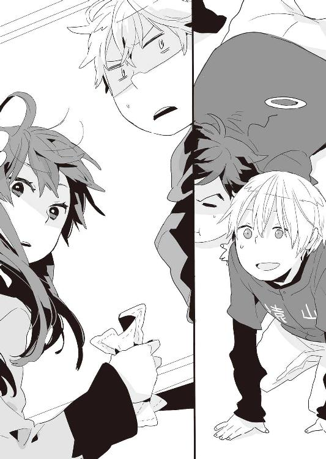

| ○×△べーす(1)ねっとりぐちゃぐちゃセルロイド<○×△べーす> (ファミ通文庫) | |
| 月本 一 | |
| (2015) | |
本作品の全部または一部を無断で複製、転載、配信、送信したり、ホームページ上に転載することを禁止します。また、本作品の内容を無断で改変、改ざん等を行うことも禁止します。
購入時にご承諾いただいた規約により、有償・無償にかかわらず本作品を第三者に譲渡することはできません。
本作品は、底本の表現や演出を考慮して本文縦組で制作しております。また一部のページを改変しております。ごらんになるリーディングシステムにより、表示の差が認められることがあります。
「投げろ！」
それは忘れもしない入学式当日。
僕の高校生活のすべてを決定したとも言える、変態との出会いの日であった。
「投げろ、そこの寝癖ボーイ！ 聞こえているだろう、早く投げたまえ！ 否、投げると良い！ 否々、投げるべきである！ 否々々、投げざるを得ないだろう、さぁ！」
「......はぁ」
投げろ投げろ、と言われても。何のことだかさっぱりだった。
本日は四月六日。
僕がこれから三年間通うことになる、私立遠山高校の入学式。
その早朝の出来事である。
「投げろ！ いやむしろ、投げてください！ 投げてくれ、頼む！ 今生のお願いだ、今すぐ投げてくれ！」
「......」
願書の提出、受験本番、合格発表――と、すでに三回は緊張感を持ちつつ通ってきた我が家から遠山高校への道のりは、その半分近くが見晴らしの良い河川敷なので、地味にとぼとぼ徒歩でその景観を味わうのもなかなかオツなものである。
天気は良く、風もさわやか、景色も美しくてとても清々しい......の、だが。
そんな気分をブチ壊しにする、変な奴と遭遇してしまった。
「なッ・げッ・ろッ！ あそれ、ナっ、ゲっ、ロっ！ はよいしょ、ぬぁッ、ぐぇッ、るぉッ！」
「............」
念のために、と早く家を出過ぎたせいか、周りには僕くらいしか人影が見当たらないので――おそらく、この変態極まりない大声は僕に向けられているのだろう。
しかし......一体、投げるって何を。
匙か？ 僕は医者じゃないぞ。
身か？ 確かに目の前には河があるけれども。
まったくわけがわからなかったが......最近の世の中は荒んでいて物騒だって言うし、変に相手の機嫌を損ねて刺されてしまう可能性がなきにしもあらず。
やむなく、後ろを振り返って声の主を直視する。
キャッチャーだった。
「お！ ようやくこっち向いたぞひゃっほーい！ まずは第一段階クリアか幸先良いぞ中村雅夫背番号ゼロツー！ さぁこのノリでいっちょ第二段階も軽～く突破してみようか！ 投げろ寝癖少年！ バチコーン！」
「......」
やっかましい奴だなぁ......というのが、第一印象。
この時点では、まぁまだその程度の評価止まりだったのだが。
「投げろ、投げろって......何を？ てか、誰？」
「やっほーい、口をきいてもらえたぞ第二段階！ さぁこの調子で第三段階までいっちゃおうかぁ!? さ、投げたまえ！ 練れば練るほどぐらつくセメント......略して寝癖ボーイ！ カマーン！」
凄く使いたくないセメントだった。
ていうか、段階が小刻みだな......今はやりのスモールステップ？
そして未だにわからない目的物。
完璧スルーされた僕の問いかけ。
「......あの、どちら様？」
「俺か!? 俺は中村雅夫とさっき名乗ったはずだが！」
......まぁ、そうなんだけど。
「そして、見ての通りキャッチャーだが！」
......それ以上の補足説明はないのね。
キャッチャー中村雅夫（以下中村）は、胴体と脚のプロテクターはもちろん（何がもちろんなのだかよくわからないが）、マスクにミットまで装着した、野球のキャッチャーの出で立ちで威風堂々と河川敷に仁王立ちしていた。
そして中村は僕の足元らへんを指差し、
「御託はいいからはよ投げたまえ！」
と、一方的に命令してくるのだった。
これで僕の足元に犬のうんこでも落ちていたら全力で投げつけてやること大請け合いの所存だったのだが、しかし一度冷静になって思いとどまってみれば素手である現状、そんなことはむしろ真っ平御免の展開なわけであって、果たしてそこにただの野球のボールが転がっていたのを発見したときの僕の安堵感といったら、一体どれだけの人間が共感し理解してくれることだろうか。
野球のボールである。それも硬式用。「硬」式と表記するだけあって、当たると結構痛い。高校球児やプロ野球選手が己のすべてを懸けて追いかけ続ける、あの魔性の白球である。
要するに、これを投げてくれ、ということだろうか。
しかしまぁ、なんで一体。
「む、なぜ投げない!? 手に取ったのに、手に取ったのに！ じ、焦らさないで早く投げたまえよ！ ねっとりぐちゃぐちゃセルロイド、略して寝癖ボーイ！」
段々悪化してる。
こりゃ早く投げないと次何を言われるかわかったもんじゃない。
そしてこの髪型は断じて寝癖ではない、ワックスだ。
「ほいっ」
変人と早くエンガチョしたかったので、僕はさっさと中村に向かってボールを投げることにした。早朝で周りに人がいなくて良かったと思う半面、そもそももっと遅めに登校してたらこんなふうに絡まれることもなかったんじゃないか、と思わなくもない。
まぁ......いいや。
そんな感じで適当に、投げるというよりはむしろ放るという表現が相応しいくらいの調子だったのだが。
しかし中村は、
「ぽすっ」
とミットに収まったボールと、それから僕の顔とを何度も見比べて――マスクを外し、全速力でこっちに走って来た。
一目見て「うわ野球部だ！」と思わず口走ってしまうようなイガグリ少年だったが、唯一野球部員として失敗だったのは目が輝き過ぎていたのと妙にイケメンだったことか。
何事か。
何か不満でもあるのか。
起訴するつもりならこっちも全力で闘ってやるぞ、コノヤロウ！
「背番号ゼロワン、ピッチャー寝癖ボーイ！」
がしぃっ、と。
漫画化されるならたぶん誌面に収まりきらないだろうくらい大きく力強く、中村は僕の肩を摑んでそう叫んだ。
ほくにはかれのにほんこかよくわからなかつた。
「......はい？」
「ピッチャーだよピッチャー、寝癖ボーイ！」
ピッチャー、ぴっちゃー......そしてボーイ。
居酒屋？
未成年だからお酒はＮＧですよ？
なんてボケで逃げ切れる程度の相手だったら、どれだけ幸せな人生を歩めたことか。
「因みに『しとしとピッチャー、しとピッチャー』なんてボケは許さないからな、ネグリジェボーイ！」
「急にいやらしくなったな......そしてそのネタは僕にはよくわからない」
ていうかコイツ、見かけによらず力強いな。バシバシ叩かれてるけど、そろそろ肩が脱臼しそうなんだが。
「......で、何、ピッチャー？ 野球の？ 僕が？」
「イエス、ザッツライト！」
「なんで？」
「いやいや、そこは『ピッチャーなのかライトなのか、はっきりしろよ！』って突っ込みをするべきだろ、ネクラボーイ！」
「......」
初対面だよな、この中村？
激しくド突き回したいんだが。
「......まぁ、ライトは置いておくとして」
「ライトだけにか！ うまいな根室ボーイ！」
......？
何かうまいことになってるか？
根室もよくわからないのでスルー。
「ピッチャーと言われても、よくわからない。詳しく。かつ、簡潔に」
「遠山高校！ 野球部！ 部員不足！ 廃部寸前！ 助けろ！ 以上！」
「......すげぇ」
ここまで詳しく、かつ簡潔に説明されるとは思っていなかった。
文章にすらなっていないけど。
えーと......うん？
「要するに、遠山高校の野球部に入れ、と」
「おう！」
「ポジションはピッチャーだ、と」
「おうおう！」
「部員が少なく、夏までに一勝もできなければ廃部だ、と」
「おうおうおう！」
まじか。
最後のはアテズッポウだったのだが。
しかし――ピッチャー？
あんなボールで？
あんなボールで......ピッチャーをやれと？
あの一球のどこに素質を見出したのだろうか。
「正気？」
「野球だ！」
......？
もしかして将棋と聞き間違えたのか？
逐一コミュニケーションに弊害が生じる中村だった。
「そういうわけで俺と一緒に野球をしよう！ 俺キャッチャー、ユーピッチャーで！」
いや、そんなこと言われても。
僕には僕の思い描いている高校生活があるわけで。
ましてや、野球部なんて言語道断なわけであって。
僕は辞退させていただく旨を述べた。しかし中村は手強かった。何が手強かったかといえば、まるでこちらの話を聞かず、自分の主張ばかりを声高に宣言し続けるというスタイルを徹頭徹尾貫き通したことが、である。
要するにコミュニケーションが成立しなかった。
そんな奴とバッテリーが組めるわけもなかった。
「他の人をあたってください」
「ユーじゃなきゃ駄目なんだよ、根っこはグロイ青年、略して寝癖ボーイ！」
「青年の時点ですでにボーイじゃないわけだが、しかしなにゆえ僕でなければならないのだろう、そのあたりを詳しく解説してもらえないだろうか、先ほどのような単語の羅列で構わないので」
「部員はまだまだ足りないが、やる気と熱意とエンターテインメント性だけは他のどこにも負けていないから、よろしく！」
すげぇ。
ここまで話が通じないとなると......コイツ、幻覚か何かだろうか？
僕疲れてんのかな。
こわいなぁ。
何なんだろう、この中村。
「じゃ、よろしくな寝癖ボーイ！」
爽やかな、凄く爽やかな笑みを浮かべて、キャッチャー中村（無駄にイケメン）は僕の前から颯爽と走り去っていってしまった。
「......何だったんだ、本当に」
あまりといっちゃあまりの勢いに、ついつい普通に会話に応じていたが......よくよく考えてみると、なんで僕が遠山高校の新入生であることを知っていたんだろな、あいつ。服装だってコレ、レンタルで今日一日だけ借りてきたスーツなわけだし、推測にしたってどうにも断定口調が多すぎたし......。
うん。
謎。
個人情報の漏洩だと考えると地味に怖いんだが......まぁ、あいつあんまり頭良くなさそうだったし、そんな深刻に考えても仕方のないことなのかもしれない。
「さて......」
この折角いただいた勧誘やら地図やらの紙資源をどうしようか――と悩むこと数秒、すぐ脇に河があるということで、僕は小学校の頃に行ったキャンプを思い出しながら小舟を折り、ささやかに流してお別れすることにした。願わくは、これを拾った誰かほかの遠山高生にあの変態の餌食となってもらいたいものである。
友情？ 努力？ 勝利？
ノーサンキュー！
熱血？ 根性？ 青春？
オナカイッパイ！
僕はのんべんだらりとのんびりだらだら、ぐだぐだ喋ってへらへら笑っていられる部活に入りたい。のほほほんとした放課後が欲しい。競い合うわけでもなく、ただ一緒に遊んでいるだけの楽しい友達を作りたい。
それが僕の高校計画。
中学からのすべてを脱却し、新しい人生に切り替えるのだ......！
という幻想は、ものの見事に瓦解した。
＊
それから数時間後。
遠山高校。
入学式が終わって――四階にある、一年生教室の一つ。
「はあぁぁぁあぁぁぁぁあぁぁ......」
波動弾を撃つために気を溜めている......というわけではなく、むしろ逆で、がっつり後ろ向きに気力をだらだら吐き流している迷惑野郎は、誰あろうこの僕である。
「はぁあぁぁ......」
高校選びからやり直したい。
いや、中学校から......いやいや小学校、さては生まれて来る星と時代の選択から、いっそのことやり直したいと思わなくもない。
とにかく......鬱。
――ピッ。
「うー、帰りたいよぅ......」
帰ってどうなるというわけでもないが帰りたい。しかしこのあと書類の提出やら写真撮影やらがあって帰るに帰れないわけで......でもやっぱり帰りたい。なんとなくではなく、明確に。そらもう、いますぐただちに速やかに。
とはいえ。
さすがに入学早々そんな我侭を通そうものならきっと怖い先輩方に目をつけられてしまうに違いないので、ささやかなる反抗心は不貞寝程度に留めておく。
そうして机に突っ伏すこと数分。
「おぅい。どしたの、桂木くん？」
桂木。僕の名字である。下の名前は悠と言う。
......洒落じゃないよ、別に。
「具合でも悪いの？」
「いや......そういうわけじゃ、ないんだけどさ」
まぁ大丈夫だよ、と。心配そうに声をかけてきた、後ろの席の男子に返事をする。
小島秀一。
名前の関係上一つ後ろの席であり、僕と同じで早めに登校していたため最初の話し相手となれたのが彼である。
ぱっと見の第一印象としては草食系優男といった感じで、全体的に線が細い。すっと端整な目鼻立ちは、若干外人の血が入っているように見えなくもない。
――ピピッ。
「そう？ ならいいんだけどさ」あまり深くは追及せず、小島くんはころりと話題を変える。
「ところで、もう決めた？」
「......何を？」
「委員会」
......何ソレ知ラナイ。
訊くと、小島くんは目を丸くした。
「え。ホラ、入学式が始まる前に、先生が言ってたじゃん。式の間はどうせすることなくて暇で発狂しそうになるだろうから、適当に何か考えておけって」
「そうだったっけ」
言われたような気もするし、言われていないような気もする。
他に気になる、というか気にかかる、というか気が重いことがあったわけで。
――ピピピ。
「まぁ......どっか楽そうで、面倒臭くなさそうなのがいいかな。そっちは？」
腰から上を九十度弱、さらに首を九十度弱ほど右回転させ、自分の席に座ったまま僕は小島くんに問う。彼は「んー」と、少し悩むような素振りを見せてから、
「普通に学級代表でもいいと思うんだけど、文化祭とか体育祭の実行委員もいいかなぁ、と。行事が終わっちゃえば暇だろうけど、ほら、短期的な爆発力としては学代よりも上でしょ？」
「......ん？」同意を求められたと気付くのに数秒かかり、曖昧に応えておく。
「あ、あぁ......そうだね」
「あ、でもあれかな。学代だったら、体育祭とか文化祭のときも活動できるし、長期的に見たらそっちのが燃えるのかな？ 熱いのかな？」
なんか知らんがモチベーション高いな。僕とは真逆である。
それから小島くんは委員会を決める話から勝手に脱線し、自分がいかに高校生活を充実させたいかなどを熱く語り始めた。恋に部活に委員会に、バイトに趣味にボランティア......と、とにかく長い。今朝の変態といい、人の話をあまり聞かない人とよく出逢うものである。おかしいな、天気予報では何も言ってなかったのに......。
――ピピピピピ。
「色々思ったけど、合唱祭実行委員とかも熱いよね。最初はなかなかまとまらないだろうけど、そこを乗り越えていくのがウンヌン」
――ピピピ、ピコーン。
「部活と勉強も両立させたいな。そしてなおかつバイトでお金を貯める！ 厳しいけどその分やっぱり熱いよねカンヌン」
――ピコーンピコーンピコーンピコーン。
「それからできれば、可愛い彼女も作って......」
「こんにちは、桂木さん」
凜――と。日本刀のように鋭い声が、僕らの間を切り裂いた。
小島くんの言葉も、そこでぴたりと凍る。
僕らの傍らに、一人の少女が立っていた。
「奇遇ですね。同じ学校で、しかも同じクラスだなんて」
端麗に整った容姿。
「まぁ、来年のことはまだわかりませんが、一応この一年間は、ということで」
泰然とした佇まい。
「よろしく――お願いしますね」
そう軽く会釈して、こちらの反応などお構いなしに、彼女は自分の席へと戻ってゆく。
立てば芍薬、座れば牡丹、歩く姿は百合の花――とは、ちと表現が古いか。
そんな女生徒の後ろ姿をしばし呆然と眺めて、小島くんは確信したように言った。
「......なるほど、桂木くんの彼女さんか」
「いや違う」
不本意にもほどがあった。
「え、あれ、違うの？」
「違うも何も、今のどこをどう見ればそういう解釈に至るのかが僕にはまったく理解不能なわけなんだが」
「いやぁ......だって、ねぇ」
可愛いし、と。
ぼんやり呟いて、そういや代表挨拶の子だっけ、と首を傾げる。
その言葉で蘇る、数時間前の悪夢。
のほほんとした高校生活を送るんだうふふあはは、と夢見ながら臨んだ入学式。
その新入生代表挨拶の場で、彼女――柳瀬純は立ちあがった。
幼さを残しつつも整った顔立ち。高さはないがしなやかな体軀。全身に纏う雰囲気は凜と鋭い日本刀のよう。姿勢からして常人とはかけ離れた何かを感じさせる彼女の姿に見惚れる視線は多かれど、僕が思ったことはただ一つ。
――なんであいつがここにいるんだ......。
それだけでもう、どよ～んと、気分がメコメコ凹んでしまったわけである。
「でも声かけてくるってことは、同じ中学校だったり小学校だったりしたんでしょ？」
「ん......まぁ、大体、そんなところ」
適当にはぐらかそうと素っ気なく返事をするが......どこがスイッチに触れたのか、興味津々といったふうに小島くんは目を輝かせる。
「ふーん。幼なじみってヤツだ。で、どんな子？」
「......さぁ」
「頭は......良いんだろうねぇ。代表挨拶やるくらいだし」
「まぁ」
「運動もできそうだよね。なんかもう、歩き方とか、振舞いとかからしてさ」
「ふぅん」
「外見もいいし......彼氏とかいるのかな？ 桂木くん、何か知らない？」
「知ーらんぺったんゴーリーラ」
「......何でそんな露骨に冷めてるの？ 熱くないよ？」
「あ、ほら。先生来たよ」
ノーコメントからのはぐらかしを決め込み、姿勢を正して前を向く。不満げな小島くんに後ろから人差し指で「ホアタタタタタ」とかグサグサ刺されまくってるけど無視。
「うーい、静まれお前らー」
気だるげで乱暴な口調だが、一応性別は女性で歳も二十代後半（推定）と、まだまだお若い感じの担任教師が前に立つ。その掛け声で、小島くんも渋々だが大人しくなってくれた。なんかサバサバしていて個人的に好印象。
「一年間、君らの担任やる芝原だ。好きなものは余暇・休日、嫌いなものは時間の無駄。というわけで、先に面倒臭いことからやってくぞー」
芝原先生は黒板に「委員会」とチョークで書き、けれど途中で面倒臭くなったのだろう、ストレートの黒髪をぼさぼさ掻き毟ってこちらに振り返る。
「学代だけ男女一人ずつ先に決めて、あと仕切ってくれ。こういうのはあれだ、慣れだかんな。どんどん君らに任せていった方がよかろ。んじゃ、挙手開始」かと思いきや、さらに付け加えて、「あ、委員会決めの制限時間は三十分な。それで決まらなかったらあとは私が決めておく。文句は極力聞かん。よほどの事情がない限りは変更ナシだ」
おう、おう......おう。なんという注文の嵐。
なんかサバサバしすぎていて、個人的にちょっと遠慮したい。
全員がそう思っているのか、あるいはただ単に学級代表に興味がないだけなのか、はたまたちょっと遠慮しているのかはしらないが......しばらく、誰の手も上がらない時間が流れて――。
「はい」
すっ――と。
四十名前後からなる教室の中。ようやく一本だけ、白い腕が綺麗に上がる。
件の柳瀬純だった。
「お、いいな、積極的で。お前らも見習えよー。ホレ、女子。他にいないか？」
にっこり問いかけるも、あたり一帯、水を打ったように静まり返るだけである。
はい、対抗馬ナシ。
代表挨拶の人だと知っているのが半分、興味ないのが半分、といったところだろうか。まぁ、すんなり決まることに意義を申し立てる人がいないのは、楽っちゃ楽だが。
芝原先生も沈黙を全会一致と見なし、
「んじゃあ、男子の方だが......」
じとーっ、と。今度はクラス中の男子生徒諸君を睥睨。「さっさと挙手して仕事代われ」というメッセージを、その濁った双眸が如実に物語っている。
が――沈黙。
当たり前といえば当たり前の反応。
しかししばらくすると、その胡乱な眼つきがなぜか僕に向けられた。
......お？
「うし。んじゃ、他にいないなら、男子の方も決まりかな。えーっと......名前は？」
あれ、おかしいな......何で強制進行してるんだろう。
新世代型のイジメだろうか。
「はい、小島秀一です」
とか思っていたら、後ろの席の小島くんが手を上げていただけだった。
ヨカッター。
ガンバッテネーコジマ、ク......ん？
「やっぱり、学級代表にするよ。彼女のこと、よく知りたいし......」言って、小島くんは柳瀬の方をちらりと見やり、ぽんぽんと僕の肩を叩く。
「何か知ってるようだったらアドバイスよろしくね」
嫌じゃ。
なんてストレートに否定的な意思表明ができるほど僕は心が頑丈にできていないわけで、しかしここは頷いてやるまい、絶対に頷くものか！ という固い意志も持ち合わせていたため中途半端に投げやりにこう呟いた。
「......アドバイスじゃないけど、一つだけ」
「ん、何？」
「あんまり僕を巻き込まないで......」
そして暗澹とした気分のまま、ホームシック発動中の僕は心の中に還るべき故郷を求め、机に突っ伏し不貞寝を決め込むことにした。
因みにその後。
委員会決めはやっぱり三十分以内なんてシビアな時間制限で終了することなどなく――芝原先生による厳正なランダム抽選の結果、僕は金魚係なる役職に任命されることとなった。
えーっと......今度こそ新手のイジメ？
＊
放課後。
夕陽が差し込む教室。
大方の行事――教科書購入、写真撮影、自己紹介、先生のお話、書類提出などなど――が終わって、無人の空間。
ただし、僕一人を除いて。
「はぁ......」
教室の後ろのほうでぽつねんと立ち、溜息一つ。
目の前にはやたらと高価そうな水槽。
その中で泳いでいるのは、名前と外見とが一致しないお魚さん。
「金魚ってなんで金魚って名前なんだろ......」
餌をぱらぱら撒きつつ、そんなことを考えるが、
「......はぁ」
無益すぎて、またも溜息が出てくる。
なんなんだろな、この係。いらなくない？
どのクラスでも飼育することになってるらしいけど、一体誰が始めたコトなんだろか。
「ま、私立だしねぇ。変なところがあってもおかしくはないか......ん？」
呟き、ふと振り返ると――誰かの机の下に、何かピンク色の塊が落ちている。
「......忘れ物、かな？」
餌缶をロッカーの上に置き、歩み寄ってその物体をひろい上げ――
「......おふぅ」
思わず息が漏れる。
原色ピンクに金魚のイラスト――中央には「助」の一文字。
それは、Ｔシャツだった。
色合いとか、漢字のチョイスとか、別にそれ単体は悪くないのだが......組み合わせるとなんか微妙に見えてしまう奇跡の化学反応、「このシャツを作ったのは誰だ!?」と憤慨する人がでてきてもおかしくない感じに仕上がってしまっている。
うーん。
放っておいたほうが良いのかなぁ......と、しばし悩んでいると、
「あれ、まだいたんですか？」
がらららり――と。
教室のドアが開かれ、声が飛び込んできた。
唐突な出来事に、反応が遅れる。
「掃除はとっくに終わっているはずですが」
言いながら、しゃんと背筋を伸ばしてこちらに歩み寄って来たのは柳瀬純。
「......係のせい」
なんでここに、という疑問は嚥下して、渋々応答。
柳瀬は怪訝そうな顔をした。
「係......って、金魚ですよね？ そんなに手間でしたか？」
「集会が異様に長引いたの、それだけ」
そう、ありえないくらい長引いた。その熱のいれようは学校の名前が金魚高校でもいいんじゃないかと思ったほどだし、担当教員は誰かに脅迫でもされてるんじゃないかってくらい、何度もしつこく話を繰り返した。
そんなわけで、こんな時間。
柳瀬は一応納得したようで、ご苦労様です、とだけ言った。
そして彼女はしゃがみ込み、あちこちの机の中を、何か忘れ物でも探すかのように漁り始める。その背中は、もう僕のことなど気にしていないようで――あまりにも自然で、つい、口を開いてしまう。
「......なんでお前は、ここにいるんだよ」
柳瀬は振り向きもせず、
「私はただ、忘れ物を取りにきただけです」
「そうじゃなくて――」
「？」
小首を傾げてこちらを見上げる彼女に、僕は言う。
「なんでこんな学校に来てんだよっ」
そもそも論。
遠山高校は進学校でも何でもない、マイナーな私立校の一つだ。
対して柳瀬純という人間は、優等生なんて言葉ではまるで足らないほどに超人であり、内申から全国テストから生徒会活動から、あらゆる面で輝かしい活躍をしてきたわけで――間違っても、こんな無名の私立高校なんかに来ることはないはずなのに。
......いや。
本当は、そんなことどうだっていいんだ。
僕はただ単純に、彼女と会いたくなかっただけなのだ。
過去を捨てるために。
そして新しい未来を歩み始めるために。
どこへでも――知らないところに行ってくれればよかったのに。
だからそう訊ねた。というよりは、むしろ批難がましく言ったのだが、しかし柳瀬は涼しい顔で答える。まるで、あらかじめ言われるだろうと知っていたかのように。
「それは私の選択です。そんなことを言ったら、桂木さんはなぜここに？」
「......」
言葉に窮する。
何も言い返せずにいると、柳瀬はころりと調子を変えた。
「ま。そんなことはさておいて......返していただいてもよろしいですかね」
「......何を？」
「それ」
と言って、僕の手の中にある物体ピンクを指差した。
「私の忘れ物です」
............お前のだったのか。
どうコメントするべきか悩みかけたが、その決断を下す必要はなかった。
「こーんにーちはー」
「一年生の教室だから一年生......で、いいんだよね？」
教室の戸口から声がした。
柳瀬もその声に気がついて振り向きつつ、器用に僕の手の中からＴシャツをさり気なく奪い取る。うむ、もはや何も言うまい。
さておき。
「......どちら様？」
率直な疑問。
チェックのシャツにジーンズという、いかにも記憶に残らない私服スタイルから、一年生ではないだろうと推測。まぁ、先ほどの台詞からも、そうわかるわけだが。
二人の男子（恐らく上級生）は、
「んーと。まぁ、その......部活勧誘に来た者でして」
「よければ、やきゅ」
何か言いながら入って来ようとして――しかしその直前、真横から吹き飛ばされた。そのため教室に入ることは叶わず、廊下の彼方へと転がって退場してゆく。
なんだ。
なんだなんだなんだ。
「たーいちょー！」
二人の平凡男子を吹っ飛ばした少女――青髪のポニーテールは、僕らの教室をざっと見渡すと、続いてやってきた赤髪ツーテールの少女に大きな声をかけた。
「この教室にまだポスター貼ってません！」
「許可する、貼りたまえふくたいちょー！」
「さー、いえっさー！」
元気だなぁ。風の子だなぁ。
でも誰この人たち。
なんて疑問とはお構いなしに、赤と青の女子は二人して、教室のあっちにぺたぺたこっちにぺたぺた、何かのポスターを貼り始める。見てみるとそれらは一連の漫画のようで、最後のページは「続きは今すぐ、文化系部室棟三階Ｂ教室へ！」というオチになっており、完結していない。
なるほど勧誘ポスターか。
なかなか上手い方法だ――と、一瞬素直に感心したが、画風がだいぶお耽美なので、すでにここから部員の選別テストが始まっているような気がしなくもない。
そんなふうに感心半分あきれ半分で彼女らの貼ったポスター漫画を眺めていると、
「......むむ？」
「むむむむむ？」
ツカツカツカ、と。
競歩選手のように接近され、まじまじ顔を覗き込まれた。
「やっぱり......カナリオ様だ！」
「......はい？」
「堕天の隻腕カナリオ・イルシュタッド！」
「......だれ？」
「写真を撮りましょう、カナリオ様！」
「そういうのは事務所を通してからお願いします」
「営利目的には使いませんから！ 個人の趣味の範囲ですから！」
「僕の肖像は商業レベルだったのか......」
いつの間に......なんてぼんやり考えている間に、カシャカシャと携帯で十数枚近く写真を撮られていた。なんという早業ってかイヤー、魂抜かれる！
「ふおおぉ......やばい、写真映りもばっちりとか......今年の一年生豊作すぎる......」
「さっきクウラ様にも会ったし、いつかはこの二人でツーショットさせたいね......」
こくこくしみじみ頷き合いながら言葉を交わす赤と青。なんかウキウキソワソワ......というか、若干興奮しているようですらあり、だいぶコワイ。やだなぁ。通報した方がいいのかなぁ。
などと本気で考え込みかけたとき、二人の女子生徒は「「どぞ！」」とハモって何かしらを突き付けてきた。勢いに押され、つい受け取ってしまう。
名刺である。
【漫研部長】【赤嶺葉月】【基本レイヤー】【好きな言葉は習うより馴れろ】
【漫研会長】【青峰弥生】【基本レーター】【好きな言葉は花より談合】
「......んっと、」
地味に誤字誤用があるのは仕様なのか？
あと、部長と会長ってのも気になる。
「ま、そういうわけで、よかったら来てね！」
「ご来訪、お待ちしておりまーす！」
何がそういうわけなんだろか。質問すらさせてくれず、赤と青のコンビは来たときと同じように、風のごとく去って行ってしまう。
「......お？」
ついでに気付けば柳瀬もいなくなっており、教室にはまた僕一人。
なんだかなぁ。
夢か現か疑いたくなるような一瞬だったなぁ。
「ふーむ......」
しかし――部活、か。何か忘れてるような気がするんだが、はて何だっけ。
思い出せないが、何か嫌な予感はする。
＊
そして案の定、事件は翌日の早朝に起こった。
犯人はヤス......ではなく、中村雅夫。
被害者は僕と、僕のクラスメイツ及び一時間目化学の先生。
「寝癖ボーイは登校済みだろうか!?」
奴は――さすがにキャッチャー姿というわけではなかったが、野球のユニフォーム姿で僕らの教室に現れ、市販の拡声器もかくやという大声で早朝一発、そう叫んだ。
なんだ。
なんだなんだなんだなんだ。
「熱湯ぐつぐつ『先輩、本当にこれ飲むんですか？』......略して寝癖ボーイ！ 君がこのクラスにいることはわかっている、大人しく投降したまえ！」
いやいやいやいや。意味わからんて。
見れば、当然クラスの誰もがポカン状態で、化学の先生も口を半開きにして唖然としておられる。
「おらんのか、寝癖ボーイ！ 背番号ゼロワン！ 我が遠山高校野球部のエースの座を確約された期待の大型新人！」
んーと......なんで僕、こんなに目ぇ付けられちゃったんだろ。
何か悪いことでもしたっけ？
「なんかよくわからないけど......熱いね、あの人」
後ろから雑音が聞こえた気がしたけど無視。
しかし中村はその音を聞き逃さなかったようで、その声のする方へ視線を向けて――必然的に、僕の姿を発見してしまった。
「お、いたぞ！ 寝る時も・ぐっしょり汗かく・背中かな......略して寝癖ボーイ！」
かかねーよ別に。しかもさり気に五・七・五。
中村はずかずかと教室に入り、僕の席まで来たかと思うと、
「ちょっと失礼、後ろの少年。少し、机をどけてもらってもいいかな？」
そう言って、小島くんの机があったスペースに身体を割り込ませると――椅子ごと、僕を持ち上げた。
なんだこれ。
感覚としては、遊園地にある落下型アトラクションに似ている。
などとぼんやり思っていたら......中村はお得意の大声でいきなり叫び始めた。
「えーらやっさえーらやっさ！」
わっ、わっ。跳ねるな、小刻みに跳ねるな！
「わっしょい、わっしょい！」
「おい、待て、中村！ 何してんだアンタ!?」
さすがに僕も怒る。というか、混乱する。
「何がしたいの？」
「ユーに罰を与えに来たのさ！」
「タチ悪いな！ 何かしたか僕!?」
「ユーは昨日来なかった！ ユーは昨日来なかった！」
あー。
そう言えば何か誘われていた気がしないでもないな。
それか、昨日忘れてたことって。
忘れていても良かったんだな......と思う半面、そのしわ寄せが今ここにきてしまっているのかと思うと、どっちもクソの二択であると言わざるを得ない。
「......とりあえず落ちつけ、中村。話をしよう、休み時間に」
「休み時間は貴重な練習時間だろ！」
「今はもっと貴重な授業時間だよ！」
あーあーあーあー。
ホントやめて。やばいんだって、クラス中の視線が痛いんだってば。
特に――
「......」
ちらり、と。柳瀬の方に視線を向ける。
表情から心の中までは読みとれない。びっくりしているようにも、あきれているようにも――責めているようにも、どのようにもとれてしまう。
あぁ――困ったな。
一体どうやって、この場を切り抜けるべきか。
「よ、よくわからないけど......熱いね、桂木くん......！」
助けてくれとは言わない、小島くん。せめて黙っていてくれ。
それが情けというものだ。
「わっせ！ わっせ！ かわっせ市場は誰のもの～♪」
頭の悪そうな歌（恐らくオリジナル）を意気揚々と歌いながら、中村は祭りのお神輿を扱うような感じで僕を教室の外へと運び出そうとする。
させるものか。
「――わかった」
他のクラスには飛び火させず。
かつ、中村を引き下がらせ。
その上で――柳瀬に勘違いをさせない、そんな妥協案。
「今日は野球部に行こう」
ピタリ――と。中村が動きを止める。
すかさず僕は言った。
「頭ごなしで全否定は悪かった。一度行ってから、入部するかどうか決めたい。それならいいだろ？」
「こ・こ・ろ・え・た！」
心得られました。
ぴちゃぴちゃ肩に落ちてくる水滴は、きっと雨だろう。中村の涙だなんてことは断じて認めない。
「だから、今は下ろしてくれ。授業中だし」
「わかった......」
「放課後行くよ、野球部。部室でいいの？」
「メイウェンティ......」
なぜか中国語だった。
モーマンタイではないあたり、ちょっと渋いと思ってしまった。
そして中村は意外にも丁重に僕をもといたところに戻してくれて――教室のドアまで進むとこちらを振り向いて深々と一礼。
「お邪魔しました」
袖で顔を拭っていた。
泣くな男の子。
泣きたいのは僕の方だ。正反対の意味で。
「お邪魔......しましたああああああああああああ！」
小学校の頃によく見た、校庭のスプリンクラーがごとく涙を撒き散らかし、絶叫しながら中村は廊下を全力疾走して去った。
「待ってるぞぉ『練り物が晩御飯って......』『ぐだぐだ文句言わないの！』『せっかくの誕生日なのに......』略して寝癖ボーイ！ またの名を桂木悠！ 一年五組桂木悠！ 君の入部を、我々野球部は心の底からうわあああああああああああああああん！」
いやいやいやいや。
叫ぶな！ 人の名前を！ ていうか知ってたのかよ！ せっかく頑張って妥協したのに、結局他のクラスにまで飛び火してるよ！
――などと。
そんなふうに喚き散らしたい気持ちは心の奥底へ。現実はクラス中の――とりわけ、柳瀬の視線に委縮することしかできなかったわけで。穴があったら入りたいどころではなかった僕は、そのまま教室から飛び出し、お昼休みが終わるまで屋上で不貞寝を決め込んでしまったわけで。
こうして――。
本当に、こうして。
奴――中村雅夫との出会いによって、僕のしっちゃかめっちゃかな高校野球人生が、不本意にも幕を開けることになってしまったのだった――。
......続くな。
できればこのまま閉幕してくれ。
完。
というわけにはさすがにいかず。
前回までのあらすじ。
突如河川敷に現れたキャッチャー中村は、僕が遠山高校の一年生だということを看破し、授業中の教室に押し入ってまで野球部に入ってピッチャーをやれと言ってきた。
......うん、すげぇ迷惑な話だわな。
逃げ出したいこと山々なのだが......奴のことだ、これ以上避け続けたら何されるかわかったものではない。
被害は最小限に食い止めるべし。
「......ここ、だよな」
放課後――野球部部室前。
何か色んなものを諦めつつも、来てしまったわけで。
「すっごくわかりにくいんだが......なんでこんな場所にあるんだろう」
運動系の部活は普通、校庭のすぐ近くの運動系部室棟にまとめて部室があるのだが......野球部だけはなぜかそこからちょっと距離のある、文化系部室棟の地下にあった。
蛍光灯はチカチカしているものか切れてしまっているものしかなく、通路一帯が幽霊屋敷のように薄暗い。目を凝らして見てもクモの巣とか昆虫の死骸とか、ロクなものが見当たらない。他にある部屋は明らかに使われていない用具室とかオカルト愛好会とか、そんな変なのばっかりだし――迫害でもされてんのかな。人数少ないとか言ってたし。
ちなみに今、小島くんは一緒ではない。彼は彼で目をつけていた部活があるらしく、「ここでお別れになるかもしれないけど、サヨナラは言わないよ......！」とか、無駄に熱い台詞を言っていたのが三十分くらい前のことか。
それからずっと、部室の場所を探すのに迷っていた。
その扉のプレートに「野球部」とぶっとい筆文字で書かれているのを確認してから、ドアノブを回して――
「お邪魔しまー......」
フリーズした。
身体も呼吸も時間も世界もまとめて凍った。
ナゼオキガエチュウノオンナノコガイルノ。
「......」
「......」
黒髪の、清純そうな、純朴そうな顔立ち。
スタイルは『全国平均』という言葉が当てはまりそうなほどに普通で、特段良いわけでも悪いわけでもない。ただ、雪のように透き通った真っ白な肢体は妙に眩しく、この部室だけ一際明るく感じられ、まるで今からここで新世界が創造されようとしているのではないかとさえ思う。
これからジャージに着替えようとしていたらしいその女の子は、僕と視線が合うと一瞬だけ凍りつき、
「い、いや......」
たぶん地球を割るくらいの勢いで叫ぼうと、息を思い切り吸い込んで――
「いやあああああああああああああああああああああ――」
「わあああああああああああごめんなさいごめんなさいすぐ出ていきます今すぐ消え去りますだからどうか警察とか警察とか警察とかにだけはどうかどうかどうか！」
「――ああああああったあああ！ やったやった！ もしかして君、新入部員!?」
――ワッツ......？
すわ、近付いてビンタされるなり物を投げられるなりして暴行された挙句警察に通報され、手首に黒い鉄輪とジャンパーをかけられてどこか遠くへ連れて行かれるのだとばかり思っていた僕が、果たして下着姿の女の子に近付かれて握手され凄く嬉しそうに歓迎されてしまっている今の状況に直面したとき、どれだけ文脈を読み飛ばしたことだろうと疑ってしまったことか、おわかりいただけるだろうか。
何だ、この状況。
詐欺か？ これから詐欺でも始まるのか？
一体どこから彼女の彼氏を名乗る屈強な男が出てくるものかと臨戦態勢に突入する僕だったが、どうもそうではないらしかった。
「えっと、えっとえっと......もしかして君、桂木くん？」
名前が割れていた。
まぁ、十中八九中村と関連しているのだろうけど。
「はい......桂木です」
「わー、そっかぁ......やったやった♪ ようこそ、野球部に♪」
ぴょこぴょこ飛び跳ね、心底嬉しそうにしている彼女には悪いが――否、彼女の名誉を尊重している紳士な僕だからこそ、一つ注意しておく必要性があった。
「すみません......お願いだから、服を着てください......」
「ん？」
なぁに突然......といった表情で僕を見た女の子は、しかし次に自分の現在の姿態を見て、大きく息を吸い込んで、
「いやああああああああああああああああああああああああああああああああ！」
そして彼女は突然僕に気合のビンタをくれると、さらに手当たり次第に近くにあったベースやボールといった道具を投げつけてきた。
あぁ、結局こうなるのね。
＊
「ほんッッッッッッとーに、ごめんなさい！」
「いや、まぁ......僕の方こそ」
実は謝ることなんて一つもない気がするにはするのだが、謙遜は日本人の美徳らしいし、そこは曖昧に笑って誤魔化しておく。
色々物を投げつけられて、僕はちょっと洒落になるかどうかギリギリのラインまで顔面に傷を負っていた。
ジャージに着替え終えた女の子――僕の一つ上の先輩にあたるらしいマネージャーの白山優衣は、現在、僕を部室のベンチに座らせ、救急箱から絆創膏やガーゼなんかを取り出しながら器用に手当てをしてくれている。
掃除がされているのか清潔感はあるものの、用具が多いせいで室内は小狭く、ちょっとばかし息苦しい。
「ごめんね、本当......綺麗な顔に傷つけて」
「まぁ、見た目ほど痛くはないんですが......」
「あ、動かないで」
どうやら口の筋肉を動かすのも駄目らしい。僕はされるがまま、彼女の気が済むまで手当てが終わるのを待つことにした。
しかし――ものっそい近距離である。
傷の具合を見るために顔と顔を鼻先三寸の距離まで近付けられたりすると、さすがに紳士な僕も思わないことがないわけでもなく、目のやり場に困ってしまう。顔から逸らして身体に視線を移すと、さっきのあられもない姿を思い出してしまうし。かと言って、露骨に逸らすのも変に思われるし。
この針のムシロ状態をどうにか打破してくれる救世主が現れないものかと神様に祈り始めてから、たぶん十秒後くらいのことだった。
「よく来たな、寝る間も惜しんでグリンピースを競り落とす男、略して寝癖ボーイ！」
バドムッ、と。
物凄い勢いでドアが開けられたかと思うと、そこから練習着姿の中村が姿を現した。
あなたが僕の救世主か。
チェンジで。
「む？ どうも傷だらけのようだが......まさかここに来る道中、他の部活からのスカウトを断っているうちに、逆恨みされて襲われたとか!?」
ないない。間違ってもそんなことはない。
どんだけ暴走してんだ、アンタの妄想列車は。
「暗がりだから、ここに来る途中の階段で転げ落ちただけ」
僕がそう言うと、白山先輩は「え？」と目を丸くしたが、視線だけで制しておく。別に彼女の名誉を庇っているのではなく、すべて話すと僕にも不利益があるだけなわけで。
中村はその説明だけで納得したのか、特段追及をしてはこなかった。
「それではこの用紙にクラスと名前を......」
「いやちょっと待て」
入部届けの用紙とボールペンを僕のほっぺたにぐいぐい押しつけてくる中村の腕を手刀で叩き落とす。
気が早い、気が早い。
「今朝言ったこと、覚えてるか？」
「覚えているとも！ 野球部に入り、三年間のすべてを捧げますと誓った寝癖ボーイの決意表明はこの脳に一字一句間違えずにインプットしてあるぞ！」
「一句どころか一字もあってねぇよ！ とりあえず見学に来る、としか言わなかったでしょ!?」
捏造されてるよー。この人こわいよー。
......てか。
「なんで僕なんだよ」
昨日が初対面......だよな？
野球経験者です、なんて、一言でも言っただろうか。
中学で活躍していたならともかく――僕はここ一年半、何もしていないわけだし。
中村だけでなく、白山先輩も凄く浮かれ気味だったし。
首を傾げると、中村は言った。
「なんでも何も、昨日の河川敷でのことをもう忘れたのか、寝癖ボーイ!?」
「......本気で言ってんのか、それ？」
本当に適当に投げただけなんだが......しかも下手投げ。
あれでいいなら僕じゃなくてもいいと思うのだが。
「うむ！ 俺はあの一球ですべてを予感したぞ......ユーがこの遠山野球部の救世主となり、明るい未来へ導いてくれると！」
「予感というより勘だよな、たぶんそれ」
本当にそんな理由だけで誘ってきているのだとしたらだいぶ変な話だが......よくよく考えてみればこいつ自体変態なので、別に変でもないのか。負と負を掛け合わせると正になるわけだし、変態が変なことをするのはむしろ自然なことなのかもしれない。
でも常人の僕にその理屈は通用しないし、納得できない。
だから、断固として断ろうとしたのだが、
「ごめんね、桂木くん」
救急箱を片付けながら、白山先輩が申し訳なさそうに口を開いた。
「うちの部活、いま選手が四人しかいないの。試合なんてできる状況じゃないし、見学とかいうレベルでもないのね......」だから、と。本当に申し訳なさそうに、「桂木くん、お願い。少しの間だけでもいいから、桂木くんの力を貸してください。お願いします」
そう言って、白山先輩は腰を直角に曲げ、僕に頭を下げた。
ぴったり九十度だった。
「......」
ここまで人（中村除外）に物を頼まれたのは、生まれて初めてかもしれない。よくわかんないけど、じーん、ときてしまった。本気の気持ちは伝わるものだとか、どこかで聞いたことがないでもないけど......たぶん今、そんな感じ。
「......夏までに一勝しなくちゃいけないんでしたっけ？」
「......うん」
「選手五人じゃ、どうしようもないじゃないですか」
「うん、だからあと四人、どうにかして......え、五人？」
さっと顔を上げ、真っ直ぐこちらを見つめる白山先輩から目を逸らしつつ、ぶっきら棒に言っておく。
渋々と。不本意ながら。
色んな葛藤と小さな疑問にはとりあえず目を瞑りつつ。
「勝てなきゃ廃部。勝ったら存続――僕がいる意味は薄れます。どの道、夏が始まるくらいには辞めちゃうと思いますけど」
それでもよければ、と。
白山先輩に伸ばしたはずの手が――なぜか、ごつごつとした感触に包まれる。
「ありがとおおおおおおおおおおお寝癖ボオオオオオオオイ！」
中村だった。
チェンジで。
「ささ、それではさっそくこの用紙にクラスと名前をば！ あ、ユニフォームと練習着は心配しなくてもいいぞ、すでに妥当なサイズを発注済みだからな！ スパイクやグローブなんかも一応は用意してあるから、自分で買うまでの凌ぎにでも使ってくれるといい！ 部費は半年無料だからメイウェンティ！ ポジションは無論ピッチャー、打順も希望があれば言ってくれ！ 融通しよう！」
「用意周到すぎやしないか!?」
どんだけＶＩＰ待遇なの。
というか......完全に僕が入部すること前提で話進んでたよな。
こわいよー。
「それでは......遠山高校野球部にようこそ、桂木悠くん！」
「歓迎するぞ！」
パ、パァン、と。僕の入部届けを受理すると、先輩二人はどこからかクラッカーを取り出して鳴らした。身体に巻きつく紙テープ。気持ちはわからないでもないが、場所が場所なのでちょっとは考えてほしかった。狭いから音が反響してうるさいし、煙がこもって火薬臭いし。
まぁ――でも。
僕はこうして、遠山高校野球部に正式に入部することと相成ったわけだ。
――不本意ながら。
「で、早速なのだが！」どんなときでもエクスクラメーションマークをつけるのがポリシーなのか、無駄に張った声で中村は言った。
「寝癖ボーイの実力はこの中村雅夫が一番知っている！ 君はそこまで急いで練習に励まなくてもよい！ それよりも、問題なのは人数不足だ！ だからまず、君には部員の勧誘を頑張ってもらいたい！ それまで練習に参加しちゃダーメよ！」
びしぃっ！ と。中村は両腕でバッテンマークを作り、唇を尖らせて白目を剝くというちょっとしたホラーアクションでそんな台詞をのたまった。激しくキモイ。
また滅茶苦茶なことを言う奴だな。
「練習禁止は冗談だけど」白山先輩は中村の言葉に苦笑しつつ、「本当に、一番の問題はそこなのね。最低でも、あと三人は絶対に必要なの」
「三人？ 四人じゃなくて？」
野球は九人で試合に臨むものだと心得ていたのだが。
「最終手段としては、彼女にも出場してもらう！」
びしぃっ、と中村が指差した先には、無論白山先輩の姿が。彼女も苦笑しつつ、ブイサインなんぞを返してくれる。可愛い。
じゃなくて。
「で、できるんですか？」
「こう見えても、中学の頃は女ソフに入ってたのよ？」
「へー、そうなんですか」
「マネージャーだったけど」
「......」
「マネージャー、でしたけど」
「死ぬ気で四人、集めようと思います」
うむうむ、と。二人して頷く。ここまで全部計画通りなんだろうな、どうせ。
小さく溜息を落とすが、内心では底なし沼より深い溜息を落とす僕。
「......一応訊いておくけど、今のところ、守備はどうなってんの？」
とにかく勧誘しなくちゃいけないにしても、そこらへんは把握しておきたかった。後でやりたいポジションがすでに埋まっているなどと言ったら、それだけで人が離れていきかねないし。
「はい！ キャッチャーはワタクシ中村雅夫、中村雅夫でございます！」
「なんで選挙風なの？ ......まぁいいや。それは知ってるから、他」
「右翼・東条庄司！ 中堅・堅霧來智！ 左翼・西木戸幸樹！ 以上！」
「キャッチャーと外野だけ!?」
自主性ないなぁ......あるいは敬遠されてんのか、中村？
そう考えるとちょっとだけおセンチになってしまう僕なのであった。
中村カワイソス。
「......てことは、えーと、バッテリー以外の内野全員？ 誘わなきゃいけないの？」
致命的じゃないか、それ。
経験者が多く集まっても、急造チームじゃ難しいものがあるだろう。基本的な守備技能だけでなく、内野はとにかく頭使うプレーが多いし、連携も重要だ。付き合いの長い先輩方同士で固めておいてほしかったのだが。
「俺らも頑張って勧誘してはみるが......ぶっちゃけ期待しないでおいてくれ！」
「ぶっちゃけすぎだろ......なんでそんな自信満々なの？」
誇るべきところじゃないよな、まったく。
あきれたように言うと、白山先輩が申し訳なさそうに答えた。
「今年、中学時代の後輩が全然入ってきていないのよ、みんな。東条くんや西木戸くんも勧誘やってるけど、芳しくないみたいだし......堅霧先輩はまぁ、アレだし......」
「アレ？」
アレって何？
首を傾げて中村を見るが、「まぁ、それより！」なんてふうに、いきなり話題を切り替えられた。あぁそういやコイツは他人の文脈を引き継げない人間だったっけ。人選失敗。
「同じ一年生なら、寝癖ボーイの誘った人員の方が良いだろう！ これから同志になるわけだからな！」
「......あれ」今の発言に、僕は小首を傾げる。
「中村は......？」
「俺は今年で二年生だが、何か!?」
「いや、なんでも......」
そうか、そうだよな。こんなハチャメチャな一年生、さすがにいないよな。イマドキ。
うーむ、思わず今までずっと一年生だと思ってタメ口だったけど......改めた方がいいのだろうか。今さらな感じもするが、野球なんて小さい頃からやってると上下関係について妙に敏感になってしまうものだから、どうしたものかと考えあぐねてしまう。
「何を悩んでいるんだ!? ネズミのグリルをせっつく庶民、略して寝癖ボーイ！」
タメ口でいこう。
コイツに尊敬の念を抱くのは人として間違っている。
「まぁ......わかった。どうにか内野四人、頑張って集めてくる」
「おぉそうか！ 頼もしいな、任せたぞ寝癖ボーイ！」
まぁ、そうは言ってもアテは一人しかいないのだが。
＊
翌日早朝――教室。
一時間目が始まる前のこと。
「――桂木くん......」
わなわなわな、と。拳を固く握りしめて震える小島くん。
「熱い......熱いよ、それ！ いいね、野球部！」
ついさっき、勧誘の話を持ちかけたわけで。したら、なんか予想以上に好反応だったわけで。はて――他の部活に興味津々だったはずなのだが。
問うと、小島くんは大物の風格でゆるりと首を振った。
「いや、僕ね、昨日はバスケ部の見学に行ってきたんだけど」
「何か問題でも？」
「人数多いし、やる気も活気もあるし、確かに部員同士の争いは熱いんだけど......なんていうのかな、何か一つ肝心なものが足りないような気がしてて......」
うっとりと、夢見る少女のような眼差しで語る少年Ｋ。
おーい、帰っておいでー。
「弱小で、廃部寸前で、部員集めから始めなくちゃいけない高校生活――いいよ、最上級に熱いよ......僕はそんな世界に憧れていたんだ......そう、たぶんきっと、求めてたのは危機感だったんだよ......」
マジすか。
適材適所すぎて涙が出そうだった。
「そんなわけだから、僕でよければぜひ！」
よろしくね！ と言い、小島くんは満面のスマイルで手を差し出してきた。
その手を握り返し、固い握手を交わす僕ら。幸先良く、部員一人目ゲットである。
......と、そこまでは良かったのだが。
「てことはさ、人数集めなきゃいけないんだよね？」
「うん」
――ピピッ。
「僕が言うのもなんだけど、どっちかといえば初心者より経験者とか、運動できるヒトの方がいいよね？」
「まぁ......そうだね」
――ピピピピッ。
「経験者かどうかは知らないけど、運動できるヒトならこのクラスにいるよね」
「そうなの？」
――ピピッ、ピピピピ。
「昨日、バスケ部行ったときに先輩からちらっと聞いたんだよ。男子だったら縄括りつけてでも連れて来るのにって、悔しそうに言ってたなぁ」
「......男子、だったら？」
言うが早いかバララララ、と。
小島くんは部活紹介の冊子を開き、目次の欄にすすーっと指を走らせる。
そして最後にタタンッ、と。「野球部」の文字を叩いた。
「野球部って、別に男女で区分けされてるわけじゃないんだよね。男子バスケ部女子バスケ部、男子バレー部女子バレー部ってのはあるけど、野球部は野球部のみ......ソフトボール部はまぁ、別物だと考えようか」
「あの......小島くん？」
ピコーンピコーンピコーン・ビゴーン！ と。
僕の中の危機感知センサーが雄叫びを上げる。
「そういうわけで、どうだろ柳瀬さん？ 一緒に野球部入らない？」
恐る恐る振り返れば......案の定、そこには柳瀬純が立っていた。
「野球......ですか」
不意に問われ、彼女は数秒考え込んだが、きっぱりと首を振った。
「折角のお誘いですが、入部はできません。お力添えはできるかと思いますが」
「どういうこと？」
小島くんが怪訝そうに問う。
一方で僕は目を伏せ、悪霊の囁きに耐え続けた法一のごとく、一心不乱に柳瀬の存在を無視する所存である。あれ、でも法一って最終的には耳引き千切られるんだっけ。
怖いなぁ。痛いのやだなぁ。
「私――すでに、助っ人部という部活に所属していますので」
「助っ人部？」
「えぇ、少し特殊な部なのですが。運動系文化系を問わず、要請があれば助っ人に参上する部員たちの集まり......とでも言いましょうか」
「へぇ、そんな部活あったんだ」
「......」
ふと、あの変Ｔのことを思い出した。
ピンクの生地に金魚のイラスト、中央デカデカ「助」の一文字。
......うん、「助」くらいしか助っ人部の要素が見つからない。
それと、思い出したことがもう一つ。
「小島くん、小島くん」彼の肩をちょいちょい小突いて、僕は小声で思い出した事実を告げる。
「高校野球って、女子は参加できないから」
「え？ そうなの？」
「そうなの。だから諦めましょ」
しょぼん、と肩を落とす小島くん。
しかし、
「できますよ」
凜、と。柳瀬の鋭い声が、僕らの間に割り込む。
あまりに確信めいた声だったため、自然、反骨精神がむくりと首をもたげて臨戦態勢。「柳瀬は最後まで無視するって言ってたジャンカ!?」と抗議する僕の理性を跳ねのけて、彼女の視線に照準を合わせた。
「できないっしょ。参加可能なのは男子だけだって、高野連の規約に......」
「規約なら、四年前に女子の参加が可能となるように改訂されましたよ」
「......そうなの？」
「そうなのです」
断固たる口調。下調べもばっちり風味。正直勝てる気がしないので、降参。
「ですから......協力は、できないわけでもないわけです」
随分と迂遠な言い回しをする奴である。
まぁ......あまり進んで力を貸す気は、ないのだろう。
それならそれで有難いのだが。
「ところで......桂木さん」
「......何」
ふと話題を変えられて――自然、心が強張る。
「もう、大丈夫なんですよね？」
「......何が」
「もう、気にしていないんですよね？ だからまた、野球を......」
「だから、何が――」
「あの人のこと」
――しーしょーお、できましたよ！
――もう一回！ もう一回やりましょう、師匠！
「何かしら、ケジメがついたというふうに見ていいんですよね？」
「......別に、」
みしりと軋む心の音。目を背けてきた過去の事。
「別に......気にしたことなんか、一度もない」
「......」
柳瀬の目がスーっと細まる。
構わず、僕は続けた。
「あいつのことは関係ない。ケジメって何？ 辞めたのは......ただ、なんとなく――」
「噓っ!!」
ばんっ、と。
柳瀬は机を叩き、僕の目を抉るように睨みつけた。
「噓じゃない。全部、気分の......そう、気分の問題だよ、うん」
そんな僕の白々しい返答に、失望の色をありありと滲ませ、さらに表情を歪める。
「何も、変わってない......桂木さんはやっぱりまだ、あね――」
バンッ、と。
机を叩いたのは、今度は小島くんだった。
「ごめん。ちょっと、気になったんだけどさ......」
ずもももも、と。幻聴だろうが、そんな効果音が聴こえてきそうな、妙な気迫。
気圧されて、僕も柳瀬も何事かと身構えて――
「二人って......実は昔、付き合ってたの？」
「「はい？」」
二人して、そんな間の抜けた声を漏らしてしまった。
「いやぁ......なぁんか、雰囲気というか、空気というか。なんていうか、こう......うまく言えないんだけど......」少しだけ言い辛そうに、けれど内心では若干楽しんでいるように、「痴話喧嘩、っぽいよ？」
「なんでそうなるの？」
「どうしてそうなるのですか？」
「だから......その、妙に息が合ってるところとか」
「......」
「別に、僕と柳瀬は何でもないよ。今も昔も、これからも」
ダーウト！
って叫んだのは僕の中の正直村の住人Ａ。でも即座に隣の噓つき村から若い衆数人がやってきて、彼を連れ去りどこかへと消えてしまう。姉さん、事件です！
小島くんは半眼になって「ふぅん？」と漏らし、次いで柳瀬の様子を窺う。
彼女はさして異論を申し立てるでもなく、常の冷静さを取り戻して平坦に告げた。
「桂木さんがそう言うのなら、そうなんじゃないですか」
「......ふぅん？」
なんだよぅ。言いたいことがあるならハッキリ言えよぅ。
「いや、別に何も？ 言いたいことなんて......ないよ？」
そう言って、ただひたすらニヤニヤ笑う小島くん。
そこはかとなーく、彼の野次馬根性が垣間見えた気がした。
＊
二人目の部員とは、お昼休みの戦場で出会った。
購買部である。
なんだここは戦国時代か、と突っ込みたくなるような混戦模様。下校時のコンビニが難易度ノーマルだとしたら、これはなんかもうルナティックとかインフェルノとかヨーロピアンエクストリームといった領域であり、どこからともなく「死ぬがよい」って声が聴こえてきそうですらある。
そんな感じで初心者の僕はお手上げ状態。少し離れた水飲み場に腰かけ待機中。
しかし――
「おらおらおらおら！」
小島くん、はしゃぎすぎである。
ごった返すような、地獄絵図のような人混みを掻き分け、獅子奮迅の勢いで斬り込む......はずが、たぶん、本人はそうしたいのだろうが......いかんせん、基本ほっそりおっとりした彼の身体では、その激戦を強引に突破するには厳しいものがあった。
「くっそー、野球部なめんなあああ！」
気が早い、気が早い。まだ入部届け出してないでしょ、君。
でも、まぁ――やる気になってくれているのは死ぬほどありがたいな。本当に。道づ......じゃなくて、友達が増えて。
野球部としての、友達が......。
――もう、大丈夫なんですよね？
「......」
不意に、柳瀬の声が蘇る。
それだけで、心の奥底の薄暗い感情がぐるりと渦を巻く。
「......大丈夫なわけ、ないだろ」
ちっぽけな僕は小さく愚痴る。
誰にも聞こえないように。誰にも聞かれないように。
やだなぁ......全部リセットしたかったから、誰も知らないような学校を選んだのに。
「はぁ、はぁ......疲れた」
どんより一人鬱に入りかけていると、戦士小島が死線からご帰還なすったので、とりあえずは思考をスイッチして彼の方を見やる。
右手には戦利品と思しき人気なさそうなチョコサンドウィッチが。
左手には戦友と思しき太っちょい男子生徒が。
......おや？ 誰ぞ？
小島くんは爽やかに笑い、隣のぽっちゃり様を僕に紹介してくれる。
「運動系の部活で活躍したいらしいんだけど、まだ決まってはいないとかで。初心者だけど、よければってことで野球部に誘ってみました」
「一年一組二神琥侍狼、以後よろしく」
無駄に自信ありげな不敵な笑みをたたえ、二神は僕に握手を求めてきた。
「そ、そう。こちらこそよろしく」
ここは礼儀だろうと素直に応じたが、握り返した手がなんか妙に湿っぽかったのがちょっとイヤだった。
うん......まぁ、言葉には出さないけどさ。
完全に名前負けしてるだろ、このぽっちゃり様。
「小生、Baseballをやったことはないのだが、知識はある。全員で力を合わせてKoshienを目指すのだろう？」
「......まぁ、高校球児は、そうだね」
また濃いキャラが引っ掛かったものだなぁ。もっと普通のお友達が欲しいなぁ。
まぁそんなことを言っても詮方ないので、僕は内心で彼をぽっちゃり様のチャーリーと呼ぶことに決定して、どうにか心の平静を保つことにした。
＊
放課後。部室に向かう途中――三人目の部員が、向こうから現れた。
こんなにポンポン調子よく集まると逆に不安なんだが......さておき。
「君が、桂木かな？」
僕と小島くんと、それからチャーリーの三人で野球の話なんかをしていると、一人の男子生徒に声をかけられた。服装こそは学ランと没個性的だが、肩から提げたエナメルのスポーツバッグに円筒状の黒いバットケースは、いかにも野球部といった感じである。
上級生だろうか？ と推測したが、彼は否と首を横に振った。
「野球部に行きたいんだが、どこに行ったらいいのかわからなくてな」
訊けば、彼は僕らと同じ一年生で、名をば、西尾邦彦というらしい。意志の強そうな太い眉にキリリと引き締まった表情が、なんともまぁ男らしくて惚れ惚れしてしまう。
「色々と部室を探してみたんだが、てんで見つからなくてな......そこで君らが野球の話をしていたから、もしかして昨日の朝騒ぎになってた人物だろうかと思ってな」
やっぱり飛び火してましたか。
「......桂木は、僕。こっちが小島くんと、チャ......二神くん」
危うく口を滑らせるところだったが辛うじて堪える。
「部室の場所って、誰かに訊けばよかったんじゃない？ 勧誘してる先輩とか、他の運動部の人とか」
前者は僕も中村一人しか見ていないけど、後者はわんさかいそうなものだが。
西尾くんはまたも否と首を振り、思案顔をしてみせた。
「そういう先輩方は見なかったし、他の運動部の人に訊いても知らないの一点張りで......途方に暮れていたところだな」
「ふぅん？」
風当たり、強いのかな。思いつつ、まぁそこで悩んでばかりいてもしようがないので、西尾くんも一緒に部室へと連れて行くことにした。
「それで結局、部室はどこにあるのかな？」
「なんでか知らないけど、文化系部室棟の地下。部員もだいぶ少ないし、言い方悪いけど弱小だからかもしれない」
「それで見つからなかったのだな。ふむ、しかし......それだとなんか、変な話だな」
何が？ と訊くと、西尾くんはその太い眉を神妙に寄せて言った。
「いや、確か地区大会でベスト８......というのが一昨年の成績のはず、弱小だから冷遇というのは、ちと違う気がするな」
「ふむ......だとすると、他のSportsClubのMemberが野球部の部室の場所を知らないというのも、おかしな話ではないか？」
「む、言われてみれば......そうだな」
「......」
なぜかチャーリーに割り込まれたのが癪だが......言っていることはマトモであり、ゴモットモでもある。そこがまた癪だけど。
てっきりずっと弱小なのかと思っていたのだが......はて、どういうことだろう。
何か、ワケありなのだろうか。
＊
「スカウトの天才か君は！」
小島くん、チャーリー、西尾くんを部室に連れてきた僕の姿を見るなり、なぜかスーツ姿でベンチに腰かけていた中村は飛び上がってそう叫んだ。
嬉しそうなところ悪いが、僕が誘ったのは実質小島くん一人である。言わないけど。
「昨日の今日でひぃ、ふぅ、みぃ......ほほぅ、三人とな！ いやはや、天晴れ！ ささ、立ってないで座ってくれたまえ！ 白山くん、ニューフェイスたちにおもてなしを！」
「は、はい......えっと、これいつのお菓子だろ？ なんか棚に一杯入ってるんだけど、このメーカーって確か五年くらい前に潰れたよね......？」
「結構です！」
白山先輩、それお菓子違う！ 有害物質や！
などと直接的に言えるほどの度量は僕になく、少々婉曲な表現で辞退の意思表明。
「あの、先輩。お菓子とかそういうのは、お気持ちだけで......」
「小生、PotatoChipsを食べたい気分であります」
黙れチャーリー。白山先輩に気ぃ遣わせんじゃねぇ。
「琥侍狼くん、こういうときは慎ましく遠慮しておくのが、熱い日本人の美徳だよ？」
「ふむ......それもそうか」
小島くんの言葉に、チャーリーが納得して黙ってくれた。さすがは購買という名の戦地で意気投合した者同士だ。すでに友情タッグが芽生えていそうな雰囲気ですらある。
でも一つだけ言わせてくれ小島くん。
なんでもかんでも「熱い」を入れればいいってもんじゃない。
「いやぁ、良かった！ 何はともあれ、これで少しは肩の荷が降りた気分だ！」
入部届けの用紙を記入する小島くんらを、本当に嬉しそうな表情で中村は眺めていた。僕は昨日の時点ですでに出しているので、手持ち無沙汰な感じで待っている。
白山先輩は手渡された入部届けと三人の顔を見比べつつ、
「ふむふむ......西尾くんは経験者で、ポジションはセカンドね。小島くんと二神くんは未経験者、と......どこか、守備位置の希望とかある？ いきなりで難しいかもだけど」
テキパキ的確に話を進めてゆく。
小島くんとチャーリーは互いに顔を一度見合わせてから、
「よくわからないんですけど、できれば熱いポジションで」
それだとこっちもよくわからないよ小島くん。
「小生、できれば楽なPositionを希望させていただきたい所存である」
活躍したいんじゃなかったのかよチャーリー。
などと、僕なら突っ込みしかしようのない二人の希望に、しかし白山先輩は適切に応えてみせた。さすがです。
「熱いポジション......って言ったら、強い打球が飛んできやすい三塁かな？ 反対に、一塁はそこまで大変じゃないかも。打撃はいいけど守備はちょっと......っていう選手が一塁手ってケースは、プロでも少なくないし」
「ほう、Professionalでも、ですか」眼光を煌めかせ、不敵に笑うチャーリー。
「でしたら小生、その一塁手とやらを務めてみようと思います」
「僕も三塁手で......三塁手が、いいです！」
わざわざ言い直しているあたり、自分を鼓舞しているのだろうか、小島くん。
一方で西尾くんは、その太い眉をぎゅっと寄せて、怪訝そうに室内をちらほら見やっている。それにならって、僕も視線をあちらこちらに彷徨わせた。
地底野球部部室は――やはり、狭い。
普通の教室の半分ていどの広さに、ロッカーが横幅目一杯、高さは天井付近まで積み上げられている。ボールにバットにグローブといった道具だけならまだしも、ロッカーに収容できないようなスコアボードやラインカーまで置いてある。逐一ここからグラウンドまで毎回全部出さなくてはならないということなのだろうか。
なんでこんなに待遇が悪いんだろう、野球部。
待遇が悪いから弱小なのか、弱小だから待遇が悪いのか。疑問に思っていると、授業中というわけでもないのに、西尾くんは律儀に手を上げてから発言した。
「一つ、質問がありますかな」
「ん、なんだ、ニューフェイスその３!?」
中村の勢いに一瞬呑まれかけたが、再び表情を引き締めて、
「......どうして野球部は、こんな変な所に部室があるのですかな？」
おう。バッサリいったな、侍っぽく。
僕なんか訊いちゃまずいのかと思って躊躇してたんだが......。
「......」「......」
......やっぱりなんか訊いちゃまずかったらしい。
それでも果敢に攻め込む西尾くん。
「確か一昨年は地区ベスト８だと言う話で、弱くはないと聞いていたのですがな。それが一体、どうしてこんなふうになったのでしょうかな？ 凄く気にな......」
「校長先生のコトネちゃんを死なせちゃったから」
......。
......お？
「......え、あの、」
「校長先生のコトネちゃんを死なせちゃったから」
「......」
「校長先生の、コトネちゃんを、死なせちゃったから」
「「「「......」」」」
温度のない白山先輩の言葉に、一年生ズ沈黙。
校長先生のコトネちゃん。コトネちゃん。「ちゃん」という呼び方から推察するに、まだきっと幼いお子さんだったに違いない。おそらくは校長の孫かひ孫かはたまたひひ孫に相当する人物なのだろう。
死なせちゃったから。死なせちゃった。死。
なんか......なぁんか。
急に、重いなぁ......。
「一年前の話。まだ、野球部が強かった頃。私や中村くんが、一年生だった頃」
白山先輩は昔を思い出すように目蓋を閉じた。
僕ら一年生はただ、固唾をのんで耳を傾ける。
「とても天気の良い日のこと――私たち野球部は、普通に校庭で練習をしていた。その頃はまだ部室だって普通の場所にあったし、風当たりも決して強くはなかったの」
でも、と。白山先輩はそこで、一呼吸区切る。
「事故で、不運で、運命の悪戯で......練習中の野球部のボールが校長室に飛びこんで、水槽を割っちゃったの」
「......？」
スイソウ？
急に今一つ、ぱっと画が思い浮かばなくなった。
「私たちはすぐに校長室に向かった。でも、もうすべては遅かった。コトネちゃんはもうピクリとも動かず事切れて、カーペットの上に横たわっていて......干からびていた」
ヒカラビテイタ？
なんだ、人間ってそんなすぐにインスタントミイラ化したっけか？
「そのあと勝手に金魚のお墓を作って弔ったけど、それがまた逆に校長の怒りを買っちゃったみたいで......」
......。
............あぁ。
「あの......もしかして、コトネちゃんっていうのは、その......」
なんとなく察しがついたので、確認。
「人間じゃなくて......金魚、だったりします？」
「そういうコトネ」
「......ッ、」
危ねぇ。今のが中村だったら一発ビンタかましているところだった......。
じゃなくて。
「金魚かよ！ 人間かと思って聞いてたら、そういうオチか！」
その声でハッと我に返る一年生ズ。さながらランドセルを忘れたことに気付いた下校中の小学生のようである。いやちょっと喩えがわかりにくいか。
ともかく。
「えーと......つまり？ 校長の金魚を死なせちゃったから、こんなに待遇悪いの？」
「うむ！ 部室も元の場所から移動させられ、グラウンドの使用も制限され、さらには辞めていく部員も出始めて......ＨＡＨＡＨＡ、やんなっちゃうＮＥ！」
中村は外人っぽいオーバーリアクションで肩を竦めるがＮＥじゃねぇよ、ＮＥじゃ。
酷い待遇だろ、信じられるか？ これ、金魚一匹が原因なんだぜ......と、志半ばに倒れた高校球児の兄の声が聴こえた気がした。もちろん幻聴だった。
「完全に私怨じゃん！」
「だからこそ、そんな下らない理由だからこそ、潰させてなるものか！ なぁ諸君！」
「......にしては、少しやり過ぎじゃないですか？」
急にテンションガタ落ちしながら、もっともな疑問を呈したのは小島くんだった。
「さすがに限度ってものが......その、処罰の度合いとか......」
「しょうがないよ。この学校、校長の一族が代々経営してて、誰も逆らえないから」
乾いた笑みを浮かべて、白山先輩が答える。
「ていうか、逆らった教師が実際クビにされちゃったし。野球部の顧問だった人」
「「「「うわぁ......」」」」
一同、絶句。恐るべき大人のぱぅあーを垣間見た気がする。
「いまは名義上だけ、校長が顧問になってるけど......」
「他の先生が手出しできないように、ですよね。それ......」
んで。試合に勝てなきゃ廃部――というのはつまり、トドメを刺しにきたわけか。
理解はできるが納得のいかないロジックである。
小声で「一年生集合」と召集をかけ、話し合う僕ら。議題内容は主に「こんな学校で大丈夫か？」ということで、議論はローテンションに繰り広げられ「命を大事に」という結論で煮詰まりつつあった。
しかし中村はそんな僕らの議事録を十把一絡げに丸めてポイ。その上で自分の主張を申し立てるという暴君の名に恥じない言動を見せつけてくれた。まぁいつものこと。
「今さら文句を言ってもしょうがないし、凹んでいる暇もないぞ、諸君！ 夏までに一勝もできなければ廃部......ということは、裏を返せば夏までに何回負けようが、別にそれ自体は廃部には結びつかないということではないか！」
......それは、そうかもしれないが。
「駄目で元々当たって砕けろ！ 下手な鉄砲も数撃ちゃ当たる......というわけで、早速本日、他校と練習試合を組んできた！」
そこで改めて、中村のスーツというよそ行きの格好に目がいった。
何か......変なところでちゃんとするんだな、お前。
「それで、相手はどこなのですかな？」
「大地が丘高校......って言っても、ピンと来ないかも」
手を上げて質問した西尾くんに、白山先輩は手帳を確認しながら返答した。
「オケ部とか美術部で有名だけど、野球部は発足からまだ七カ月で、当初はみんな未経験者だったみたい」
よく見つけてきたな、そんな相手校。そのくらいのレベルなら、勝ちの目はある。
とはいえ、僕ら一年生が半分を占める急増チームよりはずっとお強いのだろうけど。
「......で、それ、いつの話なんですか？」
「うむ！」
訊くと、今度は中村が満面の笑みで言った。
「来週の日曜日だ！」
＊
外野手三人の先輩とは、それから二日後の土曜日に初めて対面することとなった。
場所は学校のグラウンド......ではなく、近隣の市営球場。
グラウンドの利用は他の部との兼ね合いもあるため、今月末の運動部系部活の全体会議まで待たなければならないらしい。四月分はグラウンドが取れておらず、五月分を確保するまでは、とのこと（白山先輩談）。
もっとも、その五月分もあまり期待できそうにないのだが。
「む......どうやら俺ら、びりっケツのようだな」
自転車を駐輪させつつ、西尾くんがキリリとした表情のまま、ぽつりとそう呟いた。
集合時間は十三時ということで、一度学校に一年生だけで集まり、十二時半には集合場所であるここ『遠山グラウンド』に来たわけなのだが......そこにはすでに、四人の選手と一人のマネージャーがいて、準備運動なりジャグポッドの用意などをしていた。
真面目だなぁ。
校長はこういう姿を見た上で、廃部にするなどと言っているのだろうか。
「早くて感心だな、新入部員諸君！」
挨拶しつつ先輩集団に近付くと、中村がいつも通りの大声で出迎えてくれた。すると残りの三人の先輩方もこちらに来て、顔合わせという運びになる......の、だが。
「......おや？」
「......およよ？」
初対面のはずの二人の先輩が、僕の顔を見て首を傾げる。
「こないだ会ったよね、この子」
「こないだ会ったねぇ、この子」
「はい？」
見た目は似てないが息の合わせ方はぴったりで、二人の先輩はそう言うが......、
「なんだ！ 東条＆西木戸コンビとすでにご対面済みだったのか、寝癖ボーイ!?」
「いや......知らない」
「そんなヴァナナ！」
「噓だと言ってよ！」
愕然とした表情で必死に詰め寄ってくる先輩二名。うわなにをするやめろ。
「こないだ会ったじゃないか、君の教室で！」
「こないだ会ったじゃないか、入学式終わった後！」
「知らぬ！ 存ぜ......ぬ？」
いや、待てよ――入学式終わった後の僕の教室？
「......あ、あー」
なんかあったな、そういえば。
「確か......後から来た女の子に吹っ飛ばされて、そのままどっかに行っちゃった印象の薄......って、アレ？」
いない......？
慌てて周囲を見渡すと、少し遠くの木の下で二人ともドヨ～ンとしゃがみ込んでいた。
苦笑しつつ、白山先輩が僕ら一年生を呼び寄せ、小声で二人を紹介する。
「今の二人は、ライトの東条庄司くんに、レフトの西木戸幸樹くん。二人とも二年生」
それから、と。さらに声を小さくし、囁くように告げた。
「印象薄いとか、影が薄いとか、そういう言葉はＮＧね。お願い」
はーい、と重なる返事の声。
続いて、初のお目見えとなる最後の先輩。
「三年の堅霧來智、守備位置はセンターです。よろしく」
無邪気でほんわかした笑顔。
自己主張はあまり強くなさそうだが......飄々としているその雰囲気の中に、どこか摑みどころのなさが混在していて、そこはかとなく大物の風格である。
この人が例のアレな人か。
アレというのが、今のところあまりわからないのだが。
「トリを務めるのは無論この俺・中村雅夫！ 二年の捕手だ、よろしぐふぅ痛い!?」
「最後になりましたが、マネージャーの白山優衣、二年生です。よろしくね」
勝手に締めくくろうとした中村の足を踏みつけ、ちゃっかり自分の紹介をする白山先輩。今のは中村が悪いね、うん。
さて――先輩方の挨拶が終わったので、自己紹介は僕らに移る。サクサク行こう。
「桂木悠です。中村......センパイの話だと、ピッチャーらしいです」
「小島秀一です！ 初心者ですが、三塁手が熱いと聞いて希望しました！」
「二神琥侍狼、Firstを務めさせて頂くことになります、以後よろしくお願いします」
「西尾邦彦。小学校からずっとセカンドを守ってきましたな」
「ふむ......寝癖ボーイ・熱血ボーイ・チャーリー・侍ボーイか、心得たぞ！」
不本意にも中村にボーイで統一（一名除く）される僕ら一年生ズだったが......それより何より、チャーリーの渾名のセンスが被ってしまったことが気にくわない。
「中村先輩、なにゆえ小生はチャーリーなのですか？」
「勘と気分と......あと何か自転車が似合いそうだからだ！」
そうかぁ？
まぁ、由来が被らなかっただけオッケーとするか。
反発すると思ったチャーリーだが、意外にも気に入ったようで、「二神・チャーリー・琥侍狼......ふむ、悪くない」などと不敵な笑みを浮かべてぶつぶつ呟いている。
「さて練習時間が惜しいし、グラウンドが空くまでの三十分で準備運動やランニングなんかは済ませておいてくれたまえ！」
中村は無駄に張った声で元気に言った。
「グラウンドに入ったら、早速守備位置についてもらうぞ！」
＊
練習試合まであと八日――ということで。
本日の練習は少々、僕の知っているようなものとはちょっと違っていた。
グローブ以外の荷物は屋根付きのベンチに置いて、いきなり八人全員でそれぞれのポジションまで移動する。ショートの穴がなんとも寂しいが、仕方ない。白山先輩はホームで中村と一緒にノートを覗き込みながら何やら話し込んでいるし。
さて僕は、というと――みんなの中心、ピッチャーマウンドに立っていた。
雲ひとつない、抜けるほどの晴天である。
心地よい春風を全身に受け、大きく深呼吸......のち、他のポジションをざっと見渡す。
一年生ズ内野陣の様子は様々だった。小島くんは今か今かとやる気を抑えきれずそわそわしており、一方でチャーリーは腕組みしながら例の不敵な笑みでホームの中村と白山先輩を見ている。西尾くんは柔軟運動を入念に繰り返したり、グローブの調子を確かめたりと一番野球部っぽい。
先輩ズ外野陣は、のびのびとストレッチなんぞをしている。
「みんな知っての通り、練習試合まで時間があまりない！」
白山先輩との相談を終えたらしい中村が、グラウンド全体によく通る声で叫んだ。
「試合で一番重要なのは、馴れだ！ 緊張していては力半減、勝てる試合も勝てん！ 確かに基礎も大事だが、今はそれ以上に馴れの方が必要だ！」
基礎的な能力が高いに越したことはない。
けれどそれも発揮できなければ宝の持ち腐れ。
逆に言えば、低い能力でも......十分に発揮することができれば、それは大きな戦力と成り得る。たぶん、中村はそういうことを言っているのだろう。
「だからまず、このメンバーで自分のポジションにいることに馴れてもらう！」
このポジションが自然であるように。
試合という場が特別な異世界になってしまわないように。
キャッチボールもノックも素振りも......可能な限りの練習は、自分の守備位置でやる。
確かに、理に適ってはいる。試合中、一番不安に思ったり誰かに頼りたくなったりしてしまうときというのは、得てして守備のときだ（と、僕は思う）。守備中に起きる致命的なミスというのは、大抵、純粋に守備能力が低いから、というよりは、メンタル面に原因のあることの方が多い。初心者にとっては、なおのことだ。
もちろん、小島くんやチャーリーだけの話ではない。高校という新しい環境に放り出された僕ら一年生全員にとって、メンタル面を鍛えることは技術を磨くことよりも優先される。そういう意味で、今のこのメンバーで一秒でも長く自分の守備位置にいることは、とても重要なことだった。
「最初はまず、無差別キャッチボールからいくぞ！ ......と、思っていたのだが」
何やら物騒で思わせぶりな単語を言い放ちながら、急に中村はそわそわし始めた。なんだろう、キモイ。
「――すまん、少しだけ俺の我侭を聞いてくれ、みんな！」
いちいち断らんでも普段から我侭の塊でしょ、アンタは。
などなど、僕はあきれ顔、一年生ズはポカン顔、外野の先輩たちの顔色は遠くて窺いしれないが......たぶん、僕と似たような表情を浮かべて、中村の言葉に頷いた。
そして僕が外野からホームに視線を戻したとき......そこに、キャッチャーがいた。
いつの間にプロテクター付けたんだ？
あなたは魔女っ子ですか。
「投げろ！」
「......」
中村のその台詞にデジャヴのようなものを感じながら、自分の足元に視線を落としてみると......やはりそこには、あの日のように、真っ白な野球のボールが転がっていた。
どう考えてもコレしかないよな。
前と違うのは......僕が遠山野球部の練習着を着ていて、ピッチャーマウンドに立っていることか。
「俺はずっと待っていたぞ、寝癖ボーイ！ ユーがマウンドに立ち、俺に渾身の球を投げ込んでくれるこの日を！」
嬉しそうに――本当、こっちの気が滅入るくらい嬉しそうに、中村はバシバシとミットを叩いて構える。
「全力でこい！」
「......」
そんなこと言われてもなぁ。
助けを求めて振り返るも――全員、中村の提案を承諾しているようで、僕が投げるのを待っていた。そうか......そりゃそうだよな。中村があれだけエースだのなんだの持ちあげていた奴の実力がいかほどなものか、そりゃ気にもなるよな。
ここはもう、素直に投げるしかないみたいだ。
「......わかった」
ボールを手に取り、五秒だけ目を瞑り――僕は構えて、振り被った。
久しぶりだな、この感覚。実に一年と半年ぶりになるのか、ピッチャーをやるのは。
否――そもそも、野球と関わるのは。
「ふっ、！」
僕が放ったボールは真っ直ぐに伸び、スパァン！ と、小気味良い音を立てて中村のミットへと収まった。暴投にならず、きちんとストライクにも入っていることに内心満足していると、
「セカンッ！」
ピュゴッ――と。
僕の右頰を、かまいたちが通り過ぎていった。
「......はい？」
起こった現象のわけがわからなかったものの、直感的に後ろを振り向くと――西尾くんが二塁ベースに跨るようにして立ち、白球を包み込んだグローブを地面に叩きつけ終えているところだった。
投げたのである。中村が。ボールを。
一塁から二塁への盗塁を刺すように。
「い......ってええええな！」
「......」
いま確信したが......どうやら西尾くんは、どんなときでも語尾に「な」をつけるのがポリシーのようだった。
まぁそんなどうでも良い情報はさておき、今の打ち合わせも何もない一瞬で二塁ベースに入り、タッチの動作まで終えていた時点で、相当彼のレベルは高いと判断できる。
そしてそれ以上に――あの中村の球威、球速。
口だけじゃなかったのか、あいつ......！
僕が驚いていると、中村は挑発するように叫んだ。
「今の腑抜けた球はなんだ、寝癖ボーイ！ ネットで愚痴る世間知らず、略して寝癖ボーイ！ そんなんじゃ、来週の練習試合は任せられんなぁ！」
「......なんだって？」
「俺の見込み違いだったということだろうか、と言っている！ 小綺麗なフォームでコントロールがいいだけなら、まだ俺が投げた方がよかろう！」
さすがに、カチンとくるものがあった。
そりゃ、入部したのも本意じゃないけど、ピッチャーだってやれって言うからやってるだけだけど。
別に。
だからって。
僕にプライドというものがないわけではない。
これでも小学校に入る前から中学二年の半ばまで――実に十年近く、積み上げてきたものがあるのだ。
馬鹿にされたままでたまるか。
「西尾くん、ボール」
「お、おう......な」
若干怯えている西尾くんからボールを受け取り、僕は中村に向けて言い放つ。
「座れ、仕切り直しだ」
「汚名返上か!? いいだろう、バチコーン！」
「遠慮したんだよ、お前がちゃんと捕れるように！」
たぶん、見抜いたのだ。中村は......僕が、適当に投げたのを。
だから、こうして挑発する。僕がちゃんと投げるように。
「ふっ、、！」
今度は手抜かりなく、気合いを込めて投げるが......いかんせんブランクが長く、今一つ、自分で納得できるほどの投球ができない。
できなくなってしまっている、と言った方が正確か。
いまはその事実が、ひたすらに歯痒い。
「どしたどしたぁ！ そんなものかぁ!?」
ピュゴッ――と。叫びとともに中村から凄まじい返球がくる。座っていて、腕の振りだけで投げているはずなのに......僕のボールよりも速く、重い。
畜生、これも挑発か。
「くそ、もう一回だ！」
「よかろう！ 何度でもこい！」
一年半前を思い出しながら、全力で投げる。しっくりこない。中村から罵声が飛ぶ。
「期待外れだなぁ！」
「もう一回！」
上半身の使い方、下半身の使い方。
「もう一回！」
ボールの握り方、身体の軸の置き方。
「もう一回！」
グラブの向け方肘の上げ方視線のやり方リリース時の指先の抜き方。
「もう一回！」
気持ちの――在り方。
＊
「――はぁ、はぁっ......ハッ!?」
何十球目になるかわからない投球。踏み込んだ足が疲労か何かでずるりとバランスを崩した時に――ようやく、僕は我に返った。
しまった、いくらなんでも乗せられ過ぎだった。
時計を見て、二十分近く経過していたことを知る。部の命運を分かつ試合前の貴重な練習時間だというのに、これでは他の部員に申し訳がない。
と、思っていたのだが。
「Marvelous......」
ぱちぱちぱち、と。拍手の音が聴こえた。
チャーリーだった。
「小生のJunior High SchoolのBaseball部にも、凄腕の投手はいたが......なんというか、次元が違う......」
「熱い、熱いよ......桂木くん！」サードの小島くんが駆け寄り、興奮した様子で目をキラキラさせて、「なんか、感動した！ 行こうね甲子園！」
いやいやいやいや。
なんか話のスケールが飛躍的に大きくなってる。
「ごめん、なんか、貴重な練習時間を......」
「いいよ全然！ 桂木くんの投球見てるだけでも熱いし！」
いいね野球！ と、小島くんは言った。
野球も何も、ただ僕が勝手にムキになってマウンドで投げていただけなのだが......しかし、外野手三人もチャーリーと同じように拍手していて、何がなんだか。西尾くんだけは怪訝な顔をしていたけれど、むしろそういうリアクションの方が正しいはずだ。
「寝癖ボーイ......」
振り返ると、目の前にはキャッチャー中村が。
いつの間にこんな近くに？
あなたはエスパーですか。
「それだ......その球だ！ 俺がずっと待っていたのは！」
ガシィッ、と。力強く僕の肩を摑み、ぶんぶん揺さぶって悦びを表現する中村。やめろやめろやめろやめろ。酔う。吐く。
「やればできるじゃないかぁッ！ この調子なら、試合も問題なく任せられるな！」
あぁ――なるほど。それが目的か。
我らが弱小・冷遇の野球部は、今年の夏までに一勝しないと廃部なのだ。強引に誘ったはいいものの、僕がやる気を出さなきゃ負ける可能性もあるわけで、そうなってしまわないように......と。
嵌められたわけか、馬鹿村に。
まぁ、おかげで感覚はだいぶ思い出せたのだけれど......そのせいでチームメイトからの尊敬の眼差しが尋常じゃなく、もはや引くに引けない状態なのが悩みの種だったりするわけで......否。
引くに引けないと言うなら、中村に目をつけられたあの日からそうだったのだろう。
「それでは......寝癖ボーイの調子も上がったところで、第一のメニュー無差別キャッチボールを始める！」
気を取り直した中村の号令で、練習が始まる。
試合まで、あと八日。
＊
「さすがエースを確約された男だな」
黄昏――午後五時。
練習からの帰り道。
「確約って言っても、今日が初めてだよ。真面目に投げたの」
「だとしたら、中村先輩は人の素質を見抜く目を持っているのだろうな」
用具を戻すために学校まで一度戻り、そこから各々帰宅という運びになり――先輩ズ、小島くん＆チャーリー、西尾くん＆僕という具合に、帰路は分かれた。
身体はもうくったくただ。
三時間半、小休憩を何度か挟んだものの、中村メニューは予想以上にハードだった。
「無差別キャッチボールにせよ、五月雨ノックにせよ......どうも、中村先輩は相手によって加減を調整していたしな」
「それは確かに一理あるかも」
今日の練習は、中村が最初に言っていたように、能力を伸ばすというよりは、今ある能力をうまく発揮できるようにするものだった。なので、概ねみんなのレベルがどの程度なのかは把握できたつもりである。
「小島は、やる気が凄いが......運動センスは下の上かな。初心者というのも痛いな。化ける可能性大だが、来週の試合には期待しない方がいいだろうな」
「チャーリーも、言っちゃ失礼だけど予想通りだったね」
「チャーリーとな？ ......あぁ、二神のことかな。守備は、まぁ確かにな。だが、パワーだけに関して言えばおそらくチーム一だな」
そう。あのぽっちゃり様、鈍足怪力の重戦車型なのである。あれなら購買の荒波に揉まれても、平気の平佐で帰還してくること請け合いである。――半面、機動力が致命的だが。打球が二歩分横に逸れると、まず捕りにいけないようだし。
「外野手の先輩たちは、打撃が弱いが、守備は上手かったな。特に堅霧先輩の......」
「完全領域」
それは僕と西尾くんで命名した、三年センター堅霧先輩の異常な守備範囲である。ライトの東条先輩とレフトの西木戸先輩も上手い部類だが、堅霧先輩だけは次元が違った。
とにかく捕る――捕るとるトル。
ライトに飛ぼうがレフトに飛ぼうが、お構いなしに。
「あれは......一体、何なのだろうな。脚の速さも打球の予測の上手さも、全国レベルよりさらに頭一つ飛び抜けてる感じだったな」
「ちょっと謎だよね......」
本当に。「実は天狗の末裔でした～」って言われたら絶対信じる。
そこで唐突に、西尾くんは話題を変えた。
「まぁ――俺としては、一番謎なのは桂木なのだがな」
「......僕？」
うむ、と。
太い眉に意思の強そうな瞳をこちらへ向け、キリリとした表情で言う。
「あれだけの......名門校からスカウトされない方が不自然なくらいの実力を持ちながら、中学時代、俺はお前と一度も試合であたった記憶がないし、名前を噂で聞いたことすらなかったな」
「......」
「一体どこに、隠れていたのかな？」
問い質すように――問い詰めるように。
西尾くんは立ち止まり、強い眼差しで僕の瞳を捉える。
「......野球部は、二年で辞めた。三年は、受験生だったし」
そのままでは心の底まで覗かれそうな気がして、僕はふいと視線を逸らした。
「......遠山は、そんなに学力高くなかったがな」
「すっげぇ馬鹿だったんだよ、僕」
「それにしたって、偏差値五十半ば程度なんだがな」
「小学校のときに九九をさぼって、七の段で躓いてたんだよ。中二の十二月まで」
「そ......それは、ちょっと大変だな」
納得してくれた――というよりは、素っ気ない僕の対応に暗いものを感じたのだろう、西尾くんはそれ以上の追究をしてこなかった。
うーむ......なんだか気まずい空気に。
「そ、そういえば桂木、知っていたかな？」
空気と話題を一新しようとしてか、唐突に西尾くんがそう切り出した。
僕も前の空気を打破しようと、極めて明るく応じてみる。
「うん？ 何が？」
「小島たちから聞いた話なのだがな......今日の練習を、外から覗いている女子がいたらしくてな」
女子そのものより、西尾くんがそういったことを切り出すのが何だか意外だったので、話を広げてみようと試みる。
「それで、どんな子だったの？」
「俺は実際に見てないんだが......小島いわく、桂木の知っている人でな」
「ふんふん」
「頭が超絶良いらしくてな」
「ふんふん」
「運動もバリバリできるらしくてな」
「ふんふ......ん？」
そこでだいぶ嫌な予感がした。
「確か名前は......名瀬、かな？ ちょっと違うな、えぇっとな......」
「――あの、それって......」
あぁそうだ、柳瀬純だ、柳瀬純――と。
言った瞬間、僕の周りの空気が鉛のように重たくなった。
その範囲は広く、西尾くんも巻き込んだようで「あ、あれ......おかしいな、また地雷だったのかな......？」とあたふたしている。
自然、溜息が漏れてしまう。
まぁ......これも何かの試練なのだろう。
彼女と同じ学校になってしまったのも。
その上、同じクラスになってしまったのも。
挙句、そんな状況で野球部に入部させられてしまったのも。
そうでも思わないと、正味やってられん。
全部――僕の意思では、ないことなのだから。
＊
それから光陰は矢の如し、時間は瞬く間に過ぎてゆき――試合当日。
早朝八時。
「よく聞くといい、戦士たち！」
中村が元気なのは、どうやら四六時中のことらしい。睡眠中は睡眠中ででっかいイビキをかいていそうなイメージがあるし。いや、知らないけどさ。
「今日の一戦は、最も重要な一戦だ！」
場所は相手校――大地が丘の校庭で、一塁側のベンチが招待校（実際は中村が試合を申し込んだのだが、グラウンドの関係上、こうなってしまった）の大地が丘高校、三塁側のベンチが僕ら遠山高校となっている。
僕ら遠山野球部メンバーは一人の遅刻もなく、気の早い中村が用意したユニフォームを全員が着用し、彼を中心に話を聞いていた。
「各々、自分の持てる最大限の戦力を発揮し、敵の殲滅にあたれ！」
なんか戦争でも始まりそうな雰囲気だった。小島くんだけである。「熱いね......！」と呟き、そのテンションにしっかりとついていけているのは。
「勝てたら今日は焼き肉おごるぞ！」
羽振りが良すぎるよ中村さん。負けフラグ立ってない？ 大丈夫？
しかし......今はそれ以上、否、それ以前に気になることがあった。
今朝方気付いたけれど、恐ろしくて考えないようにしていたのだが......さすがに、もうそんなことを言っていられる段階でもなく。
「――中村」
「なんだ寝癖ボーイ!? やる気が抑えきれずにそわそわし過ぎてうっかり夜中の三時起き☆二度寝ができずに早朝四時間ランニングでもしてきちゃったか!? ちなみにそれは俺のことだ！」
「どうでも......よくないな、うん。試合当日に何ふざけた真似してんだお前」
頼むよ、司令塔。
あんた一応チームのブレインなんだから、そのポジション。
「でもまぁ、それより――今まであまりに順調に事が進行しているように思えたから僕も失念していたのだけれど、そしてかなり今さらながらなのだけれど......」
覚悟して、僕は問う。
「結局――九人目の部員は、そろったのか？」
「「「「「「あ」」」」」」
六人分の「あ」が重なった。
僕と中村と白山先輩を除いた、選手六人の「あ」だ。
そんじょそこらの「あ」とはワケが違う。
「？ 何を言っているんだ寝癖ボーイ、ちゃんと九人いるじゃないか！」
「いいか中村。ここにいる部員は九人だ。だが、選手は八人なんだ。あとの一人は白山先輩なんだよ」
結局――あれから新入部員は恐ろしいほどに捕まらず、ショートの穴が埋まることはなかった。初日が順調過ぎたから「まぁ間に合うっしょ」とか呑気に考えていたのだが......言い方は悪いが、それが裏目に出てしまったようだった。
けど、ここまで言っても中村の表情は変わらない。むしろ、不敵にさえなっている。
「いいか寝癖ボーイ、部員が九人いれば......練習試合はできるのだ！」
「......え」
おい。
お前、まさか......！
「ち、ちわーっす」
ベンチの陰からユニフォーム姿の白山先輩が現れた。
「「「「「「「............」」」」」」」
七人分の沈黙が重なった。
そんじょそこらの沈黙とはワケが違う。
なにしてんすかしろやませんぱい。
「ど、どうかな？ 似合ってるかな？」
白山先輩は仲間になりたそうにこっちを見ている。可愛い。
じゃなくて。
「......中村、これは一体どういうことだ？」
六人の選手が唖然とする中、僕だけはせめてと疑問の声を絶やさないようにする。
「どういうことも何も、最終手段としては彼女にも出場してもらうと言っただろう！」
「おっまえさぁ！ あれは冗談でしょー!?」
「冗談じゃねぇ！」
「それはこっちの台詞だよ！」
わぁい、こいつ本気でやりやがった！
などと、僕が頭を悩ませていると――触れれば壊れてしまいそうなほど脆く儚い表情で白山先輩が迫り、少し俯き加減で僕に言うのだった。
「そうだよね......私じゃ不安、いえ、不満だよね......そうだよね、せっかく桂木くんがナイスピッチングしても、私が守備じゃ取れるアウトも取れないもんね......」
「い、いえ、そのようなことは何一つ思っていませんよ!?」
「ごめんなさい今すぐユニフォーム脱いでジャージ着替えて大人しくベンチに......いえ、調子に乗り過ぎた私は実家に帰らせてもらいます。それがせめてもの償い......」
「いやいやいやいや、帰らないでくださいよ！」
「そうね......勘違いしちゃった痛い子は、ベンチに大人しく座って、黙ってみんなの笑い物にでもされていればいいのよね......ふふ、道化な私......」
「ショートはぜひ白山先輩にお任せしたいと思います！」
何この拷問。なんで僕だけ悪者みたいになってるんだろう。必死でフォロー......というより、妥協すると、白山先輩は急に顔を明るくして、もじもじしながら言った。
「え？ そ、そうかな？ じゃあ、やってみようかな......か、桂木くんがそういうなら、頑張ってみようかな♪」
「......」
やべぇ。抱きしめたい。
――じゃなくて......。
「ちょっと待ってほしいですな」
なんだい、西尾くん。
僕と一緒に悪役を買ってくれるのかい？
「女子って、高校野球に参加できませんよな？」
おう、僕と同じ悩みを抱えてた子羊発見。
先日仕入れたばかりの新鮮な知識をひけらかすべく歩み寄る僕。
「西尾くん、実はかくかくしかじか」
「桂木......閣下が地デジ化、って何のことかな？」
だよね。
かくかくしかじかって、そのまま言ってもわからないよね。
言ってみたかっただけなんだ、メンゴ。
「四年前。高野連。規約改定。女子参加オッケー。アンダスタン？」
「......ふむ、そうだったのだな。教えてくれてありがとうな」
意外と通じた中村文法。なんだか複雑な気分である。
「ま、そういうわけで！」
ばしっ、と。大きな声で中村が場を強引にまとめ、円陣を組むように言う。ちなみに奴が間に割って入ってきてしまったので、ユニフォーム姿の白山先輩と肩を組めなくなってしまった。ド畜生め。
「初陣だ！」
すーっ、と。深く息を吸い込み、中村は腹の底から声を出した。
「絶対勝つぞッ！」

「「「「「「「「「おー!!」」」」」」」」」
遠山高校野球部九人の声が重なる。
まだ試合開始五十分前で、大地が丘の面々が驚いたようにこっちを見ていたけれど。
＊
いよいよ試合が始まる。
大地が丘のメンバーは十二人、内一人がマネージャーで、ベンチ選手が二人。
対して、僕らには交代が一切ない。というか、記録員すらいない。
攻撃のときは、白山先輩が打席に立つときだけ他の部員が代筆すればいいのだが、しかし守備のとき、遠山のベンチには誰もいないことになる。そこは泣く泣く大地が丘にお願いして、あとでスコアをコピーしてもらうことになった。
情けないなぁ、僕ら。
まぁ......最後の部員を確保し損ねた僕にも、原因はあるのだけれど。
「それじゃ、いってくるね」
一回表――僕ら遠山高校の攻撃。
一番打者として打席に向かうのは、完全領域の堅霧先輩。彼の脚の速さを考慮すればそれは当然の配置であり、ここ一週間の練習を通じて、中村が全員分の打順を決定したのだった。
一番センター堅霧先輩。
二番セカンド西尾くん。
三番キャッチャー中村。
四番ファーストチャーリー。
五番ライト東条先輩。
六番レフト西木戸先輩。
七番サード小島くん。
八番ピッチャー僕（桂木）。
九番ショート白山先輩。
まぁ、妥当なところだった。無難、と言ってもいいかもしれない。
純粋な能力だけ見れば僕の打順はあと二つか三つは繰り上がるみたいだが、今日はとにかくピッチングを最優先に考えろ、とのこと（中村談）。
「寝癖ボーイがきちんと投げてれば、完封は確定だからな！」
と、中村が無責任に断言したのはつい先ほど。大地が丘の人たちに聞こえていませんように、と祈りながら僕はしっかりと馬鹿村をしばき倒しておいた。
「アウトになったらごめんねー」
そんなことを言いながら、すっごく軽い調子で堅霧先輩が左の打席に入る。
大丈夫かな......という心配は、しかし杞憂に終わった。
「コンッ」
と。堅霧先輩は、大地が丘ピッチャーの第一球目を着実にバットに当てて転がす。
セーフティバントである。
脚の速いバッターが、打撃力ではなくその走力で出塁をもぎ取る――こう言っては僕の偏見なのだが――荒技である。
ころころ、と。勢いをなくして転がった白球を、大地が丘のピッチャー山田くんが素早く捕球。反応速度も、グラブ捌きも悪くない。普通ならアウトのタイミングだ。
それでも――山田くんが視線を送る頃には、堅霧先輩はすでに一塁を蹴り終えていた。
走り抜けてすらいない。
すでに次の塁を狙って走っていた。
「はぁ!?」
あまりの速さに唖然とする僕ら一年生ズ。単純に脚が速いというだけでなく、セーフティの技術力の高さも窺い知れるプレーである。飄々とした雰囲気とは裏腹に、かなりの実力派であることが判明。
しかしさすがに、暴走気味だったと言わざるを得ない。
一瞬面食らったようだが、山田くんはすぐに思考を切り替えて二塁へ送球――けれど、そこに堅霧先輩の姿はない。
彼は何食わぬ顔で一塁の上に立ち止まっていた。
山田くんが投げ構えてから、即座に帰塁したようである。
「じょーだん、じょーだん。さすがにセーフティで二塁は無理だって」
あはは、と。冗談なのか本気なのか、若干わかり辛い口調で堅霧先輩は笑う。
人を食ったような、という表現は、彼にこそ相応しいと思った。
＊
どうも、山田くんは良いピッチャーらしかった。というのも、堅霧先輩の後続――西尾くん、中村、チャーリーが簡単に打ち取られてしまったからである。
無論、早めに得点するに越したことはないが、つい十日前にできたほやほやのチームだ。さすがに初回から全部が全部うまくいくとは思っていないので良しとする。
これも想定内の展開だ。
「僕の仕事は中村に馬鹿にされないよう、せいぜい頑張って投げ切ること......かな」
独りごとを呟きながら、マウンドに立つ。
あれから毎日市営球場で練習――なんて真似はいくらなんでもできるワケがなく、「緊張」対策としては、各々自分のポジションから見たバッターボックスを携帯電話の待ち受け画面にするということで落ち着いた。効果があるのかどうか非常に疑わしいところだが、それはこれから判明するかもしれない。
しないかもしれない。
ともかく――一回の裏、僕ら遠山の守備である。
「しまっていこおおおおおおおお！」
普段から聞いている中村の大声も、しかしこの場では当たり前のものとなる。守備陣も大声で応え、一番バッターが右のボックスに入る。
目蓋を落とし――少しだけ、深呼吸。
血液が冷たくなるような、心地よく懐かしい感覚。
「ふっ、！」
一番打者を三球三振。
「ふっ、、！」
二番打者も三球三振。
「ふっ、、、！」
三番打者は――やはり、三球三振。
絶好調だ。
＊
調子がいいのは相手も同じなのか――二回目の攻撃も僕らの得点はゼロ、三者凡退で終わっている。まぁ、それは相手も同じことなのだが。違いといえば、こちらは凡打、あちらは三振でアウトカウントを溜めてきていることくらいか。
「実際打席に立つと、思っているより球が伸びてくるんだな」
バッターボックスに立つ前、西尾くんが小声で僕にそう告げた。
「良いピッチャーだな。数値以上の速度に感じる球を放ってくるから、どうしても振り遅れて凡打になってしまうな。まぁ、最初は様子見ってことにして、二回目以降の参考にでもするといいんじゃないかな」
「わかった」
西尾くんは塁に出たランナーを小技で進めるのが得意だが、それは基本的な打撃能力がしっかりと身についているからだ。彼のアドバイスは傾聴に値する。
最初は様子見......様子見ってことは、とにかく相手に球を投げさせなくちゃな。
よし、いくぞ。
「ストライク！」「ストライク、ツー！」「ストーライク！ バッターアァウッ！」
「......」
三球三振だった。
実を言えば、打撃の方はそんなに得意ではなかったりする。スマソ。
「おねーさんに任せなさい。桂木くんの無念は、私が晴らしてあげる」
「白山先輩......」
そうだった。次はこの人がバッターだった。
両手を可愛らしく差し出してくる白山先輩に、僕は内心の不安が表に出ないよう、自然にバットを手渡す。
「あの、こう言っては失礼かもしれないんですが、あんまり無茶しないでくださいね？ もとはと言えば僕が部員を集めきれなかったせいですし、責任を感じなくても......」
「......ケケッ」
ん？
なんだ、今の奇妙な笑い声。
茶化しにきた中村かチャーリーかと思っていたのだが......真相は違った。
「ひ、ひひひひひひひひ......ケケッ」
「......」
白山先輩だった。
僕のいま目の前にいる、あの平平凡凡とした可愛らしい白山先輩が......血を吸い過ぎて紅黒く変色した日本刀を愛でる辻斬りのような笑みを浮かべ、幽霊のような不気味さでバッターボックスに立ち、周囲の目も気にせず「ケケケ」と奇妙な声を発している。
――否、彼女はすでに白山先輩じゃない。
悪魔にとり憑かれた別の何者かだ！
「いや、確かに優衣ちゃんだよ」
ベンチに戻ると、堅霧先輩は僕にそう言った。
「しばらくなかったから忘れてたけど......彼女、バットを握ると人格変わるんだよ」
「そんな人間本当にいるんですか!?」
「いるんだよ」
いるそうです。
夢であれ。
「ひ、ひひっ......け、けけけ」
「......」
サヨウナラ白山先輩......なんて、僕が現実逃避をしかけたその矢先。
カァ――――――――――――――――――――ン、と。
その場に居合わせた全員の思考回路を根こそぎ掻っ攫うような快音を響かせ、白山先輩の打球は遙か彼方の空へと呑み込まれて消えた。
「......わーお」
変わったのは人格だけじゃなかった模様。
とにもかくにも――先取点。
＊
ピッチャーが良いのか、バッターが悪いのか、以降、得点はお互いゼロ行進を続けたまま九回......つまりは最終回に突入した。
二、三巡目に突入しても遠山打線は山田くんの伸びる直球にタイミングを合わせられず、堅霧先輩のセーフティと西尾くんのヒット一本以外沈黙が続いて、手間取っている。
一方で僕は、ここまで大地が丘打線をすべて三振で打ち取って来ていた。最初は単純に速球だけを投げ続けていたのだけれど、ちょっと欲が出てしまってから以降、変化球もバシバシ織り込んだピッチングをしている。自分で言うのは謙遜を美徳とする日本人の基準から少しアウェーになってしまうのだが......絶好調にも程があった。
「一対〇のまま進行する接戦したロースコアゲーム......一見して静かなのにわずかな油断も許されない状況が、冷戦を彷彿とさせてなんだか熱いね......！」
隣に腰掛ける小島くんが物騒なことを言い始めた。
ちなみに彼、本日バットにボールが掠ってもいない。
これからだ、君は。
今日勝って、部が存続したら......一杯練習して、思い切り実力を伸ばすといい。
僕はそこにいないだろうけど。
「そろそろ、桂木氏のためにもCovering Fireしたいところ」
そろそろも何ももう最終回なのだが、チャーリーは例の不敵な笑みを浮かべ、自信ありげに呟くのだった。まぁ、いくら絶好調とはいえ、最後の守備に一点差しかないのは精神的にちょっとツライものがあるので、ありがたいお言葉なのだが。
「Titanicに乗ったつもりで、ドンと構えているといい」
実は当たり前のように沈むんだよね、その船......。
そんな僕の内心など露知らず、チャーリーはショートライナーに終わった中村の後のバッターボックスに入る。
今までと姿勢が違う。
何かやらかしそうだな、と思った矢先の――三球目、
パッ・カアァ――――――――ン、と。
「......ぅわーお」
思わず感嘆の声が漏れた。
チャーリーの打球が、先ほどの白山先輩の打球と同じように、空に呑まれて消えてゆく。遠山ベンチも大地が丘守備も、そろって青空を仰いだ。
本日第二号のホームラン。
他の追随を許さないほどの鈍足でゆっくりとダイヤモンドを一周すると、チャーリーはみんなの前で得意気に語った。
「Simpleな解答だ......自分のSwingSpeedを理解し、実体験のBallSpeedと擦り合わせれば、自ずといつ振り始めればいいのかUnderstandできてしまう」
「「「「「「「「............」」」」」」」」
いやまぁ、確かにそうなんだけど。それが難しいわけで。
「さすがだなチャーリー！ 俺の目に狂いはなかった！」
中村が大はしゃぎでそんなことを言う。
お前じゃねぇ。チャーリー連れて来たのは小島くんだ。
「熱いよ、琥侍狼くん！」
「秀一も、頑張って小生のようになるといい」
「ならないよ！ だって僕は......いつか琥侍狼くんを越えるんだから！」
「ほほぅ......小生も、この程度で満足しているわけにはいかないな......」
滅茶苦茶ウマが合ってるなぁ。
この高校三年間を通じて、一生涯の友人関係になりそうだった。
まぁ、やはりそこに――僕はいないのだろうけど。
＊
そして最終回。最後の守備。
二点のリードを得た僕は気が楽になり、今まで以上にのびのびとしたピッチングが出来て、この回も三者三振――つまるところ、パーフェクトゲームを達成した。
ゲームセット。
最終スコアは二対〇。
「うおおおおおおおおおおおおおおおおおおおおおお！」
最後の打者を打ち取ったときに中村が号泣したのか、雄叫びを上げたのかは、よくわからない。
僕自身も、全力で投げ切った八十一球の余韻を味わっている最中だったのだ。
身体がじぃん、と痺れて、頭の中が真っ白だった。
駆け寄った八人に胴上げされた記憶も、どこか曖昧である。
結局、中村の馴れ理論はほとんど活躍することもなかったが、まぁ、そういうときもあるだろう。勝ったという事実が大きく、誰もあまり気にしていないみたいだったし。
それに......みんなにとっては、これからなのだ。
こうして。
本当に――こうして。
遠山高校野球部は見事に初陣を白星で飾り、廃部を免れることができた。
そしてその夜、祝勝会と称して焼き肉屋へと雪崩れ込んだ。
本当に、中村の奢りだった。
というより、中村の実家が焼き肉屋だった。
＊
しかし、翌日――。
「ここ、野球部だよね？」
月曜日の放課後。
祝勝期間と称して、練習はしばらくお休みとなった（何のために闘っていたのかちょっとわからなくなりそうだが、まぁ一週間程度、部員集めに腐心するとかなんとか）のだが、そのとき僕は、部に置きっぱなしだった自分の道具を持ちかえろうと部室に立ち寄っていた。
だって終わったんだもの。
遠山野球部の存続は決定した。
だから――僕がいる意味は、もうあまりない。
立つ鳥後を濁さず。
白山先輩や、他のみんなにはあとで話をするつもりだったのだが......。
「んーと......見ない顔だけど、君は野球部員でいいのかな？」
「......えぇ、まぁ、まだ一応」
道具を漁っている最中、変なオジサンが現れた。
つるつる頭にネジリ鉢巻き。赤い法被と股引きサンダル。これぞ縁日スタイル！ とでも主張したげな、しかしふとすれば不審者扱いで摑まってもおかしくない格好である。
が......どこかで見たことあるような感じもしなくはない。
今一つ、思い出せない。誰だっけ。
そんな僕をよそに、どこかで見たことある変なオジサンは無表情に言った。
「昨日、なんか練習試合に勝ったみたいだけど......廃部回避条件の一勝って、公式試合で一勝ってことだから。いくら練習試合で勝っても認めないよ？」
「......はぁ」
「報告も、体育科の阿藤先生じゃなくて、私にしなさい。話が拗れて、ややこしくなるだけだから」
「......はぁ」
「んじゃ、そういうことで」
バタン、と。それだけ言うとどこかで見たことある変なオジサンは扉を締め、室内からでも音がわかるような速足で去って行った。
「..........................................え？」
言われた意味がすぐには理解できず、硬直していた僕だが......数秒後、唖然とし、手に持っていた道具を古びた木目の床に落っことしてしまった。
あとで思い出したことなのだが――どこかで見たことあるその変なオジサンは、うちの学校の校長だった。
前回までのあらすじ。
弱小・遠山高校野球部に無理矢理勧誘された僕は、約束通り勝利に貢献し、晴れて馬鹿村の束縛から解放されて新しい高校生活を歩み始めるのだった。
――そのはず、なのだが。
しかして、現実というやつは厳しい。
「......してやられたね」
苦虫を嚙み潰したような表情で、白山先輩は言った。
火曜日、お昼休み。
昨日の夜、校長から言い渡された内容を白山先輩にメールしたところ、「中村くんも誘って話しあった方が良い」と返信されたので、現在、化学準備室で白山先輩、僕、中村というメンツでお食事会兼ミーティングということになっている。
ちなみになんでそんな場所かと言うと、白山先輩が化学部も兼部しているからである。
理系女子素敵。
「これ、部の存続についての取り決めをまとめた用紙なんだけど、よっく見ると、ここに『ここでいう勝利とは公式試合のみに限る』って書いてあるんだよね」
と言って、白山先輩はその用紙を手渡してくるのだが......。
「......どこ、ですか？」
目を皿のようにして探しても、そんな文言はどこにも見当たらない。
すると白山先輩は身を乗り出して、
「えーっと......コレ」
ここで言う勝利とは公式試合のみに限る。
「......」
指差したのは、インクの汚れだか掠れだかよくわからない黒い点線。
これが一体何だというのだろうか。
「ん」
「......ルーペ？」
小学校の理科の授業で使って以来ご無沙汰な感じのその科学的アイテムを、白山先輩から手渡される。要するにこれで、この黒い点線を観察しろというお達しらしい。
ここで言う勝利とは公式試合のみに限る。
ここで言う勝利とは公式試合のみに限る。
ここで言う勝利とは公式試合のみに限る。
「......読めるかッ！」
思わず古き良き卓袱台返しを実行しかけたが、すんでのところで思いとどまる。
どんだけ姑息なんだ、その誓約書作成した奴。
――あのどこかで見たことあるオジサンか。
「ごめんね、読みが浅くて......気が付けなくて」
「いえ、白山先輩に落ち度はないですよ」
本当に。あの変なオジサンが酷いってだけの話で。
「なーに、問題なかろう！」
頭に問題のありそうな中村が大声で無根拠に断言した。
今まで静かにしていると思ったら、ずっとお弁当食っていたようだ。
「高校野球で公式試合と言ったら、やっぱり夏の甲子園！ 七月の頭あたりから予選が始まるから、要はそこで勝てばいいわけだ！ ほーら、トーナメントだから勝ち進めば甲子園にも行けるぞー、すごいぞーかっこいいぞー！」
「トーナメントって......」
一回きりの一発勝負。背水の陣にもほどがあった。
「それくらいの方が緊張感を持って臨めるだろう！ むしろこの間の試合は順調にいきすぎて、ちょっと物足りないとすら思っていたところだ！」
「おかしいな、僕の記憶とお前の記憶とで齟齬が見受けられるぞ......」
決して順調ではなかった。結局、最後の一人は白山先輩にお願いしてしまった上に、二点のうち一点は彼女のおかげなのだから。本当に頭が上がらない。
「それで、そのトーナメントなんだけど......」
本題はここから、といったように、白山先輩は僕と中村の前に一枚のプリントを提示する。それは、トーナメント表だった。
「大会は二カ月後、七月の頭から始まるのね。だから、明日の放課後にある運動系部活の全体会で、できるだけグラウンド取って来るつもりだけど......市営球場も、できる限り入れて、練習時間を極限まで確保します」
強い口調で、頼りになる語調で。
僕らのマネージャーは言う。
「だから、頑張って勝とう！ 一回戦の相手......蒼海高校に！」
............。
は？
「――すみません、白山先輩。いま、どこって言いました？ 一回戦の相手」
「蒼海高校だよ」
「......」
自分の耳が信じられず、トーナメント表を見たが――結果は変わらない。
一回戦の相手は、確かに蒼海高校。
中学校で野球をやっていたなら知らない者のいない、地区最強の野球名門高校だった。
「......いやいやいやいやいやいやいやいや」
無理ッ。ハードル高過ぎッ。
思わず首を横にブンブン振るが、白山先輩も中村も目ン玉の中の輝きが衰えない。
「だーいじょうぶ、勝てるッ！」
「諦めなきゃ最後までわからないよ、桂木くん！」
「いやぁ......キッツイですよ、これ」
実力が拮抗しているチーム同士なら、そりゃ気持ちの持ち方一つで勝敗が決まるケースもあるだろう。けど、うちと蒼海じゃ、無理だ。雲泥の差、月とスッポン......簡単にひっくり返るような戦力差ではない。
ということを、懇切丁寧に力説してはみたものの、二人ともそんなことはどこ吹く風、僕の話を無視して「勝てる勝てる」と互いに催眠術をかけあうように連呼している。なんでそんなに楽観的なの。
蒼海に肩入れするわけじゃないけど......曲がりなりにも野球をやってきた者としては、二人のその態度に苛立ちすら覚えてしまう。
「せめて......もう少し、経験者をそろえましょうよ。少なくとも、今ガラ空きのショートの穴はそれで埋めなきゃ......」
自分で言って、はっと気がついた。
「そうだ......先輩方の代で誰か経験者がいるんじゃないですか？ ほら、冷遇が始まってから辞めていく部員も出始めたって、言ってましたよね？」
ぴくっ、と。白山先輩のこめかみと、中村の両耳が小さく動く。
「だったら、その人たちに帰ってきてもらって......いや、まぁそれでも苦しいことには変わりないでしょうけど。でも、今よりはもっとマシになるはずです。それなら、」
「いやだ」
うが。
黙れ中村......と思ったら、声の主は白山先輩だった。
「あっ......いや、その」
半ば反射的に答えてしまったらしく、自分でも少し驚いているのか、先輩はあたふたと言葉を選び直した。
「......というより、任せらんないよ。野球部を捨てた人たちになんて、私は反対だよ」
ぴしゃり、と。
普段は微塵も感じさせない、あからさまな嫌悪感を全身から滲ませてすらいる。
「いや、でも、そうでもしないと、勝てな......」
「勝てるよ」
駄々をこねる子どものように、白山先輩は頰を膨らませながら言う。
「桂木くんがいるもん。中村くんがいるもん。堅霧先輩に西尾くんに小島くんに二神くんに......みんな、いるもん」
「みんな......」
――って、二人足りねぇ......。
「だから、いらないよ。知らないよ。辞めていった人たちなんか」
「でも、それ以外に方法が......」
なんとか彼女を説得すべく、猫の手も借りたい僕は中村の様子を窺った。普段はその喧しさに辟易閉口させられてばかりだが、動くベクトルが同じであれば奴ほど後押しに適任な人材はいないだろう。
しかしそのデメリット満載の爆裂エンジンは、
「ふむぅ......」
と。無駄にイケメンな顔を渋く歪ませ、何事かを考え込んで沈黙している模様。うん、肝心なときに役に立たないのはまぁわかっちゃいたけどさ......。
しかし何を考えてんだか。
いつも喧しいだけに、黙っていられると不気味である。
仕方なく視線を戻し、ネゴシエーションを再開しようとしたのだが......。
「ケケッ」
「......」
そこにはすでに、白山先輩などいなかった。
そこにいたのは悪鬼羅刹の類だった。
「ヒヒッ......ウラギリモノ、イラナイ......ワタシタチダケデ、カツ......！」
「そ、そんなに嫌だったんですか......」
どこに隠し持っていたのか、黒いバット（恐らく愛用）を両手で握りしめ、ケタケタケヒヒと笑っている元・白山先輩。その狂気が躊躇なく僕に振るわれる！
「シネッ！」
「なぜゆえにッ!?」
叫ぶが早いか横薙ぎ一閃――反射的に屈んで回避したから命はまだあるものの、代わりに僕の後ろに立っていた薬品入れのガラスケースが風圧で砕け散った。
「ケケケケケケケ......」
最早目的を完全に見失っているとしか思えない悪霊先輩は、エグイ眼差しをこちらに向けて再びバットを構える。命の警報ピピピのピ。
「待て、待って下さい。話をしましょう、平和的、かつ、理性的に......」
「クケカ......ケカカカカカカ！」
だみだコリャ。
やむをえず、化学準備室を飛び出して廊下をダッシュ、階段なんかまだるっこしすぎて飛びおりましたよえぇそりゃもう。あとのこと？ 知らないよ、そんなもの。三十六計逃げるにしかずってね。
しかし――さて、どうしたものか。
白山先輩があの調子じゃ、かつての部員の加勢は見込めそうにない。かといって、西尾くんのような経験者でもない限り、新入部員に期待をかけるというのも酷な話だろう。
「――何だかんだで、何なんだろうな、僕も......」
別に負けたって全然構わないはずなのに、真剣に悩んでいる自分に少し驚いた。
＊
「熱い展開になってきたね、桂木くん......」
放課後になり、部室に向かう前――小島くんに昼休みのことを話すと、案の定彼はうきうきそわそわし始めた。
「こないだの試合は、僕も全然練習不足で、何もできなくて......正直歯痒かったし、物足りないと思ってたところなんだよ」
「そ、そうなんだ......」
「廃部寸前の新生野球部が、地区最強の名門校に挑む......いいよ、最高に熱いよ！」
「......そう」
小島くんは問題ないみたい。
むしろ、この話がなければ辞めてたんじゃないかと思うくらい、熱い人間だった。
「でも......そうだね。確かに、今のままじゃちょっとね......僕らだって部の存続がかかってるから十分熱くなれるだろうけど、相手だって熱いよね。例年の地区覇者なんでしょ？ そういうところほど、緒戦から全熱解放してくるもんだよね......」
ぶつくさと、何か僕にはよくわからない物差しで状況を分析し始める小島くん。
「人数差をどうこう言うつもりはないけど、もうちょっと部員が欲しいよね。こう見えて僕も、けっこう勧誘とかやってみてるんだけど......一年生は全然、さっぱり収穫ナシ。もう大体五十人近くは声かけてみたんだけどね、男女問わず」
マジか。僕の五十倍は働いている計算になるが、実績は何千何万倍しようが僕の勝ちというのが物悲しい。
「そっか......この調子だと、望み薄かなぁ。僕らの代は」
「まだわからないけど......きっとどこかに、熱い人はいると思うんだ。だからまだ、勧誘は続けてみるよ」
小島くんはそう言うが、力ない声の感じから、どことなく手詰まり感が否めない。上の代は白山先輩に拒否されているし......はて、本当にどうしたものか。
とりあえず、自分たちの練習のために部室へ向かうべく、中央階段を降り、靴を履き替え、昇降口を出ようとした――そのときだった。
どすんッ、と。
「きゃっ、ごめんなさい」
外に出ようとしたところで、小柄な女子生徒に衝突される。彼女はよろめき、倒れ、手に持っていた鞄を放り出してしまった。その際に鞄の口が開いてしまい、可愛らしい柄のお弁当箱がゴロゴロと転がっていく。
「あーっ！ せっかく買ったばっかりだったのに、傷がついちゃったよぅ......ま、いっか☆ お金はいっぱいあるし、また買い換えようっと♪」
女子生徒はそんなことを言いながらお弁当箱を拾い上げると、こちらに一礼してその場を去ろうとした。
しかし次の瞬間、
「ちょっと待ったぁ！」
突如、空から人が落ちてきた。
僕らの目の前、軽やかに着地を決めたのは、黒いマントにトンガリ帽子を被った女の子。野球のバットくらい長さのある細いステッキのようなものを握りしめ、その先端を女子生徒に向かって突き付ける。
......なんだろう、この既視感。
どっかで見たことあるような展開なのだが......今一つ、思い出せない。
「お天道様が許しても！ 経済界が認めても！ あなたの蛮行、この私が見逃さない！」
そしてくるくると（たぶん）無意味に回転し、謎のポーズを決めて、黒マントにトンガリ帽子の女の子は中村ばりの大声で宣言する。
「極東の島のエコマージョ☆リサリン参上！」
「あ！」
わかった、トキメキ☆エコマージョだ！
「説明しよう！ トキメキ☆エコマージョとは！ エコ活動に日夜励む魔法少女リサリンが！ エコに気を遣わない現代人を懲らしめて改心させるという！ 時代の最先端を行くつもりが実はちょっと乗り遅れちゃってる感の否めないストーリーを抱えたアニメーションのことである！ 毎週木曜日午後六時から放送中！」
......はっ。
いま僕がちょっと放心状態になってる間に、チャーリーが出現しなかったか？
「え、えこまーじょ？」
ぽかん、とした表情の女子生徒は、何がなんだかわからないといった感じのまま、ただリサリンを見つめている。
否......正確には、リサリンのコスプレをした少女、か。
ていうか、よく見たら二人とも......どこかで見たことある顔なのだが。
「あなた今、そのお弁当箱、どうするつもりだったの？」
「ど、どうするって......傷がついちゃったから、新しいのに買い換えるよ。だから、捨てようかなって。それが普通でしょ？」
普通じゃないよと突っ込みたかったが、そこはリサリンの仕事だった。
何この茶番。
「捨てる！ トンデモナイ！ ＭＯＴＴＡＩＮＡＩ！」
「な、なによ。私が私のお金で私の欲しいものを買って、何が悪いのよ！」
「まだ使える......いいえ、まだ頑張れる子を捨てるだなんて、エコじゃないわ！ 傷がついたから何なのよ！ それでその子が自分の役目を果たせなくなると思う!?」
リサリン、渾身の説得シーンである。
しかしここは現実世界の高等学校、周りから白い目で見られるのがオチだった。
「信じてあげてよ、その子のこと......トキメキ☆エコフラーッシュ！」
「解説しよう！ トキメキ☆エコフラッシュとは！ 必死の説得により生じた心の隙間に送り込む！ エコじゃない人間を改心させるための！ エコマージョたちの必殺技のことである！」
......いた。今、ほんのちらりとだが......台詞を言う瞬間だけ、四階の教室の窓から丸めた教科書をメガホン代わりに使って叫んでいるチャーリーの姿が、見えた。
何やってんの、君は。用事がないなら練習行こうよ。
「きゃあああああ！」
リサリン（のコスプレをした少女）がステッキを振るうと同時に、女子生徒の胸元で小さな爆発が起きた。たぶん、演劇などで使われる小道具の一種だろう。
非常に手の込んだ茶番だった。
「......行こう、小島くん」
「え、でもあとちょっと......」
「深く関わるのはよくないと思うよ、うん」
熱いのに～、と駄々をこねる小島くんの手を引き、足早にその場から立ち去る。
思い出した。あの二人――確か、漫研の部長と会長だ。
ちょっとアレな感じの寸劇から逃げ延び、文科系部室棟の門をくぐろうとしたとき......ちょうど、ランニングに行くところだったらしい堅霧先輩たちと出くわした。
「キャプテン、今日は欠席だってさ。病院行く日らしくて」
「はぁ、そうなんですか」
キャプテンとは、やはり中村のことだろうか。薄々と勘づいてはいたが、大丈夫なのか野球部。
まぁ、白山先輩がいる限りは安泰......なのかなぁ。やっぱり不安だなぁ。
「ごめんね。グラウンドも使えないし、また自主練になっちゃって」
「二カ月後には、あの蒼海高校に勝たなくちゃいけないのにねー」
大変だわー、と。凄く大変じゃなさそうな気楽さで東条先輩と西木戸先輩が笑いあう。
微笑ましい......じゃなくて。
「あの......中村って、どこか身体が悪いんですか？」
まさか昼の沈黙はそれと関係あるんじゃないだろうか、と勘繰って訊いてみるが、堅霧先輩は否と首を横に振った。
「脚だね。ちっちゃいときに大怪我して、運動は控えていたみたいなんだけど......今はほら、野球やってるから。お医者さんと定期的に相談しながら、続けてるらしいよ」
「へぇ、そうだったんですか」
そうか、悪いのは頭じゃなかったか......。
しかし――初耳である。
あまり脚が悪いという感じは......あぁ、キャッチャーだから、あんまり走っているところ、見たことないんだな。大地が丘戦も、出塁しなかったし。
意外というかなんというか。なんで今は、野球をやっているのだろう？
ちょっと気になるところだったが......推測してもわかりそうにないことだったので、堅霧先輩たちと別れたところで、潔く思考をぷっつり断ち切ることにした。
＊
部室に入ると、掃除をしているエプロン姿の白山先輩と、僕らを待っていたらしいジャージ姿の西尾くんがいた。案の定、チャーリーの姿はない。
「あれ、二神は一緒じゃないのかな？」
「彼は......たぶん今頃、熱く語り合ってるんじゃないかな、誰かさんと」
「ふむ、別用なら仕方ないな」
仕方ないというよりしょうもない。
室内に白山先輩がいる手前、僕と小島くんは廊下でぱっぱとジャージに着替え、荷物を部室に置いてランニングへと向かう。
「運命の試合まで、あと二カ月か......」
小島くんは遠い目で遠くを見つめる。その視線はたぶん、太陽に向けて注がれていた。
「いいね、熱いよ......よーし！ 桂木くん、西尾くん、競争だよ！ ここから、遠山図書館まで行って折り返し！ よーい、ドン！」
叫ぶと、小島くんは勢いよく駆け出した。ストライドは大きく、腕の振りは大きく、どう見ても途中でバテること確定的な走り方である。ただのランニングのはずが。まぁ、普通に走っていればそのうち追いつくことは確実なので、僕らはいつものペースで走り出すことにした。
「桂木は、どう思っているのかな？」
帰宅中の学生や買い物に出ている一般人などを追い越しながら、西尾くんがふと話しかけてくる。
「どう、って......蒼海？」
「それ以外にないな」
地区最強の名門・蒼海高校。
去年はあと一歩というところで甲子園行きを逃したが、それまでに優勝できなかったことは最近十年で一度もない。中学生の試合を観察しにくることでも有名で、実質、彼らにスカウトされることが、僕らの地区の中学野球最大のゴールだとも言われている。
「正直、勝てる気がしないね」
モチベーションを下げるようで悪いが、野球経験の多い西尾くんには正直なところを言っておかねばなるまい。たぶん、概ねの見解は一致しているだろうから。
「普通の強豪校なら、僕も可能性くらいは抱いた。けど、あそこは普通じゃない。二カ月そこらで実力差が覆る程度の学校なら、十年連続で甲子園出場なんかできるわけがない。学校そのものが、強いんだよ」
「手厳しい意見だな。まぁ......それが、正論なんだがな」
「西尾くんはどう思って......」
......。
ふと、思った。
「西尾くんは、なんでこの学校に？ それこそ蒼海とか、えーっと......帝陸とか、牙空とか、野球の強いところに行けたんじゃない？」
総合力で群を抜くのが、古豪・蒼海。
しかし昨年度、その蒼海を鉄壁の守備で下し、甲子園に出場したのが帝陸。
負けはしたものの、その帝陸から大会で点を奪った唯一のチームは攻撃の牙空。
しばらく野球から離れていた僕でも、自分の地区の強豪校はこれくらいなら知っている。まぁ、逆に言えばこれ以外はまったくと言っていいほど知らないわけなんだが。
問うと、西尾くんは凜々しい眉を弱々しく曲げた。
「買い被り過ぎだ......と、言いたいところだがな。実はお恥ずかしいことに、遠山は第一希望じゃなかったんだよな。家から近かったってだけの話で、本当は来るつもりなんてなかったんだがな」
「そっか......ちなみに、本命はどこだったの？」
「帝陸だな」
まぁ予想通り。西尾くん、守備堅いし。でもそことこことじゃ学力差が相当酷いんだよね。......彼には申し訳ないが、落ちてここに来てくれて本当に助かった。
「まぁでも――ここも、悪くはないな」
一瞬、内心を見透かされたかと思いドキリとした。
意外なことを、西尾くんはキリリとした意思の強い表情のままに言う。
「何せ、桂木がいるからな」
「......買い被りすぎだよ」
なんでみんな、そんなに僕を持ち上げようとするんだ。
確かに、自分のピッチングを馬鹿にされるのは我慢がならない。けれど――決してほめられたものではないと、僕自身は思っている。所詮僕の力なんて、努力という荒技で無理矢理積み重ねてきた、無茶苦茶人工的で、滅茶苦茶不自然なものにすぎない。
本物の才能に比べたら、クズもいいところ。目も当てられないほどに――偽物。
本物が集まる蒼海からすれば、そこらの凡プレイヤーと何の変わりもないだろう。
「まぁ......今は、そういう考えもいいだろうな。慢心されても、困るというものだしな。うむ、さすがエースは心構えが違うな。俺も見習わなくてはな」
「......」
さり気に西尾くんからの評価も高いんだな、僕......今ようやく確信したけど。
でも、本当に、僕は――偽物の才能しか持ち合わせていないのだ。
あまり、期待しないでくれ。
頼むから。
＊
「頼むしかなーい！」
「......中村」
「これはもう頼むしかないな！ 否、頼むよりほかにない！ 否々、頼まずにはいられない！ キャント！ ヘルプ！ タノミング！」
「中村」
「さぁ恥ずかしがらずにセイ、ホーォ（セイホーォ）！ セイホッホッホ（セイホッホッホ）！ 頼むことは恥ずかしくないんだ・頼まない奴は損をする！ ヒァ！ さぁ、涅槃を愚弄する宣教師こと寝癖ボーイもご一緒に、セイ☆ホーォ！」
「中村、頼むから教えてくれ......なぜ僕は今、お前に片腕で抱きかかえられ、どこかに連行されているんだ？」
金曜日――放課後である。
グラウンドも球場も取れていなかったために本日も自主練、というわけで、小島くんと一緒に部室へ向かおうとしたところ――廊下に出た瞬間、僕は中村にひったくられた。
変態の小脇に抱え込まれる僕。何なんだろうな、この状況。このまま寺の鐘を突く棒のように扱われる気がしないでもないのがこわい。
「リーズン！ それは九人目のメンバーを確保するため！」
中村はいつも通りの迷惑なくらい元気な声で、校内全体に響き渡れ！ とでも言わんばかりに叫ぶ。
「プレイス！ それは九人目のメンバーを確保できる場所！」
「......ふむ」
中村にしては珍しく建設的な行動だった。
当然、我が遠山高校野球部の目下の最優先事項は、ショートの穴を埋めることである。
本当に部の存続を考え、蒼海高校に勝利するのなら、欲を言って控えのピッチャーも欲しいところなのだが......そんな弱音（では決してないのだが、僕が言うとそう受け取られてしまうだろう）を吐き出そうものなら、またこの馬鹿村に挑発されること請け合いなので、静かに口を閉ざしておくことにする。
プライドとは、得てして枷になってしまうことの方がよほど多い気がする。
「......で、一つ思ったんだが、そんなアテがあるなら、なんで大地が丘のときにでも頼みにいかなかったんだ？」
「ちょっとばかしワケありなアテだからな！ 大地が丘戦は白山くんでもまぁいけるだろうと踏んだが......さすがに今回ばかりは厳しいものがあると感じ、ちょっと大胆に踏み切ってみるわけだ！ ぶっちゃけ本当はあんまし頼りたくないんだゾ!?」
主に語尾がキモイゾ。
しかし――ふむ。今一つ、話が見えてこないな。ワケありとか、頼りたくないとか、どういうことなのだろう。
「......」
ふと――考えていることとは関係なく、なんとはなしに中村の脚を見てしまう。
珍しく私服。黒いジーンズで怪我の跡があるかどうかはわからなかったが......気にしてみれば、別段、猛烈なスピードで走っているわけでもない。むしろ、走りとしては遅すぎる方だ。
今まで気が付かなかったが......コイツはコイツで、何かを抱えているのかもしれない。
＊
辿り着いた先は運動部系部室棟、その三階――階段を上がって右手に伸びる廊下の、最奥にある部室だった。
ドアのプレートには『助っ人部』という文字。
どっかで聞いたことあるな、確か......
「頼もおおおおおおおおおおおおおおおおおお！」
と、思い出そうとした瞬間。中村は意外にも丁寧なノックを数回繰り返した後、けれどやっぱりそこは中村クオリティ、中の返事を待たずにガラリとドアを開けて入室した。さすが暴君。普通なら決して真似できないようなことを平気でやってくれる。
「野球部主将中村雅夫！ 本日は貴部活動から部員を一名お借りしたく、参上し申し上げた次第で候ふ！」
名乗りをあげ、ずかずかと踏み込んでいく先では、数名の人間が何事かと色めき立ち、中村と僕をじろじろと見つめていた。まぁ、それが普通の反応だよな。これが中村だと納得してしまう僕の感覚が麻痺しているだけだろう。
「......静かに行動するということを知らんのか、貴様は」
言ったのは僕――ではなく、室内にいた、眼鏡の男子生徒。うろたえる様子もなく中村の前に毅然として歩み寄る様から、知り合いだろうかと推測する。
そしてそれは当たっていたようで。
「頼む、妻鹿先輩！ 部員を一人！ 一人だけでいいから貸してくれ、プリズン！」
「ウチの部員を牢屋にでも突っ込むのか」
「間違えた、フリーズ！」
「そのネタは若干不謹慎だからやめろ」
「欲しがるなぁ、もう！」
「部員を欲しがっているのはそっちの方じゃないのか？」
「......」
うーむ。嫉妬するわけじゃないけど、何この軽やかなコミュニケーション。僕より中村の受け流し方がうまい。柔よく剛を制すってやつか。
そんな視線を感知したのか、妻鹿と呼ばれた眼鏡は不意にこちらを向いて言った。
「見ない顔だが、後輩クンか」
「ジーザス！ 期待の新人、根みつばグッドセレクション略して寝癖ボーイだ！」
「農家の方か」
「いえ違います」
受け流し過ぎて僕に被害が及んでいる。
そうかこういうふうに扱えば中村は武器にもなるわけか。メモメモ。
「悪いことは言わん。今のうちに転部先を考えておけ」
メモメ......モ、って、それはかねがね自分でも思っていたことなので、ノーメモ。
それよりも。
「......あの、いまさらですがどなた様？」
中村とあれだけやり取りできるということは、知り合いのはずで。
先輩、と呼ばれていたことから、三年生だと思うのだが......それは、つまり。
「助っ人部部長、三年の妻鹿根津芳だ。去年までは、野球部にいたが」
やっぱりか。潰れかけの野球部から鞍替えした、白山先輩いわく裏切り者の一人。そして――現在、何よりも優先して確保したい人材。
「お前の目は、考えていることがわかりやすい」
妻鹿は短く嘆息した。
「大方、そこのド阿呆やトランスマネージャーから何を聞かされたのか予想がつくが......誤解のないように言っておくと、俺は別に、野球部を見限って辞めたわけじゃない」
「......はい？」
「誘われたから、話に乗ったまでだ」
「......どういうこと？」
問うと、妻鹿は眼鏡の縁をクイと持ちあげた。
「この部は他の部と違い、入部を希望すれば入れるというわけではない。仮にも人助けを旨とする部だ、入部するにはそれ相応の才能の持ち主でなければならないからな」
そこで野球部からはショートの俺と、今は卒業したピッチャーの宿島先輩に、キャッチャーの祭火先輩にお声がかかったわけだ――と、妻鹿は言う。
......えーと。
「ちょっと待って下さい。誘われたっていうのは、誰から？」
「校長からだ。部の創設者が、校長なんでな」
「......それって、」
「憶測の域を出ないが、野球部に対する個人的な憂さ晴らしという点も、多少はあるだろう。事実、野球部から辞める連中が出始めたのは、俺らが引き抜かれてからだし」
いやむしろそっちのがメインだと思うんだが。
野球部を追いやった校長が創設する部に、主軸の選手が引き抜かれてゆく。
そら裏切り者と後ろ指差されたり、馬鹿馬鹿しいと思って辞めていく部員も出て来たりしても、不思議ではない。
「だから、勘違いするなと言っているだろう」
また僕の瞳から心情を読み取ったのか、妻鹿は表情を険しくして言った。
「野球部からの視点だけで物事を捉えるな。俺は単純に野球以外のこともしたいと思っていただけだし、宿島先輩たちは受験のこともあった。責めるのはお門違いだろう」
「受験のことって......それ考えたら普通、引退するだけでよくないですか？」
「この部の部員には、授業料免除とか大学の推薦枠優先とか、そういった特典がつくんだ。その分、この学校の他の活動に従事する必要性があるが」
やだなにそれずるい。
なんて思った時点で、校長の思う壺というわけか。
「何をどう選択するかなんて、個人の自由だ。恨まれる筋合いなど一切ない」
ぴしゃり、と妻鹿は言い切る。それは――確かに、正論である。校長がどういう意図でこの部を創ったにせよ、この部はこの部だ。目の敵にしたって、しようがない。
「そんな過去のことはどうでもヨガンス！」
ばっ、と。しばらく黙って聞きに徹していた中村は急に顔を上げた。
「問題は今！ 我が野球部に戦力が不足しているということだ！ ここが助っ人部というのならその責務を果たしてもらおうか、さぁ部員を一人頼むぞ！」
「......」
相も変わらず馬鹿なことを馬鹿デカイ声で叫んでいるが――内心は、どういう気持ちなのだろう。野球部を追いやった校長の部活に、頭を下げなければならないなんて。
皮肉......だよな。
「無理だ。規則上の問題で、今は申請期間外なんだ。こちらから部員を貸し出すには、次は七月に入ってからでないといけないことになっている」
それだと間に合わない。中村は抗議の声を上げた。
「そこをなんとか！」
「ならないよ」
「でも本当は？」
「ならないよ」
「実のところは？」
「ならいいよ......って、違う違う違う！ 今のは嚙んだだけ......」
「わーいわーい、了解が出たぞ寝癖ボーイ！ これで蒼海戦も安泰だな！」
いやいやいやいや。小学生ですかアンタ。
「――蒼海戦？」
電車の名前などと聞き間違えたわけではないらしく、妻鹿は的確に中村の言葉を理解・把握したように、
「なんだ、甲子園予選の相手が蒼海なのか？」
「ジャスト・ビー・イット！」
「言いたいことはわかるが言っていることが滅茶苦茶だ」
眼鏡をクイと持ちあげ、
「しかし......そういうことなら、融通してやらんこともない」
「へ？」
呆気にとられた声を上げたのは僕だ。
「今......なんと？」
「融通する、と言っている。こんなのは例外だ。いいから席に着け」
事務的で冷たい口調ながら、妻鹿は中村の無茶な要望に耳を傾けてくれるようだった。
――いや。
何か打算があるな、これは。そうでなければいきなり態度が変わるわけない。
「それで......借りるのは一人でいいのか？ もっと貸しても構わんのだが」
「一人で十分だ！」
できれば控えのピッチャーもお願いしたいのだが、たぶん中村が一蹴するだろう。
妻鹿はこめかみに人差し指をあて、眉根を寄せる。
「......言い方が悪かったな。もっと貸しだそう。なんなら九人......いや、控えも含めて十二人は貸そう。それでどうだ？」
「なんだ、やけに気前が良いな!?」
「......」
あぁ――そうか、そういうことか。馬鹿にしている。
「だけどお気持ちだけで結構！ あとの八人はうちの正規部員なので！ 生憎とそれ以上の空き枠は残っていない！」
「......ふー」
ばたん、と。両手で机を叩いて立ち上がり、
「やはりこの話はなかったことにしてくれ。一人だけではこっちが納得できない。うちの部員の経歴に、不本意な汚点をつけさせるわけにはいかないからな」
「カッチーン」
中村が口で言った。一応、遠回しに見下されていることがわかるくらいの脳味噌はあるようだ。
蒼海高校に勝利。
妻鹿が欲しいのは、そういう実績だ。
野球部のために、ではなく――部員を貸し出す側の、助っ人部のために。
だから惜しまず部員を貸す、などと言い出したのだ。僕らじゃ勝てないと踏んで。
「行こう、中村」
僕は珍しく、中村を牽引するように言った。
評価されなくてもいい。ただ、馬鹿にされるのだけは、我慢ならない。
「こんなプライドばっかり高そうな連中がチームに入ったところで、余計な不和を生み出すだけだ。必要ないよ」
「なんだと？」
妻鹿が険しい表情で立ち上がり、摑みかかって来る。
助っ人部というのは......おそらく、名前の通りなのだろう。実力のある個人が集まって、普通の部や活動に幅広く協力する。才能の集団。プライドが高く――比例して、実力もある。だから、妻鹿がその外見以上に強い力で僕の胸倉を摑んできても、驚くことも怯えることもなかった。
「プライドばかり、と言ったな。訂正しろ、その言葉」
「その言い方がプライドの塊だって主張しているようなものなんだけど」
「や、やめたまえ両名！ 俺のために争うなんて！」
中村、頼むから黙っててくれ。味方になれとも言わないから、せめてシリアスな展開をぶち壊そうとしないでくれ。
「野球はチームプレーだ。お互いを尊敬し合わないと上手く機能しない。素人で運動センスがなくても、やる気があってみんなと仲良くしようとできる人間の方が、まだずっと必要なはずだろ？」
「それは......確かにそうだな！ ああ、俺は大事なことを忘れかけていたようだ！」
「お前ら......いい加減に、」
「私が出ましょう、妻鹿先輩」
凜――と。
日本刀のように鋭い声が、僕らの間を斬り裂いた。
「私でしたら、一人であろうが勝たせてみせます」
カツッ、カツッ、と。静かに、けれど大きく近づいてくる足音。
その方向を振り返って――僕は凍りつく。
原色ピンクに金魚のイラスト。中央デカデカ「助」の一文字。
「「......」」
シャツのあまりのインパクトに、中村も凍りついていた。
そしていま気付いた......金魚のイラストは完全に校長の好みだ、と。
「柳瀬......」
バツが悪そうにげふん、と。妻鹿はわざとらしく咳払いを一つして、
「この間いなかった君には言いそびれていたが......そのシャツ、別に着なくてもいいことになったから」
「ッ、そういうことは早く言ってくださいよ......！」
格好良く登場したのに出鼻を挫かれ、柳瀬純は顔を真っ赤に染めてそしてそそくさと退室――しかし数秒後、いつもの制服姿で戻って来た。着替えるの早いな、オイ。
そして切り替えも早く、柳瀬は何事もなかったかのように話を進める。
「大方の事情は把握しました。練習と試合の日取りを教えていただければ、現在受け持っている水泳部との調整を図ります」
「......まぁ、君がそう言うなら、私は何も止めないが」
渋々と、しかし意外にも呆気なく、あれだけ頑なだった妻鹿が柳瀬の提案に折れる。
そして柳瀬は僕の方へと歩み寄り、
「以前に言ったと思いますが、こういうカタチでの協力はできますので」
どうぞよろしく、と。軽く、会釈をした。
「なんだ、寝癖ボーイと知り合いなのか!?」
「寝癖ボーイ......そうですね。桂木さんとは、同じ中学校出身です」
柳瀬は中村に小さく微笑む。
「もっと言えば、小学校からの付き合いなのですが」
ぐるり、と。首を九十度回転させて、中村は僕にキラキラとした目を向けて言った。
「彼女のスペックを報告したまえ、寝癖調査員！」
「......」
いつもならうるさいだけの中村の声だが、しかし今はそれが頼もしく感じられてしまう。
「実力もセンスも抜群だよ。運動ができる女子ってレベルじゃない。男子に混じっても、頭一つ飛び抜けてる」
認めたくなくても、認めなければならない事実。
柳瀬純は天才だ。
僕なんかでよければ、いくらだって太鼓判を押す。
「そうか！ 寝癖ボーイがそう言うのなら安心安全大安泰だな！ よし、採用！」
「ご指名、ありがとうございます」
柳瀬は微笑み、恭しくスカートの端を持ち上げ、丁寧にお辞儀なんぞをしてみせる。
いや、ちょっと待て。なんだ――この展開。
「僕は認めない」
自然と、口から言葉が漏れて出ていた。
「柳瀬とは......一緒に、できない」
「ホワイ!?」
中村が目を丸くして驚く。
無理もない。断る理由は、僕にしかわからないのだから。
「野球は......チームプレーだ。正式な部員になるわけでもない助っ人に頼むこと自体、そもそも間違ってたんだよ」
それっぽいことを言う。それっぽいだけのことを言う。
「......納得できませんよ、桂木さん」
柳瀬は僕の視線を捉えようとする。
「チームプレーというなら、あなたのその考え方こそ、自分勝手で、不和の原因になるとは思いませんか？」
もっともらしいことを言う。もっともなことを言う。
反論も何もできず、けれど肯定もできず、僕は俯くしかない。
そのとき、
「それでは、勝負をするしかないな！」
唐突に、助っ人部室内では到底収まりきらないような爆音で中村は言った。
「ウチの部活は人員不足！ 猫の手はいらんが有力な戦力は喉から手が百八本くらい出るほど欲しい！ しかし、現在ウチのエースである寝癖ボーイの士気が低下することも同じ程度に由々しき事態！」
しゅばばっ、と。よくわからない機敏な動作でなぜかポーズを決めつつ、
「ならば！ 勝負をするしかあるまい！」
そんなことを言う。
......なるほど、超理論過ぎて僕にはよくわからない。
「ルールは俺が決める！ 日時はあさって日曜の午後一......どうでしょう！ 場所は校庭！ 勝者の主張を通すことにする！ それなら後腐れないだろう！ というか、どっちか折れてくれ！ 頼みマスカラ！」
この通り！ と言って、中村は一人人文字で「頼」のポーズを取った。
どういうふうに取ったかは、各自のご想像にお任せする。
僕はその唐突な提案に戸惑うしかなかったが、柳瀬はほんの数秒だけ考えてから、
「いいでしょう、受けて立ちます」
日本刀のような凜とした声で、堂々と。
「私が勝ったら私の主張を、桂木さんが勝ったら桂木さんの主張を......そういうことなら、わかりやすくていいですね。桂木さんも、それなら文句がないでしょう？」
ふっ、と。静かな視線をこちらに向けて、
「それともこのまま、あのときみたいに逃げるんですか？」
「......あのとき」
一年半前――中学二年の秋。
桂木悠がまだ野球部にいたとき。
才能の壁というものに、はじめて気がついたとき。
「――わかった。それでいい」
前向きな気持ちなんか少しもない。逃げられないから、死地に向かうだけ。
柳瀬純に......本物の才能に、潰されにゆくだけ。
「僕が勝ったら、助っ人部の手は借りない。正規の部員を探すことにする」
「私が勝ったら、助っ人部として野球部の加勢をします。そして、必ず蒼海高校に勝利してみせます」
傲慢とも感じられるその自信は、不遜でも過剰でもない。僕の虚勢とはわけが違う。紛れもない実力に裏打ちされた、天才のみに許される発言だ。
「それでは、明後日を楽しみにしています」
もう用は済んだとばかりに、柳瀬は颯爽と立ち去る。
その後ろ姿に、彼女の姿が重なった。
僕が野球部を辞めるキッカケとなった、彼女の姉――柳瀬水無美の姿が。
＊
柳瀬純と僕の付き合いは、小学校の一年生からとだいぶ長い。
しかしそのわりに、頭が良く、運動もできて、美人で綺麗で......ということは、あまり、意識したことがなかったように思う。
なぜならそんなことが気にならないくらい、僕らの距離は近かったわけで。
ずっと、普通の子だと......自分と同じ人間だと、そう思っていた。
けれど、それは大きな勘違いだった。
その事実に気付かせてくれたのが、彼女の姉だった。
「なんでまた、あの二人のことで悩んでんだろ......」
帰宅し、自室に入り、鞄や上着やらを適当に放り投げて、明日の時間割りなど気にせず、時計を見て、風呂と飯の時間だけ考えて、けれどすぐにどうでもよくなって、自分の身体も部屋の中央に適当に放り投げて、肺の中の空気を深々とすべて吐き出す。
「そんでなんでまだ......僕は野球なんかやってんだか」
その答えは決まっている。あの無茶苦茶で自分勝手で人の話なんかマトモに聞かない馬鹿村のせいだ。あいつが僕の首に鎖を巻いて無理矢理そこに引きずり出そうとしているだけだ。他意はない。
けれど......二度とあの場所には立たないと決めたはずなのに、すでに破っている。自分の信念の弱さに、ほとほと馬鹿らしさと情けなさを感じてしまう。所詮、お子様の決意とはその程度のものだ。言葉は格好良くて、中身は伴っていなくて、結局中途半端で、子どもだから仕方ないよね、そういうこともあるよね、あまり思い詰めない方がいいよ、とか、そんな甘い言葉を誰かに期待して、自分自身を駄目にする。
他人のせいにして、逃げてしまう。
「......寝る」
現実から逃げるように、僕は目蓋を落とした。
＊
夢の中だ。
否――記憶の中、とでも言うべきか。
どの道、いまの僕に逃げ場などなかったのだろう。
――柳瀬、水無美です。
僕がまだ中学二年生だった秋。
夏休みが終わって、新学期が始まって、何日も経たない頃。
柳瀬水無美は単身、野球部の見学に来ていた。
はじめは部員全員、見慣れぬ女子が制服姿のままベンチに座っているものだから、新しいマネージャーが来たのだろうと思っていた。しかし練習の合間の休憩時間に、顧問兼監督の国語科教員は彼女を選手としての新入部員だと告げた。冗談だと思った。
――希望のポジションは？
――えっと......その、と、とう......しゅ。
――投手？ ピッチャー？
それを聞いて、誰もが笑った。僕も笑った。やはりお遊びか、思い出作りのつもりなのだろう、と。
――へー、ピッチャーか。なら色々教えてやんなよ、桂木先輩。
――うるせぇ、お前もピッチャーだろうが。
――控えに教育されたって嬉しくねーだろ、頑張れよエース様。
――エースって言えば何でも通ると思うな。
隣にいた部員が肘で突っつきからかってくるのを、僕も笑って返した。
そう、当時僕は、自他共に認めるエースピッチャーの座を確立していた。
だから彼の言った通り、柳瀬水無美の指導役が僕に回って来るのは、必然だったのだ。
――あの、その......よ、よろしく......お願いします。
自信のなさそうな、謙虚な態度。
怯えている、というよりは、どこか気恥ずかしさを感じさせる物腰。
僕は僕で面と向かって初対面の女の子と会話する度胸なんてさほどなくて、視線をあちらこちらに彷徨わせながら喋るしかなかったのだが。
――あー......まぁ、僕なんかでよければ。
――は、はい。お願い......しまひゅ、はう。
彼女は嚙んだ。
空気が凍った。
けれどすぐに――溶けて、笑いあえた。
――ひゅ、ひゅって何、ひゅって......。
――わ、笑わないでくだひゃ、ひ！
――ぶはっ、ちょ......ちょっと待って、も、もう喋らないで......ひひっ、ひ。
――わ、笑うなー！
真っ赤になって叫んだ彼女の顔は、今でも鮮明に憶えている。
可愛い女の子だった。
普通の女の子だと思っていた。
けれど柳瀬水無美はその一カ月後、ピッチャーとしてレギュラーの座をモノにした。
僕が積み重ねてきた十年間は――彼女の重ねた一カ月に、踏み潰されたのだ。
＊
約束の日曜日、午後一時。
学校の校庭に来たら、なんかミニ運動会みたいな光景になっていた。
段ボールで急遽こしらえたようにしか見えない小さな入場門に、『ドキドキ助っ人大テスト』と可愛らしいデザインの文字で書かれた看板。他の部員たちが座っているベンチは、等間隔に置かれたパイロンにピンクの紙テープを巻きつけた結界によって少しお洒落（？）な空間へと変貌している。個人的なイチオシとしては、ジャージにエプロン姿でお茶やお菓子なんぞを給仕している白山先輩が健気であること。
さておき。
「今日のイベントの主旨を簡単に説明しよう！」
メガホンを使っているわけでもないのに、相変わらず中村の声はいっそ清々しい程に響き渡る。
「二カ月後の蒼海戦に向けて、助っ人部から戦力をお借りすることにした！ が、しかし！ 寝癖ボーイの強い主張により、その助っ人の実力をしかと確かめておきたい......つまり、寝癖ボーイ自ら勝負して、その力量が相応しいものかどうかを決定する、ということが目的の催し事なのだ！」
えっと、なんかそれっぽい理由にすり替えられているな。
おもってたのとちがう。
まぁ......僕がそこに文句を言うのもおかしな話か。
「ルールは昨日、この俺が昼寝も惜しんで考えてきた！ 題して『運命様のイタズラなしよ☆ドキハラ☆タイマン野球ゲーム』！」
わー、ぱちぱち、と。まばらな拍手がゲストベンチから送られてくる。
みんななにしてんの。
てか、今さらだけど――校庭使えるってことは練習用に白山先輩が全体会議で頑張って取ってくれたってことだよな、これ。死ぬ気で申し訳ないんだが。
もう普通に練習やろうよ。
「そういうわけにもいかんだろう、寝癖ボーイ！ もとはといえば君が駄々を捏ねたからなんだから、もう！」
そうでした。反省。
「ルールはシンプル！ 普通の試合と同様のゲームを、三回までやってもらう！ ただし、一対一で、だ！」
何を言い出すか、と思って中村を見ると――その後方、三塁側のベンチにジャージ姿の柳瀬を見つけた。
ただそこに立ち、こちらを見ているだけ。
そのはずなのに......まるで、一流の剣客に真剣を突き付けられたような錯覚に陥る。
「守備はいらんぞ！ 寝癖ボーイと助っ人ガールで闘い、後は俺がキャッチャー役として入るだけだ！ まぁ、後でまとめて球拾いというのも面倒だから外野に堅霧先輩だけは配備しているが、ぶっちゃけ関係ない！」
言われて外野を見ると、確かに堅霧先輩だけがセンターの守備位置に入っていた。
彼ならそこにいても、すべてカバーできそうな気がしないでもないのだが。
「打球の結果判定は、そこにいるゲスト席の皆様方が下す！」
中村が次に示したのは、ベンチに座っている五人の選手部員たちである。
各々、小さなホワイトボードとマジックペンを持っていた。
「実際に守備をつけてやると、純粋な試合でない以上、どうしても無意識の内に守備力に差が出てしまうだろうからな！ あと、イレギュラーバウンドなどもあるし、それだとフェアではない！ よって、打球判断は客観的な判断を基準とする！ 観客的な、と置き換えてもいいがな！」
理には......適っているのかな。
普段からそういう気遣いの心が小さじ一杯分くらいでもあればいいんだが。
「質問がありますな」
ベンチに座っていた西尾くんが手を挙げ、中村に問いかける。
「客観的な判断って、どの程度の守備を想定すればいいのですかな？ それによって、判定がだいぶ異なってくると思いますがな」
「......」
前から思ってたけど、その語尾ルール、敬語になると激しく難易度上がるよな。
荊の道を行くんだな、西尾くん。
さておき――確かに、もっともな質問である。当たり前だが、極端な例として、素人とプロの守備では、ヒットになる打球の数がぐっと異なってくる。客観的に、と言っても、そこだけはハッキリさせておかねばなるまい。
「ん、あんまし考えてなかったな、じゃあ......想定守備は次に試合する蒼海高校で！」
いきなりビッグなとこ来たな。
とはいえ、二カ月後にはそのビッグなところと対決するわけだが。
「野球経験が浅く、蒼海の守備の想定が難しいと思われる熱血ボーイとチャーリーは、まぁなんだ、打球が綺麗かどうかとか、なんかそこらへん適当に判断してくれ！」
あばうてぃーだなー。いいのか。それで。
いいんだろうな。それでも。
そういう判定も必要だろう。
中村の指示で、ホームを挟んで柳瀬と対峙する。先入観かもしれないが、彼女から放たれるプレッシャーは尋常でなく、正直、今すぐにでも逃げ出したい気分である。
しかし、
「あなたは私を神格化し過ぎています」
日本刀のような、凜とした声で柳瀬は断言する。
「立ち向かってみれば案外、乗り越えられるものですよ」
「――一体、何のことだか」
誤魔化して、視線を逸らして、曖昧にする。
表を僕、裏を柳瀬として、中村がコイントスをする。
「ほいっ！ ......裏、だな！ それでは、先攻は助っ人ガールで......プレーボー！」
＊
タイマン野球。
その名の通り、一対一で行われる野球である。
守備がいない分、試合というよりは、フリーバッティングの競い合い、と言った方がしっくりくるだろう。けれど――簡単に打てるわけでは、まったくない。
「普通に投げていいんだよな？」
「普通？ 本気じゃなくていいんですか？」
ダイヤモンドの中心――投手が登る小高い丘に立ち、バッターボックスの柳瀬に訊くと、彼女は鋭い刃のように眼球を光らせて答える。
「お互い、後で文句を言わないように、精一杯やるべきかと」
「......それもそうか」
負けを覚悟で挑んでも、勝つつもりで挑んでも、結果は一緒だし。潰されるなら――全力でも構わないだろう。
大きく息を吸って、吐いて――第一投。
「ふっ、！」
「ストーライク！」
ど真ん中の直球を、柳瀬は見送った。単なる様子見だろう、タイミングやらコースやらを確認するようにバットを二、三回ほど軽く素振りする。
「――了解です」
ぞくり――と、日本刀の切っ先を喉元に突き付けられたような寒気。
同じ球は絶対に打たれると、本能が警鐘を鳴らしている。
「ふっ、！」
同じ速度、同じコース。しかし今度はシュート回転。さっきと同じ球だと思って打つと、ドン詰まりになる球だ。それを――柳瀬は見送る。
「ボール！」
「はい!?」
あっれぇ、絶対入ったと思ったんだけど......畜生。
いくら中村とはいえ、今は審判だから大人しく従うしかない、か。
「――了解です」
またしても、その言葉を柳瀬は呟く。
まさかとは思うが......一度見た球なら打てる、みたいな？
「......ふっ、！」
シュート回転。ただし今度は外角に放り、ギリギリストライクゾーンの外枠に引っ掛かるような球だ。普通なら手を出すようなものではないのだが......しかし、このシュート回転は柳瀬が先ほど「了解」したものであり、
「――捉えた――」
カァァン！ と。
快音を響かせ、あっさり弾き返された白球が僕の頭上を低く飛んでゆく。
振り返ると、完全領域の堅霧先輩がノーバウンドで捕球していたが......どう考えてもセンター前ヒットの当たりだ。想定守備でなければここでアウト一つだったのだが。
『センター前ヒット』『ヒット』『シングルヒット』『良い打球』『熱い！』
と、部員たちのホワイトボードに書かれる。
「おーっと、これは文句なしのヒットジャッジ！ トップバッターを易々と出してしまった寝癖ボーイ、果たして大丈夫なのかぁ!?」
「実況はしなくてもいいだろ」
ここからでも相当大声なのだから、柳瀬にどれだけ迷惑かって話だよな。
しかし彼女は揺るがない。相変わらず、泰然とした佇まいでこちらを凝視している。
「――了解です」
癖か。自己暗示か。はたまた――どちらも、か。
「うーん......」
試しに、スライダーを放ってみる。内角から外角に、けれどストライクゾーンの内でしか動かないので、柳瀬なら反応して振ると思ったのだが――見送った。
いとも容易く、ストライク。
「――了解です」
「......ふーん」
もしかして、だ。
「ふっ、！」
フォークを投げる。見送る。ストライク。
シンカーを投げる。見送る。そして、
「ットォオライッ！ バッターアァゥゥウウウウウァァァアアアアッ！」
中村のテンションがやばかった。
ともかく――アウトと、わかったことが一つ。
柳瀬は初めて見る球種には手を出さないが、一度見た球種なら軽々当ててくる。
「――了解、です」
けれど......否、ならば。
「ふっ、！」
カーブ。パーム。スローカーブ。
アウト二つ。
「ふっ、、！」
スラーブ。チェンジアップ。ツーシーム。
アウト三つで、チェンジ。
六球連続でバットを一度も振ることなく攻撃を終えた柳瀬は、少しだけ悔しそうに言った。
「容赦ないですね」
「本気でやろうって最初に言ったの、そっちじゃなかったっけ？」
虚勢で、僕はそんなことを言ってみる。
正直――今の柳瀬の攻撃で、一番驚愕しているのは僕だ。
全部違う球種で、全部見送った。それはつまり――投げた瞬間に、球種をすべて看破しているということになるのだから。
＊
さて――僕の攻撃。
実を言うと、守備より攻撃の方が不安、というか不得意、というか不得手なわけで――仮に、もしも、万が一、柳瀬の攻撃を三回分〇点で耐え切ったとしても、僕が柳瀬の守備を突破しなければ勝ちはないのだ。
まぁ――最初から、無理だとは思っているのだけど。
結果が同じならば、やるからには全力なわけで。
「あれ......ていうか、柳瀬、ピッチャーできるの？」
「ご心配なく。姉上から少し、教えてもらったことがありますから」
マウンドに向かう柳瀬にかけた言葉は、そんなふうに素っ気なく返された。
姉上――柳瀬水無美。
神に愛された女。
マウンドに立つ柳瀬の姿が、彼女と重なる。双子だから尚のこと。
「とはいえ――さすがに、姉上や桂木さんほど多く球種を投げられるわけではありませんがね。姉上は野球一つにのめり込むようになりましたが......私自身はどちらかと言えば器用貧乏、マルチタイプを売りにしているので」
ゆえの助っ人部。一つに種目を限定せず、自由気ままにその才能を振りまく。
狭く深くが姉の柳瀬水無美だとするなら、広く浅くが妹の柳瀬純。なら柳瀬純の方が特定の種目では劣るかというと、案外、そうでもない。複数のスポーツを経験するということは、それ相応の相乗効果が見込めるからだ。
「いきますよ」
わざわざ声をかけ、柳瀬は振り被り――投げる。
まさかのアンダースロー。
「むっ、」
低い位置から僕の胸元目がけるようにして這い上がってきた白球に、思わず上半身を仰け反らしてしまう。しまった、と思ったときにはもう遅い。
「ットーライッ！」
案の定のコールに、知らず顔を顰める。
アンダースローはこれがあるから嫌だ。
「いきますよ」
再び、宣言してから柳瀬は身体を捻る......捻る？
「やっ、！」
「ふ......っざけんな！ トルネード投法!?」
今度は某メジャーリーガーを彷彿とさせる、竜巻のような身体の回転運動を利用した投法から――矢のごとき投球が中村のミットに突き刺さる。
「ットリャアアアアアアアイクウウゥゥアアゥ！」
二球続けてストレートのど真ん中。完全に、呑まれている。ていうか......器用だな、本当。これで野球は初心者というのだから、嫌になる。
そして――三投目。
「......まさかとは思うけど」
振り被る。そのポーズのまま、しばらく静止。まるでストレッチでもしているかのようで――数秒後、思いっきり脚を上げる。
「......おいおいおいおい」
冗談じゃない......今度はマサカリ投法かよ！ いやまぁ確かに球種は少ないけどさ！
一応、バットに当てることはできたものの。
『セカンドゴロ』『二ゴロ』『セカンドゴロ・ゲッツー』『しょぼい』『熱くない』
「おーっと、これはどうした寝癖ボーイ！ びっくりするほど残念な結果だぁ！」
「だから実況はいいってば」
ていうか、ただの中傷だな最早。
気を取り直し、集中して第二、三打席に立つが――結果は芳しくなく、連続で打ち取られて即交代。
勝てるわけねー。
＊
と、思っていたのだが。
二回表。
球種に物を言わせてツーアウトまで取ったはいいが、さていよいよ投げられる球がなくなり、やむなくストレートを投げるしかなくなったときのことだ。
「ふっ、！」
渾身の一球――とはいえ、最初に見せた球である。コースは外角低めを突いているが、柳瀬なら簡単にヒットにするだろう。そう、思っていたのだが。
『ファーストライナー』『ライナーでアウト』『ライト前ヒット』『今一つ』『熱い』
「ついに意見が分かれたな！」
意気揚々と中村が言い放つ。
「この場合......多数決により、アウト判定とする！」
柳瀬が......アウト？ ただのストレートなのに？
それは、別に、判定に疑問を抱いたわけではまったくない。柳瀬がその程度の打球しか飛ばせなかったことに、違和感を覚えたのだ。
結局、その回はそこで終わり、交代となったのだが、
「言ったでしょう......あなたは、私を神格化し過ぎなのです」
「......」
「私だってミスをする。打てないときもある。できないこともある。普通の人間です」
だから、と。柳瀬は少しの間を置いて、言った。
「あなたはもっと、堂々としていていいんです」
返事はできないし、返答もできない。
柳瀬水無美から逃げたのは事実で、柳瀬純から遠ざかりたがるのも事実で。それはたぶん、今もそう変わってはいない。努力すればするほど、認めざるをえなくなるから。
才能との隔絶に。
それでも――柳瀬は、言うのだ。
「卑屈にならないで。怖がらないでよく見て。あなたが恐れているものは、あなたの力で越えてゆけるはずなのですから」
無言の僕から、何を読み取ったのか。日本刀のように凜とした鋭い声で――僕にはよくわからないことを、柳瀬は断言する。
「あなたのそういう姿に、私は希望をもらったのですから」
＊
二回裏の僕の攻撃に、三回表の柳瀬の攻撃は、どちらもお互いに一本のヒットを放っただけで、得点には至らずさくさくと終了してしまった。
お互い、気を抜かずに全力でやっている。
そのはずなのに――同点。
「なかなかやるな、あの助っ人ガール！」
三回裏。
僕の最後の攻撃にして、柳瀬の最後の守備。打席に入る僕に、中村はそう言った。
「ここまで拮抗するとは思わなんだ！ これなら蒼海戦は勝ったも同然だな！」
違う。拮抗しているのは、僕の方だ。努力が才能に抗っているだけ。
でも......もしかしたら、本当に。
「さて、ここまで同点なわけですが」
マウンド上の柳瀬から、鋭い声が届く。
「私が手を抜いてきたように、見えました？」
「......さぁ、ね」
まったく、そういうふうには見えなかった。
内心での返答を見透かしたように、柳瀬は小さく笑う。
「恐怖は目を逸らすことで成長する魔物です。恐れず向き合えば、気がつくでしょう」
それが吹けば飛ぶようなものだと――と。言いながら始動するフォームはマサカリ。
相変わらず球種はストレートだけなので、振る。
そして――キイィンッ、と。
恐ろしいほどに呆気なく、打球は鋭く外野へと向かってゆく。
『ツーベースヒット』『ヒット』『二塁打』『Good』『熱い！』
「あなたはとんだヘタレ野郎ですが」
第二投はアンダースロー。
蛇のように這うその白球は、唐突に鷲のごとく上昇する。
振った。
今度もまた――快音を響かせ、打球はグラウンドを駆けてゆく。
『レフト前ヒット』『ヒット』『シングルヒット』『Better』『激熱！』
「前を向いている姿が、一番あなたらしいです」
最後の打席はトルネード。
唸りを上げて、ボールが迫る。
空振り。
「私は少し、ほっとしているんです」
続くトルネードも......空振り。
「あなたがまた、野球を始めて」
一球だけチップして――
「どういう心境の変化かは知りませんが」
最後は――鋭く。
高く。
そして大きく......柳瀬の球を弾き返して、
「私はいつでも――あなたを応援しています」
問答無用で、その打球は外野のフェンスを越えていった。
「ゲームセット！」
中村の声がグラウンドに響き渡る。
終わった。勝った。勝った......のか？
あの天才に。柳瀬純に。
信じられず、呆然と立ち尽くしていると――
「ああ、悔しい」
鋭い、日本刀のような声が耳朶を刺した。
「でも......楽しかった。考えてみれば、あなたと野球をやったのは初めてですね」
「柳瀬......」
僕が遠ざけていた神童は......今までよりもどこか少し、小さく見えた。
「できれば、力になりたかった。でもルールはルール。あなたが勝って、私は負けた」
蒼海戦頑張ってくださいと、柳瀬は寂しそうに笑って、マウンドを降りる。
その瞬間だった。
ばばばばばっ、と。
五人のホワイトボードが上がったのは。
『両者必要』
『純ちゃん入部してください』
『純ちゃんはピッチャーもできるし、桂木くんのためにも必要』
『この二人がいれば負ける気がしない』
『二人とも熱い！ 感動した！』
「......ん？」
あれ、何コレ。
どういうことかと中村を見ると、いつの間にか柳瀬のところまで行ってブルンブルンと握手をしていた。
「と、いうわけで！ 満場一致で助っ人ガール、見事合格！ おめでとう！ そしてこれからよろしくチャン！」
いやいやおいおい。ちょっと待てよ、異議ありだ。
「なんだよ、中村。僕の勝ちじゃないのか？」
「俺はこのゲーム、別に得点の多い方が勝者だなんて一言も言っていないぞ！ 一体何のために審査員をつけたと思っているんだ!?」
......きったねぇ。
見れば、柳瀬もポカンとしていたが、
「......変なの。負けたのに、必要とされるなんて」
くすり、と。可愛らしく笑った。
不覚にも、その笑顔にどきりとする。
「こんなの、助っ人でもなんでもないです。格好がつかないです。私――桂木さんに負けたんですよ？」
「勝てると思う方がどうかしているというものだ！ なんたって寝癖ボーイはうちのエースなんだからな！」
胸を張って断言する中村。こっ恥ずかしくて聞くに堪えないんだが。
「問題は今の勝ち負けじゃない！ 蒼海戦での勝ち負けだ！ だから、助っ人ガールの力は絶対に必要！ 異論反論バッチコイ、俺が相手になってやろう！」
「......と、いうわけなのですが」
いいんですか、桂木さん？ と、柳瀬に視線で問われ、僕は肩を竦めて答えた。
「......そいつには、何を言っても無駄だよ」
少しだけ――そう、ほんの少しだけ。
僕は久しぶりに、彼女の前で笑えた気がした。
前回までのあらすじ。
王宮騎士カナリオ・イルシュタッドは、荒廃した世界を浄化するべく旅に出る。それは自分の右腕に宿る神の力の謎を解くため、また、生き別れた家族を捜すための旅でもあった。
古代文明の眠るサラガット遺跡のあるイルファーン大陸に渡るため、港町へと訪れたカナリオだったが、そこで同じ王宮騎士としての旧友クウラ・エルフベインに会う。彼は国が魔物に襲撃されていることをカナリオに伝えに来たのだった。
自分の力の謎を解く鍵を目前に、カナリオが取った行動とは......!?
――『テリブル・バイブル』十一巻より
「――いや、あの、だからさ......」
相も変わらず薄暗く、狭苦しさを感じずにはいられない我らが野球部部室。
柳瀬との対決の翌日、月曜日の放課後のことである。
「いくら巻頭のあらすじ読まされても、続きものの途中の巻からって......」
「だって、勧めても読まないじゃんか！ 熱いのに！ すっごく、熱い作品なのに！」
鼻息荒く、眼をギラギラさせながら、小島くんは『テリブル・バイブル』という漫画の十一巻を僕に押し付けてくる。物理的に。
「特にこの巻は熱いんだよ！ この巻だけでも読むべきだよ、今すぐ！ なぜか桂木くんにソックリなカナリオと、なぜか僕にクリソツなクウラ......はぅあっ、必要以上に感情移入してしまって、熱い！」
ちょっと行き過ぎちゃったかな......小島くん、こっちに帰っておいで～。
「秀一、君の熱い気持ちはわかるが、それでは作品を伝える人間としての役割を果たしているとは言えないぞ。話のあらすじ、登場人物、加えて自分が面白い、あるいは魅力があると感じたSceneやEpisodeなどを適度に、かつ簡潔に語る必要性が......」
「いいよ、いいよもう」
何か余計な知識を小島くんに植え付けようとしているチャーリーの口を塞ぎ、僕は小さく溜息を落とす。最近ふと思うんだが、なんか物凄い勢いで小島くんが僕から離れていってないか？ 気のせいか？
「――で、あなた方はなぜナチュラルにここに？」
狭い部室の片隅。先ほどから無言で読書（漫画）に耽っている、本来ならいるはずのない座敷童子のような人間二人に、僕は冷ややかな視線を送った。
漫研部長の赤嶺葉月に、会長の青峰弥生。
二人は顔を上げ、こちらに向けて、
「二神・チャーリー・琥侍狼くんのお誘いで、マネージャーでもやろうかなぁなんて」
「カナリオ様とクウラ様がいらっしゃる部活動と聞いて、ぜひと思いまして」
「......」
動機が不純だよー。そして動機が動機だけにちょっと恐いよー。
「えっと......要するに、入部希望者？」
「端的に言うと、そうね」
「一応もっかい訊くけど......動機は？」
「たまには青春モノもいいかなぁ、と思ったので」
......変わってるな。
そっか、さっきのは幻聴だよな、うん。ヨカッター。
「「――というのは建て前で実はカナリオ様とクウラ様に会いに来ました！」」
「幻聴じゃなかった!?」
さっきまで嬉しそうにそわそわしてた白山先輩がしょんぼりしてるよ！ 責任取れ！ ――ていうか。
「ただでさえ窮屈なんだから、余計なモノ持ちこむなよな！ ここは漫画研究部の部室でもなければ、あなたたちの私的空間でもありませんから！」
小島くんの持っている『テリブル・バイブル』の他、色々な漫画本の詰まったバッグが四つくらい、部室の貴重な床面積を占領している。全部、この二人が持ってきたものだ。なぜかわざわざ、この階の四つ上――三階にある漫画研究部の部室から、である。
正直、意味がわからない。布教活動？
「ごめんね、桂木くん......窮屈で、陰気で、居心地の悪い部室で......すんすん」
「泣かないでください白山先輩！ ていうか、あなたには言ってないんです！ そんなつもりもありませんし！ 悪いのはそこの漫画ヲタ連中ですから！」
「漫画ヲタという言葉は心外だな、桂木氏......我々はComicbooksに限らず、様々なMediaから今期最大のファンタジー『テリブル・バイブル』を愛しているのだ。無論、他作品に対しても多く愛を注いでいる。特定の一側面から見た一時的な行動だけで安易に人をCategorizeするものではないぞ？」
「そーだそーだー」
「言ったれチャーリー」
「うるせぇ黙れ！」
「わーん、カナリオ様がお怒りになられた～」
「でも......それはそれで幸せ～」
なんだこいつら不死身か!? めんどくさいことこの上ないなぁもう！
「そうカリカリしないでくれ、桂木氏。そういうときは『のほほほん』でも読むといい。天然系の可愛いGirlsがいっぱい出てきて、とても落ち着いたFeelingになれるぞ」
そう言って、チャーリーは一冊の漫画本を手渡そうとしてくる。
買収されてなるものかと心を鬼にし、腕を叩いて落としてやろうとしたのだが......。
「......ふむ」
躊躇。
いや、まぁ......なんだ。表紙がめっちゃくちゃ可愛らしい女の子の絵だったもので、つい......出来心というか、誘惑に負けたというか、本能的に、というよりは、本心的に......というか、うん。
白状しよう。ちょっとどころじゃなく興味を魅かれた。
そして僕は買収された。
「君らは一体何をしているのかな？」
その直後のことだった。
太い眉。意志の強そうな瞳。僕らの中でもっとも『野球部』という肩書きの似合う西尾くんが、部室の出入り口であきれた顔をしながらこちらを見ていた。
たぶん......うん、僕が買収されたところも、見ていたんじゃないかな......。
「遊んでいる暇はないんじゃないかな。特に桂木、君が引っ張っていかなくてはな」
「うん......ごめん」
「グラウンドが取れない日だって、筋トレやランニングはできるし、これだけそろっているなら、ミーティングもできるはずだよな？」
「......ごもっともです」
正論過ぎて、下げる頭はあっても返す言葉はない。
ふー、と。西尾くんは肺の中の息をすべて吐き出すようにして、
「せっかく、選手が全員そろうってのにな」
「え」
待て、それって、まて、もしかして......マテ。
「余裕なんですね、桂木さん」
西尾くんの後ろから、ひょっこりと――万能少女が姿を見せる。
「や、なせ......」
「今までずっと、謙遜ばかりしていると思ったら......今度はその度が過ぎた余裕、極端ですね。頼もしい、と言うべきかもしれませんが」
チガウヨー。ゴカイダヨー。ソンナツメタイメデミナイデヨー。
「桂木さんは、漫画一冊で買収されるんですね」
「う......」
すさまじい勢いで桂木株価大暴落中。
そしてさらに追い討ちをかけるように、中村が堅霧先輩たちと一緒に現れる。
「なんだ、皆様こんなところにいらっしゃったのか！」
中村は今日も今日とて変わらぬ大爆音でそうのたまうと、部屋の片隅にいる、見慣れぬ二人の女子生徒に好奇の眼差しを向けた。
「おや！ そちらのお二方は、どちら様かな!?」
僕はそそくさと『のほほほん』を自分の鞄にしまいつつ（借りるだけ......そう、ちょっと借りるだけだ......）、動機だけ省いて、彼女らがマネージャーとしての入部希望者であることを告げると、中村は満面の笑みを浮かべた。
「そうか！ それは実にタイミングが良いな！ 超歓迎するぞ！」
うんうんと頷き、ずかずかと入室し、ホワイトボードのある手前まで中村は進む。
堅霧先輩たちは出入り口のあたりで適当に立ってくれているが......しかし、凄い人口密度だな。普通の教室の半分の広さしかない部屋に対して、野球用具＆漫画の詰まったバッグ×四＋部員十二名――満員電車を彷彿とさせるものがある。
けれど中村はそんなことなどまるで意に介さず、話を切り出した。
「助っ人ガールの参加も正式に決まり、都合良く全員集合しているところで！ 二カ月後――我らが遠山高校野球部の命運を賭けた試合に向けての取り組みを発表する！」
命運――存続か、廃部か。
今こうして集まっていられるのも、あと二カ月くらいのことなのかもしれない。
馬鹿なことをやっていられるのも。普通の部活のように、いつまでも続くとは保証されていないのだ。むしろ、校長レベルで廃部を後押しされてすらいる現状である。
きゅっ、きゅー、と。中村はホワイトボードに文字を書き連ねてゆく。
腹が立つくらい達筆だった。
そして文科系部室棟を地底から揺るがすように、叫んだ。
「名付けて！ 『酸いも甘いも愛の鞭☆千尋の谷を這い上がれ！』大作戦～！」
＊
飴と鞭、という言葉をご存じだろうか。
格好良く誤変換すると、雨と無知......まぁ、そんなことはどうでもよくて。
「け、け......けけけけけけけけ」
翌々日放課後。
フルメンバーが初めてそろってのグラウンド練習。
バットを握った白山先輩が、人斬りオーラを纏ってバッターボックスに入る。
これから始まるのは処刑......ではなく、ノック。
「良い攻撃は良い守備から始まる！」
ホームから大きな声で中村は言った。ちなみに、気合いを入れるためか、全員ユニフォーム着用を義務付けられていた。
「大地が丘戦ではパーフェクトゲームを達成した我らがエース寝癖ボーイだが、今度の蒼海戦はさすがにそうもいかないだろう！ 強い打球や、際どい打球がバシバシ飛んでくること請け合い！ よって、今日からノックはこのブラック白山先生に超激辛レベルでお願いすることにした！ 先生、頼みます！」
「けけけけけ。ひひっ」
ぎらん、と。柳瀬とはまた違った鋭さを持つ瞳で周囲を観察する白山先輩......否、ブラック白山先生。別人だと思っておくのが、彼女への礼儀というものだろう。
彼女は守備陣を睥睨し、ターゲットを決定したのか――手元で小さくボールを放り、思い切りバットを振る。
「ケケケケッ！」
ギィンッ、と。弾丸のような打球が小島くんの足元を抉った。
「ぎゃーっ！」
「避けるな熱血ボーイ！」
無茶言うなよ。小島くん、まだ初心者なんだし。
「内野守備の最低限の仕事は、ボールを絶対後ろに逃がさないこと！ グローブで捕れなくとも結構、身体で止めれば合格点！ これだけでも試合までに徹底させたまえ！」
「ケケケケケッ！」
ギィンッ、と。次なる狂気が向かったのはファースト、チャーリーだった。
「ゴフッ、！」
反応できず、チャーリーはブラック白山先生の打球をモロに腹に受けて膝をつき――悶絶。その様子を見て、小島くんの表情が一変した。
「さ、さすが琥侍狼くん......中村先輩の言うとおり、自分の身を挺してまでボールを喰い止めたんだね......熱いよ！」
「いやあれはただ反応できなかっただけだと思いますよ」
「っしゃああバッチコーイ！」
柳瀬の冷静な突っ込みも耳に届いていないようで、小島くんはやる気満々の焰を燃やしている。凄まじいガッツだった。
でも次の瞬間、打球が顔面を直撃し、鼻血を吹き出してぶっ倒れた。
「小島く――――――――――ん！」
「救護班急いで！」
中村が叫ぶと......ベンチの方から、担架を楽しそうに担いで来るナースが二名。
コスプレした赤嶺先輩と青峰先輩である。
「あいあいさー☆」
「合点承知～★」
なんて可愛い声を出しているが、十中八九コスプレの一部なのだろう、それぞれ背中に負った巨大な注射器とメスが異様である。医療器具のはずが武器にしか見えない。
「あ、あれは......『激闘病棟二十五時』の、星丘ナースと月原ナース!? 馬鹿な......二十年前の深夜枠Animationだぞ、彼女らの守備範囲はどうなっているんだ!?」
お腹をおさえつつ必死でチャーリーが解説してるけど無視。
ていうか、その間にもブラック白山先生のノックがビシバシ飛んで来てんだよな。よそ見してると......あ、チャーリーも鼻血出してぶっ倒れた。
「チャーリイイイイイイイイイイ！」
「救護はあああああああん！」
「あいあいさー☆」
「合点承知～★」
そんな間抜けな、しかし命がけのやり取りが四時間近く続いた。
ブラック白山先生が、一向にバットを手放そうとしなかったからである。
＊
結局、その日の練習はすべてノックに費やされた。
ノッカーから最も近いピッチャーマウンドにいる僕にさえ容赦なく打って来るブラック白山先生はもうご帰宅なさっていて、白山先輩がちょうど戻って来たところだった。
「お、お疲れ様です、みなさん......えーっと」
救急箱を持ったまま、誰から手当てすればいいのか判断しかねてオロオロしている白山先輩。一応記憶はあるのか、凄く申し訳なさそうな表情である。
とりあえず、といった感じに、一番近くにいた僕へとまずはやって来て、
「怪我はない......わけないよね、うん。ごめんね......」
「いえ、別に謝ることでは......僕の実力不足だった、というだけのことですし」
とはいえ――みんながベンチや地べたに座ってぐったりしている光景を見れば、単に実力や気力や体力がどうこう、という問題ではないこともわかる。西尾くんはまだしも、堅霧先輩や柳瀬までもがそんな感じだから、いかにブラック白山先生がスパルタであったか、という話だし。
「昔、家に強盗が押し入ったことがあって......私、そのとき勇気を振り絞って、バットを武器にして、撃退したのね。でも......それ以来、バットを握ると気分が昂って、理性が吹っ飛んじゃうようになって......」
「そ、そうなんですか」
さり気に衝撃的な告白である。僕なんかに安易に教えてよかったのだろうか。
僕の顔面にぺたぺたと絆創膏を貼ると、白山先輩は一礼して西尾くんのもとへ。それからまた転々と、満身創痍の部員たちへアンリ・デュナンばりの救護活動にあたる。
そんな死屍累々としたメンバーのもとに、天使×２が現れた。
「お疲れ様です、皆々様♪」
「疲労回復に最適なスポーツドリンクとレモンの蜂蜜漬けをご用意いたしました♪」
またしても赤青先輩＠コスプレモード。
本来解説をするはずのチャーリーが仮死状態なので、何のネタかはまったくわからない。もとより誰も突っ込む気力はなさそうだ。
みんなの反応が薄いことにご立腹あそばしたのか、天使二人は不服そうな顔を見合わせると、部員一人一人のもとに歩み寄り「はい、あーん、ですぅ♪」「デスゥ！」などと甘ったるい声で囁きながら、その口に無理矢理レモンの蜂蜜漬けを押し込み、スポーツドリンクを流し込むという暴挙に出始めた。最初の犠牲者は東条先輩で、「もがふふッ!?」と謎の悲鳴を上げて、完全に沈黙。傍にいた西木戸先輩も同じ目に遭ったのを見て堅霧先輩は素早く逃走、しかし代わりに油断していた西尾くんが尊い犠牲となった。
なんだ、この地獄絵図......試練はまだ終わっていなかったというのか!?
本能的な危険を感じ取り、僕と柳瀬（堅霧先輩の姿はすでにない、どうやら安全地帯へ消えた模様）はとっさに立ちあがって、走って二人の天使から遠ざかる。
すると――ぎらん！ と。二人の天使が眼を光らせ、襲ってくる！
「食べるですぅ♪ 飲むですぅ♪」
「デスゥ！ デスゥ！」
「ぎゃー！」「いやー！」
普段ならこの程度の脅威を微塵も感じることのない柳瀬も、負傷・疲労の度合いが激しい現状では逃げの一手を選択するより他なかった。
「か、彼女ら、は......『ビースト・エンジェル』の......紅い雷光オルフィーユと......裏切りのヴァルニーニュ......」
「ご名答ですぅ♪ ご褒美ですぅ♪」
「デスゥ！」
意地でも解説をするためか、最後の力を振り絞って起き上がったチャーリーにすら天使二人は容赦なくレモンとドリンクを流し込んだ。さよならチャーリー。なぜかちょっと幸せそうな君の死に顔だけが、僕には気がかりだよ。
＊
そんな感じの、守備に特化した練習が続いたある日。
「行くよ、桂木くん！ 柳瀬さん！」
六時間目の授業が終わるや否や、小島くんは元気よく叫んだ。
なんでこんなにやる気かというと、柳瀬が練習に参加する日だからである。
彼女は別に、毎日野球部の練習に参加しているわけではない。先約の水泳部を優先し、その合間を縫ってこちらに参加しているのだ。
果てしなくハードな日々が続いているだろうに、柳瀬は顔色一つ変えず、いつも同じ調子である。無理をしている感じはまるでない。先日の野球対決で拮抗したとはいえ、そこはやはり万能少女――基本的なスペックが、僕ら常人とはまるで違うのだろう。
「あ......僕、あれだ。金魚の世話があるから」
ふと気がついて、扉の前で待ってくれている二人に言う。
「そんなに時間かかる？ ちょっとくらいなら待ってるけど」
「んー......いや、先に行ってくれた方がいいかな。手伝ってもらうこともないし」
「そっか。うん、じゃあ先に行ってるね」
スポーツバッグを肩にかけ、小島くんは教室を後にする。
傍らにいた柳瀬も、腕時計を一度確認してから、
「あんまり、遅れないでくださいね」
「善処するよ」
小さく会釈して、小島くんの後を追いかけようとして――しかしふと、立ち止まって、彼女にしては珍しく、言い淀むように。
「桂木さんは、その......」
「ん、何？」
「......いえ。何でもないです、何でも」
どこかムリくり笑って、教室を後にした。
何だったのか、気になるんだが。まぁ、急く必要もなかろう。
あの日以来――柳瀬とは少しずつ、話すようになってきている。
もちろん、いきなりまた昔のように......とはいかないが、それでも確実に、少しずつ。少なくとも、傍目から普通の関係に見えるくらいには。
「......さて、と」
いつもなら酸素ポンプの点検とエサやりだけでいいのだが、週末なので今日は水槽の掃除もやらなければならない。とはいえ、それも手慣れたもので、十分ちょいで終わらせてしまう。問題があったのは、そのあとだった。
「......ありゃ、噓でしょ」
餌が、切れてしまっていた。
すぐにロッカーの中の予備も確認してみるが、やはりない。放っておいても良さそうなもんだが、今日は金曜日だ。土日にわざわざ足を運ぶというのも面倒臭い。
まずいな......。死なせたら洒落にならんぞ、特に僕らは......。
「ん？ 餌？」
たまたま教室に立ち寄ったらしい芝原先生に問うと、彼女もまた首を傾げた。個人的には彼女の胸ポケットから顔を覗かせているロボものっぽいフィギュアに首を傾げたかったが、今は特に関係ないのでスルースキル発動。
「さぁ、私もよくは知らんなぁ。校長に訊くのが一番手っ取り早いと思うが」
「校長......」
ソレいま僕の中で会いたくない人ランキング第三位くらいなんですが。
近くのホームセンターとかペットショップで済ませられないだろうか。
「あー、それはやめといたほうがいいぞ」
「どうして？」
「下手に違う種類買って、校長にばれたらやばいと思う。あのハゲ、金魚のことになるとすっげーうるさいし」
おい校長のことハゲっつったぞこの教師いま。
「だったら同じのを買って......って、」
いま気付いた。漢字表記だからあまり気にしてなかったけど......よくみたら日本語じゃないじゃない。中国製の餌缶だった。
「......なにゆえチャイニー？」
「なんか、金魚の原産地らしいぞ。日本にきたのは室町だか江戸だかで」
「へぇ、詳しいんですね」
「さんざっぱら聞かされてるしなぁ......お前、信じられるか？ うちのガッコの職員会議は半分が校長の金魚話でできてるんだぜ？ しかも毎回」
「......ご愁傷様です」
合掌したら手をはたかれた。痛い。
「じゃあコレ、特別製ってことですか？」
「確かな。しっかし、お前も律儀な奴だなぁ。こんなの、二～三日放っといても生きてそーなもんだが」
「まぁ......誤って死なせると、とんでもないことになるんで」
「ん......あぁ、そっか。お前、確か野球部だっけか......」
一応は事情を知っているのか、芝原先生は同情するように目を細め、乾いた笑いを浮かべる僕の肩をガッチリ摑んだ。
「頑張れ、強く生きろ......！」
「そこまで言われると、逆に......」
腕を突き上げている格好のフィギュアからも励まされている気分。
冗談めかして、ささやかなる反撃。
「先生も、たまには面倒みてやってくださいよ？」
「なんで私が。面倒臭い。存在意義を見せろよ、金魚係」
「僕が風邪とかで学校休んで、誰も世話をせず、万が一にも五組の金魚を死なせてしまったら......責任は、誰にいくんでしょうかね？」
「ハハハ......ま、お前が休んだときくらいは、ちゃんと面倒みるさ」
仕事がなくなったら遊ぶ金も稼げんしな、と。
闊達に笑って、芝原先生は教室を後にした。
＊
「......案外、普通なんだな」
職員室の隣――校長室。
ノックをしても返事がなかったので、勝手に入ってしまった。
他の先生に訊くなり外で待ってるなりしてろって話だが、「餌缶さえ見つけちゃえば別に校長と顔会わせなくてもよくない？」って心の中のばっちゃがアドバイスしてくれたので、今回はそれに従ってみることにした。
校長室の中は、普通に校長室だった。
いやまぁ、当たり前っちゃ当たり前のことなんだけど......こないだ見たときあんな変な格好してたもんだから、もっと根本的に変態なのかと思ってたんだけど、どうやらそういう人種ではないらしい。変態レベルでは中村に軍配があがりそうだな、なんて益体もないことを考えつつ、餌缶を探す......が、意外なことに見つからない。
やたら特注臭い水槽の周りにも、机の上にも、周囲の棚にも、ない。
なんという予想外。
そして大体、こういうときに限って――
「......何か、用かね？」
やっぱりね、とは思うが、自然ギクリ、と身が強張る。
声のする方に振り返ると――一見しただけではこの部屋の主とは思えない、例の縁日スタイルのオジサンが、扉の近くに立っていた。
やべぇ、逃げなきゃ！ ガササッ......しかし回り込まれてしまった！
「その、えっと、僕は......」
野球部として覚えられていないことを祈りつつ、とりあえずは正直者が報われる世界を信じて早口に用件だけを伝える。
「一年五組の者ですが、金魚の餌が切れてしまって......その、」
「ほう、それはいけない！」
言うや否や、校長は急いで机までかけより、高級そうな椅子をどけたかと思うと――床板を「ガポッ」と外して、そこから二、三個ほどの餌缶を取り出した。
そんなところに保管してんのか。消費期限大丈夫？
「いやはや、これは失敬。餌の在庫は各教室の責任者に逐一報告させるようにしているのだが......一年五組、だったかな？ 責任者は確か......」
「た、頼まれたんです。気付いたのがついさっきで、ちょっと用事があるから代わりに行ってくれ、って」
慌ててフォローを入れる僕。芝原先生にはあとでちゃんと教えてあげよう。でないとあの人、失業しかねん。
「ふむ、そうか。いやはや、しかし感心、感心。君も用事があるだろうに、わざわざ」
「でも、すみません。勝手に入って」
校長は寛大に頷き、目を細めて笑う。
「構わんよ。それだけ、急いでいたということだろう。わかるよ、その気持ち。純粋無垢な子たちに、不憫な思いをさせてはならないからね」
野球部も不憫ですがね。という言葉は、ぐっと堪えて心の奥へ。こっちが野球部員だということを忘れてくれているのなら、余計な波風を立てることもないだろう。
「ありがとうございました。失礼します」
そう言って、踵を返そうとしたのだが――
「君が野球部員だというのが、実に惜しい」
斬――と。浴びせられた言葉は、打って変わって氷のよう。
やっぱり、覚えられていたか......。
「あんな連中と関わり合いになるなんて、賢くないと思うが」
「あんな連中って......」
一人だけ頷ける馬鹿はいるが、それにしたってこの変人に言われたいことでもない。
「教育者が口にするような台詞じゃないと思いますが」
「教育者である前に、私は金魚愛好家だ。金魚に対して害なす者は生徒だろうが友人だろうが親類だろうが敵である。敵である以上は憎み続けなければならん」
「......はぁ」
駄目だコリャ。ベクトルは違うが、中村と同レベルで変態だ。この人。
「誰だって、愛する者の命を奪われたら、死ぬほど辛いだろう？ それが私の場合は、金魚だったという話だ」
つつーっ、と。水槽の縁を指先でなぞり、声を落とす。
「例えば君の場合は......柳瀬純、とか」
「......なんであいつが出てくるんですか。そこで」
金魚と引き合いに出される万能少女が不憫でならない。
しかし校長は特段訂正するでもなく、発言を続ける。
「いや、何。彼女が野球部に参戦する、なんてことを妻鹿くんから聞いてね。変な話もあるもんだと思って、少し調べさせてもらったよ。すると......なんだ。彼女は、君と同じ中学校の出身だそうじゃないか」
「......おっしゃっている意味が、よく」
「わかるだろう、君なら。彼女は優秀すぎる。ゆえに、彼女の経歴に理不尽な瑕疵があってはならない。だから――蒼海戦からは、彼女を外しなさい」
どうせ負けるんだから、と。皮肉げに告げたもんだから、
「カッチーン」と、思わず口で言ってしまった。
阿呆か、僕は。だけど構わず、言葉を続ける。
「お言葉ですけど、その認識、半分くらい間違ってますよ」
「何？」
「あいつは優秀すぎます。それこそ、たった一人でだって蒼海を倒せるくらいにね」
「......、君ねぇ」
「失礼します」
まだ何か言いかける校長をよそに、僕は部屋を後にした。
それでも金魚に罪はないので、餌やりは怠らない。
餌が切れたら、今度からは勝手に持っていくことにしよう。場所はわかったし。
そして絶対、ギャフンと言わせてやる。そんなふうに息巻き、校庭で練習している皆の姿を横目に見つつ、部室棟まで猛ダッシュ。そして韋駄天もかくやという勢いで部室の扉を開いて――
着替え中の柳瀬純＠紺色の競泳水着。
「――ッ」
バックドラフトに近い衝撃が全身をブン殴る。
なんか最近似たようなことがあったが、破壊力はダンチだった。
「え？ あ......え、桂木さん？」
柳瀬も混乱しているようだが僕の混乱だってハンパじゃない。
何せ変に冷静になって状況を観察してしまっているくらいだ。
柳瀬純――万能少女と言われてきた彼女だが、実は背丈だけはあまりない。しかし扇情的で艶めかしい肢体はまさしく芸術、幼いという印象は顔以外のどこにも見当たらない。さらにその細くしなやかな背筋は密着する水着のせいで現在裸時とほぼ誤差ゼロ――富嶽三十六景の黄金比がなんだと鼻で笑い飛ばせるほどに美しい曲線美が今ここにあり、この場に居合わせた僕は始まって間もないながらも今世紀最大の幸運を手にしたと言っても過言ではないだろう。そして努々忘れてはいけないのがこの柳瀬純という至高の素材に競泳水着という人類の英知が組み合わさったコト。例えばそれはプロメテウスが自らの危険を顧みず天界から火を盗んで人類に分け与えてくれたことと同義だし、結局道を違えることにはなったが師アリストテレスと出逢わなければその独自の道をゆくことも叶わなかっただろう哲学者プラトンの人生そのものと重ねてみても何ら遜色がない。ハイスペック少女×童顔×大人のバディ×競泳水着。さてこの空前絶後の化学式を解ける者がいたら僕のところまで申し出てほしい。
そして思いっきり頰をビンタしてほしい。
お前は一体何を考えているんだ――と。
「しッ......つれいしましタッ！」
パニック思考が数秒で駆け巡ったのち、さらにそれ以上の速度で頭を回転させて逃走を試みる僕――しかし身体はうまくついてきてくれず、あっちゃこっちゃガンガン物を蹴飛ばしながら転びながら無様に生傷ばかりが増えてゆくハメに。
それから部室には戻るに戻れず、適当な物陰で素早く着替えて練習に向かうことにしたが......練習中、柳瀬とは一言も喋ることがなかった。
いつものことと言えばそうなのだが......なんだかなぁ。
＊
なんてふうに意識していれば、嫌なことは続くもので。
「あーそういえば僕学校に忘れ物があったんだー多分」
練習が終わって、帰り道。
一年生五人で肩を並べて歩いていて。唐突に、小島くんは素っ頓狂な声を上げた。
ついにバグったか、口惜しや。貴重なマトモ要員が――とはいえ、最近では若干グレーだったけれども。
「小生もそういえば確か、ClassTeacher殿にお呼ばれしていた気がするぞ、多分」
続いて、連鎖的にチャーリーもバグる。
まぁ、この御方は最初っからこんな感じだったけど......しかしさすがに、
「お、おーそうだったな。俺もそういえば急用があったな、多分な」
西尾くんまで連鎖が続くと、急に不安になってくる。
なんだこの多分三兄弟。世界崩壊の兆し？
意味がわからずポカンとしていると、次々に「それじゃあ」「さらば」「また明日な」と言って勝手に離散し、気付けば僕と柳瀬だけがその場に残った。
何この展開知らない。台本どこにあったっけ？
「桂木さんは、何か用事でも？」
不思議そうに小首を傾げて、柳瀬がそう訊いてくる。
「いや、別に何も」
「じゃあ、一緒に帰りましょうか」
「ん......あぁ、うん」
って、アレ？
だから何この展開。
あまりにも自然に言われたもんだから、警戒心も何もなく脊髄反射してしまった。
そうしてしばらく二人して同じ帰り道を歩くが――沈黙。
ここまでの展開の早さのツケだとでも言わんばかりに時間の経過が遅いんですが。
「――昼休みが、水泳部の練習予定だったのですが」
「え？」
急に言われたので、軽く当惑。柳瀬は気にせず、あくまで無表情に説明する。
夕風が優しく、彼女の髪を撫でた。
「人数が集まらないとかで、中止になってしまったんです。着替えるのも面倒だったので、そのまま着ていたのですが......こっちの練習の途中で、ちょっと気持ち悪くなってしまいまして。それで結局、脱いじゃおうと思って......と、そういうわけですので」
「うん......うん？」
「ですからあれは別に、私の趣味ではありませんよ？」
ぶわっ――と。強く風が吹いて、柳瀬の手持ちのバッグが揺れる。
その中にあるのは......、
「あ、あぁ......その、なんか、ごめん」
「いえ、鍵をしていなかった私に責任があります」
実はあそこ鍵かからないんだよな。カタチだけで。
なんて気楽に言えるほど、僕らはまだ打ち解けていないわけで。
「......」
「......」
またしても沈黙。時間の流れがペースダウン。ははぁん、今度は僕から喋れって？ 仕方ないなぁ......というより、ネタがないなぁ。
やむなく、僕はしょうもない自分の性癖を暴露することにした。
「まぁ、悪くないよね、競泳水着、うん。でも個人的にはスクール水着の方が......」
「しっ」
え、何？ 気持ち悪いから「しっ」ね、って？
さすがにこれは失言だったか。
けれど、柳瀬はまったく別のことを気にしているようだった。
「誰かにつけられています」
「え？」
「いいから、そのまま。普段通りを装ってください。そこの角を左に曲がったら走ります。その後はもう一度左に、そしてその次からは交互に曲がるように全力疾走していきます。十回曲がったら一旦止まりましょう。あとは状況次第で」
「はい？ 何？ どゆこと？」
「......曲がったら、何も考えず、ついてきてください」
混乱している僕に、有無を言わせぬ口調で柳瀬は淡々と告げて――角を曲がると、力強く僕の手を握りしめた。その感触は小さく、柔らかい。
――悠、頑張ってね。
「......」
不意に。
不意に、小学校の頃を思い出す。
僕が野球一筋だった頃。
柳瀬が応援してくれていた頃。
僕らが素直に、笑いあえていた頃。
あれから――色々と、変わってしまったけれど。
もしかしたらそれは、僕の思い込みに過ぎないのだろうか。
本当はこの手の温もりと同じように、何も変わっていないんじゃないだろうか。
「......あのさ、じゅ、」
なんて、声をかけようとした瞬間――柳瀬は思いっきり加速した。
＊
それから十分ほど全力疾走して、ようやく柳瀬は止まってくれたが......息を切らしているのは、僕だけだった。
彼女は平然とした様子で、あたりをキョロキョロと警戒している。
あたり一帯、背の高いビルに取り囲まれていて、視界はよくない。目に入るのはコンビニか居酒屋か、シャッターが降りたままの用途不明な建物か。それも似たような外見ばかりのせいもあり、だいぶ複雑に入り組んでいる地帯だということは、おぼろげながらに推測がついた。
柳瀬は安堵の息を落とし、僕の手をゆるりと放した。
「――ふぅ。どうやらもう、撒けたみたいですね」
聞けば、どうやら僕らは何者かに尾行されていたらしい。
「桂木さん、何か心当たりはありませんか？」
「いやぁ......まーったく」
あるとしたら中村ぐらいだが、奴なら尾行なんてまだるっこしい真似はしないだろう。
あとは......校長？ でもなんかそれは違う気がする。
「そうですか。私の方もさっぱりです......って、おや？」
柳瀬は視線を上げると、小首を傾げた。
「こんなところに、バッティングセンターなんてありましたっけ？」
言われて、見ると......確かにそこには、見慣れぬバッティングセンターがあった。
「......折角ですから、ちょっと寄ってみますか？」
柳瀬の提案に、なんとなく、頷く。
さんざっぱら練習でバットは振ってきたわけだが――なんとなく。
なんとなく、手の温もりを思い出したら、頷いてしまっていた。
＊
勝浜バッティングセンター。それが、ここの名前らしい。
柳瀬の知識に準拠すれば、別に老舗というわけではないらしいのだが、エレベーターはカビが生えているかのように鈍行で、乗っていてだいぶ不安だった。
「あの......桂木さん」
エレベーターの中。二人っきりがさらに強調される空間。
なんだか変に意識してしまって、少し息苦しい。早く屋上についてしまえ、と思う半面、永遠にこのままでもいいんじゃないか、という、なんとも複雑な感情が渦巻く。
柳瀬は少し思いつめたような、何かを決意しようとしている直前の表情で、
「話が、あるのですが」
「......スク水の件？」
尾行という珍事で中断されたが、確かにあの発言はないと自分でも反省している。
しかし柳瀬はぶんぶんと首を横に振った。
「そちらではなく、実は一つ、訊いておこうと思ったことが......」
「......なに？」
「その――桂木さんは、蒼海に......」
チーン、と。鈍行とはいえ屋上までは階五つしかなく、空気の読めない鉄の運び屋はなんとも絶妙なタイミングで一仕事を終えなすった。
そして、扉が開くと......ウワッ、と、異様な熱気が、雪崩れ込んできた。
それは人の声――呟き、囁き、奇声、歓声。
思わず、そこまでの会話がぶっつり切れてしまう。
「な、何でしょうかね......？」
「さぁ......」
怪訝に思いながらも、店内へと進む僕ら。千円四ゲームのカード購入は後回し。当然、カップルのための配慮と思しきクレーンゲームの群れも素通り。
人だかりは、百三十キロのレーンから湧いていた。
「すみません、この人混みは何ですか？」
列の末尾にいた男の一人に、柳瀬が声をかけた。僕もその間、背伸びをしたりジャンプをしたりして様子を窺おうとするが、よく見えない。
「いや、俺もよく知らないんだが......なんかすっげぇお譲ちゃんがいるらしくて。百三十キロのレーンで、一ゲーム二十五球を全部ホームランの的に打ち返してるんだとか」
男は半信半疑に呟いたが――僕も、そしておそらく柳瀬も、はっとした。
何だろう。嫌な予感がする。身体が、そっちへ行くなと警鐘を鳴らしている。
しかし――。
「うわっ、人混みヤバッ！ 散った散ったもー見世物じゃないってばー！」
災厄は、向こうからやってきた。
ちょうどゲームを終えたのだろう。ガラス戸を開け、百三十キロのレーンから姿を現したのは小柄な少女――柳瀬によく似た顔つきの麗人。
「あ、あれ!? もしかして......」
そしてこちらの姿を見つけるや、息を弾ませ、人の上を飛び跳ねて――まさかの無遠慮ダイビング。上から来るぞ、気をつけろ！
「ししょおおおおおおおおおおおおおおおおおおおおおおおおおおおおおおおお！」
「がっふぅ!?」
小柄とはいえそこは人間――上方向から突撃してきた重さと衝撃に耐えられず、ごろごろごろと錐揉み回転で吹っ飛ばされクレーンゲームの台に叩きつけられる。「エラーです、エラーです！」とクレーン台が喚き出すがこっちはもっとエラーいこっちゃ。
全身が痛いけれど、とりあえずは突撃してきた人物を引きはがす。
天真爛漫な声音。天衣無縫の笑顔。
「お久しぶりです！」
柳瀬水無美。
柳瀬純とは二卵性の双子で、彼女の姉に当たる存在。
天がすべてを与えた女。
美しき――怪物。
「あのさ......飛びついてくるなって、昔から......」
そういや昔からこうだったと思い出し、注意しても無駄だと判断して諦める。
「いや......それより、お前か。百三十キロ全部ホームランってのは」
「はい？ 百三十？」
彼女はきょとんとした表情のまま、
「百五十ですよ？ 表向きは百三十までですけど、お店の人に言えば百五十まで設定してくれるんですよ、ここ」
ちょっとした裏技ですがね、と、存在そのものが裏技に近い少女は無邪気に笑う。
ああ――こんな子、だったよなぁ。一年半が経った今でも、つい昨日まで会っていたような気さえする。
そして自然、嫌な汗が滲み始める。身体が強張る。胃がキリキリと痛み出す。
僕の十年を、一カ月で踏みつぶした存在。
でも――大丈夫。落ちつけ。そして思い出せ、柳瀬の言葉を。
――恐怖とは、目を逸らすことで成長する魔物です。
――あなたが恐れているものは、あなたの力で越えてゆけるはずなのですから。
だから、こいつだって。
本当はきっと、僕の考え過ぎで――。
「さて、偶然とはいえ折角再会できたのですし、どうですか？ ここらで一つ――今度の蒼海高校対遠山高校の、その前哨戦でも」
幸いこっちはあと一ゲーム残ってますし――と、カードをぺらぺら折り曲げながら、柳瀬水無美は楽しげに笑う。
まるで子どものように。まるで僕の気持ちなど知らないで。
否......それよりも。
「......なんで、お前が試合のことなんか――」
「あれ、ご存じなかったのですか？」
くいっ、と。彼女は肩から提げていたバッグを、これ見よがしに持ち上げる。
記されたロゴはとある名門校のローマ字表記。
真正の才女は誇らしげに胸を張り、言った。
「この夏から、蒼海高校のエースを背負うことになったんですよ」
ぐらり、と。足場が崩れ、よろける感覚。柳瀬の言葉がむなしく砕け散る。その柳瀬の様子を窺う――彼女は、目を伏せ俯いていた。こちらを見ようともしない。
裏切られたような感覚。
「......どういう、ことだよ」
「どういうことも何も」
答えたのは妹の方ではなく、姉の方だった。
「師匠が引退したあと、その座に疵をつけてはならないと、水無美は頑張りました。一人ですべての試合を投げ抜きました。最後の大会は、チームを優勝まで導きました」
臆することなく、彼女はそう語る。自分自身の力を、不遜も過剰もなく把握しているからこそ――その発言は、許される。
「そうしたら、蒼海高校の方から直々にスカウトが来たわけです」
ぐい、と近寄り、距離は吐息がかかるほど。
「それもこれもすべて、師匠のおかげです」
ありがとうございます――と。
笑う。哂う。嗤う。
それは僕のプライドを粉砕する言葉。笑顔ですべてを無自覚に蹴散らす者の言葉。
「......やめろ」
「水無美は、感謝しているんです。あの絶望の檻から抜け出せたのも、また家族四人で暮らせるようになったのも、野球を始め、上達し、いまこうして蒼海高校のレギュラーでいられるのも――すべては、師匠に出逢えたからこそ、連鎖し始めた幸福なんです」
「やめろ」
本当ですよ、と。
無垢に無邪気に無神経に――そして何より純粋に、柳瀬水無美は微笑む。
「師匠のおかげで、水無美はエースになれたんです」
限界だった。
駆け出した。
逃げ出した。
そして三連頭部と出くわした。
「うわあああ!?」
すっげぇびっくりした。エレベーターに向かう途中――曲がり角からこちらを覗くように、頭を三つ縦に並べている連中がいたのである。
なんだこいつらなにしてんだ。
「な、何？ 皆そろって......」
「いや、その......まぁなんというか、気分で」
「お、同じく気分でな」
「上に同じく、気分で」
出たな、気分三兄弟！ てか、尾行してたのお前らか！
――なんて突っ込みができる余裕など、今の僕にはなく。三人を無視して、エレベーターのボタンをがちゃがちゃ押す。鈍行の鉄箱はまだ来ない。
その扉と僕の間に、チャーリーが身体を割り込ませた。
「どうしたというのだ、桂木氏。クールな御前らしくない。少し、Calciumが足りていないのではないか？ それともちゃんと『のほほほん』を読んでいないのでは......」
「うるさいどけよポツ本チャリ夫！」
気遣ってくれる友人を押し退け、上がってきたエレベーターの中へ。何か声をかけてくる小島くんや西尾くんから目を背け、苛立たしげにボタンを連打する。
がぅんがぅんと遠ざかる世界。
一刻も早くすべてから逃げ出したく、一階で扉が開くと同時に駆け出して――
「待って！」
真正面から発せられる、柳瀬の声に呼び止められた。
あれ......何で先回りしてんの？ 階段ないし、エレベーターも一個だけだし......冷静に考えるとミステリーなんだが。
「......何か、用？」
しかしいまの僕は至って冷静ではなく、拒絶の色を滲ませて、ただぶっきらぼうに返事をするだけだった。そうすることしか、できなかった。
柳瀬は口を何度か開閉させたり、視線を空中に泳がせたりしつつ――絞り出すように。
「......ごめんなさい」
お互いに、息は荒い。
何事かとちらほら注がれる通行人の視線が痛い。
でも......知ったことか。
「知ってたんだろ」
「ッ......、それは、その......」
「あいつが蒼海にいるってこと、知ってて黙ってたんだろ？」
「......ごめんなさい、隠すつもりでは......」
明確に、柳瀬は怯んだ。嗜虐心が、静かに首をもたげ始める。
「あいつには僕のこと教えてたのに、僕にはあいつのこと教えてくれなかったんだな」
責める言葉は諸刃の剣。口にするこちらも心は痛い。
けれど――それでも、一度抜けば鞘に収まることはない。
「それは、だって......いや、違う......ごめんなさい。その、私は！」
「あぁ、やっぱりもういいや」嘲るような空笑いを浮かべ、自分でも嫌になるくらい卑屈に告げる。
「ここで全部、終わりだ」
「そんな......折角、みなさん、頑張って......」
「無理でしょ。校長の言う通りだった。そんで、最初から思ってた通りだった。ただ、それだけの話だよ」
言いたくなかった事実。
言わなければならなくなった現実。
「僕らは蒼海高校に勝てない。野球部は潰れる。だったら――それが確定事項なら、時間の無駄にならないよう、早めに諦めておくべきだ」
ざわり、と。肌触りの悪い風が、這うように吹きすさぶ。
柳瀬の前髪が力なく揺れる。
「姉上が......いるから、ですか」
「他に何があるのさ」
そうだ。蒼海高校には柳瀬水無美がいる。
惨めに蹴散らされたことのある僕だからこそ――言う。
「誰があいつに勝てるのさ。無様に負けるだけの試合なんて、僕は真っ平御免だよ？」
我ながらひどい言い草だ――とは、わかっている。
柳瀬の表情も、険しくなる。けれど......これが、僕の本音だ。
僕の本当だ。
「......あのときだって......あなたは姉上と戦ったことなんて一度もない。ただ客観的な評価で、優劣をつけられただけ」
「......」
「それでも逃げるんですか......臆病者」
日本刀のように鋭い言葉が、心の底を削り取る。
けれど何も――言い返せない。
「......なんで。悠、なんで黙ってるの。反論してよ。違うってムキになってよ。人一倍負けず嫌いで努力家な悠は、どこに行っちゃったの......ねぇ」
震える声で柳瀬は問い詰める。
僕は答えない。
彼女にはそれが堪える。
「違う......そんなの、悠じゃない......私が知ってる悠は......」
ぼろぼろ、と。
玉のような涙が、柳瀬の瞳から溢れ出す。
「......それはたぶん、僕の知らない桂木悠だな」
小さく呟いて、俯く彼女の横を通り抜ける。
初夏だというのに、冷たい風が吹く日だった。
＊
柳瀬水無美の話をしようとしたって、僕自身、そう多く語れるわけではない。
凄く人懐っこい性格だとか。何をさせても人並み以上にこなせる素質とか。正義感が強くて真面目だとか。そんなありきたりな、少し時間を重ねれば部外者でもわかるようなことしか、知らない。
将来の夢とか。本当は何を考えているかとか。困っていること、悩んでいることは何かとか。そういう大事な部分については、何も知らない。
だからこそ、恐ろしい。
努力という名のツギハギでみっともなく体裁を整えた偽物を、場違いに輝かしい舞台から引きずり下ろした、飾り気のない本物の才能。
僕は、もう――彼女の前に堂々と立てるだけの自信を持ち合わせていない。
＊
「兄貴弱っ」
不機嫌そうに下唇を突っ張って、傍らの妹は不満げに唸る。
「もーちょっと頑張ってよ。コムの方がまだ強いし」
「うるさいなぁ」
家の中。夕方過ぎ――つまりは放課後。
今年で中学二年となった妹のこだまと、格ゲーに勤しんでいた。戦況は芳しくなく、現在二十戦零勝二十敗。兄としての威厳もゼロ。しっかし......なんでこいつ執拗に画面端まで追い詰めてくるんだろう、毎回。意味わからん。
「お前が強過ぎるんだよ。このヘヴィーゲーマーが」
「そう？ 別に、アタシくらいの奴なら一杯いるよ？」
類友って奴だな、それ。強い奴の周りには大体強い奴が集まるっていう。そんでまたそいつら同士で切磋琢磨しあうから、部外者には手がつけられなくなるっていう。
「大体、お前の勧めてくるのって全部運要素皆無じゃん。あんま面白くないんだが」
ぶつくさ文句を言う兄だが、勘弁してほしい。ゲームなんて暇潰し程度にしか嗜まない人間が、遊びでやってるわけじゃないとまで豪語するゲーマーに敵うはずなどないのだから。それでいて僕自身、わりと負けず嫌いな面もあって。
「わっがままだなぁ、それじゃ上手くなんないじゃん......とはいえ、やる気がなくなっても上達はしないし」
なんだかわかりきったようなことを言う奴である。
「んじゃあ、今度は兄貴の好きなやつでいーよ。何やる......って、あぁ、そうだ！」
こだまはポンと手のひらを叩き、一度自分の部屋へと駆けもどった。何やらがさごそ騒がしかったが――数分後、満面の笑みで持ってきたのは、
「これ、やろ！」
――野球のゲームソフト。
うん。地雷ゲーとかやらせたら一発で踏むよな、こいつきっと。
「スポーツ系好きな奴から借りてるんだけど、なかなか気が進まなくてさ。これなら兄貴にルール教えてもらいながらできるし、兄貴もアタシに勝てて気分爽快一石二......」
「ゲームは一日一時間」
「ちょーっと待ってよ、誰が決めたのそんなこと。てか別にまだ一時間経ってないし」
「ゲームは一月一時間」
「......短っ！ 一日換算でたったの二分!? ディスクものならローディングだけで終わっちゃうよ!?」
うるさいなぁ、もう。やりたくないものはやりたくないんだってば。
そんなふうに抗議すること小一時間――途中、物理的な暴力を振るわれもしたが、どうにかこだまを諦めさせることに成功。「もう兄貴となんか二度と一緒にゲームするもんか！」と言われたが、たぶん明日になれば全部撤回するであろう安っぽい発言なのでオールオッケー。
そんなもんだ、兄妹喧嘩なんて。
すべての喧嘩がこんなもんだったら、どんなに気が楽だったことだろう。
「あーあ、もう......兄貴じゃなくて、純ちゃんみたいな姉貴が欲しかったなぁ」
「......」
いたちの最後っ屁だろうその言葉に、自然と反応してしまう。
「純ちゃんだったら、何やっても上手いし、すぐ上達するし、嫌だとか言わないで付き合ってくれるし......また昔みたいに遊びたいなぁ、対戦したいなぁ」
「なんで柳瀬の話が出て来るんだよ」
チラチラ露骨に視線を送ってくるこだまに、苦々しく問う。
すると、怪訝そうに問い返された。
「......兄貴、知らないの？」
「何が」
「最近、家の前に来るんだよ」
「......誰が」
「純ちゃんが。たぶん、ほとんど毎日」
「......何で」
「知らないよ。私より兄貴の方が知ってんでしょ？ また同じ学校なんだし」
「そうだけど......知らないものは、知らない」
いや......知ろうとしていないだけか。
あるいは――わかっているのに、目を背けているだけ、か。
「は、何？ 喧嘩でもしてんの？」
じとっ、と睨みつけられる。変に鋭い......というよりは、直感による決めつけが大体当たるというギャンブラーな奴なので、首を突っ込まれると面倒臭い。
「まぁ、細かいことはよくわかんないし、具体的に口出すつもりもないけどさ......仲良く、してよね。兄貴がそんなんだと、純ちゃんがかわいそうだよ」
「......あの、」
「な・か・な・お・り」ぐいと顔を近付けられ、おでことおでこがゴッツンコ。それでも構わず、こだまは低い声で言う。
「しなさいよ、絶対。アタシも、つまんないし」
――と、そこで携帯が振動した。
メールなので、ちゃちゃっと開いて読む。
『チチセッタイ ハハザンギョウ メシタノム』
特徴的な母からのメール。打ち方がわからないとかじゃなく、わざとやってるんである。何のためか、なんて知らないが――ともあれ。
「父さんと母さん、遅いみたいだから。なんか買ってくるよ、晩御飯なにがいい？」
さっさと一人プレーに切り替えた妹の背中に向けて言うと、「なんでもいいけど早めの仲直りよろしくね」ってそれは晩御飯のメニューじゃ......。
――私が知ってる悠は......。
ぼろぼろと、玉のように零れる涙。
思い返して、後悔が胸を締め付ける。
「――どうした兄貴、具合悪いのか？」
「いや......別に」
いつまでもくよくよしてたって、仕方がない。
財布と携帯を持って、家を出た。
あの日以来ずっと、こんな調子が続いている。
体調不良と偽り、練習には参加せず、ただぼんやりと無意味に時間を浪費しているだけの日々。
でも――仕方がない。蒼海戦に出るということは、柳瀬水無美と戦うということだ。
それは――今の僕には、できない。
部のみんなには申し訳ないと思うけど、だからといって克服できる程度のトラウマであるなら、そもそもあのとき退部届けなど出していなかった。
勝てるわけがない。
今度もまた完膚無きにまで、努力は才能によって否定される。
だから僕は――逃げる。
＊
家を出た瞬間に、寒気が走った。
その正体が一体何なのか――ということは、引っ張って引っ張って恐怖を煽るようなミステリー的真実ではまったくなく、例の馬鹿村型異常気象という厄介な人災であった。
「わっはっはっはっはー！」
やだなにこの変態。出会いがしらに羽交い締めってどこの国の風習？
「大人しくしろ！ 猫じゃらしグランプリセミファイナリスト、略して寝癖ボーイ！」
「僕がいつそんな大会に出たっていうんだよ、地味に成績良いし！」
にゃんこか？ にゃんこたちと戯れるのか!?
......ふむ。
しばし参加のぜひについて考え込んでしまったが......とりあえずは肘鉄で中村の頰骨を強打し、拘束から逃れる僕。ちなみに衝撃だけでほぼノーダメージっぽい。不死身かよコイツ。弱点の心臓はどこに隠した、風車小屋の地下か？
しかし――久しぶりだな。
思わずいつものノリで応対してしまったが、ここ最近は仮病を理由にろくすっぽ練習に行っていなかったもので、相手が中村とはいえ、まったく気まずくないかといえば噓になる。
しかし中村は、そういった僕の内心のゴチャゴチャなどすべて無視して、
「どちらか選ぶといい！」
自分自身と、その横に置かれた自転車とを示して、ただそう言うだけだった。
......少し考えたが、意味がよくわからない。
「どちらかって......何？ どゆこと？」
「俺に無理矢理担がれて拉致されるか！ それとも大人しく自転車に乗って任意同行されるか！ お好きな方を選ぶといい！」
「なんだそりゃ。どっちもいやだよ」
「と、いうことは、だ......」
中村は僕の胴体に腕を回すと、引っ越し業者のような手際の良さで僕の身体を持ち上げた。助っ人部へと強制連行させられた、あのときのように。
「こういうことになるわけだが、よろしいかな!?」
「よろしくねぇよ！ どういうことだよ！」
相変わらず、無茶苦茶な剛腕だった。どれだけ力を入れて足掻いても、びくともしない。ぼこすか殴ってみるが笑うだけ。わかっちゃいたけどコイツ変態だ。
一瞬、脚を蹴飛ばしてやろうかとも思ったが......さすがにそれはやめておいた。
「ちょっと待て、中村。いま、家に妹を待たせてあるんだ。腹を空かせて待ってるんだ。一人なんだ。だから僕が帰らなくちゃ――」
タイミングよく、携帯電話が振動した。メールなので、かぱりと開いて内容確認。
『チチシッパイ ハハカンリョウ スグカエル』
接待＝失敗、残業＝完了、ってことでいいのだろうか、よくわからん。
そして不躾にもそれを一緒に覗いていた中村は、にんまりと笑みを浮かべて叫んだ。
「なんかよくわからんが、大丈夫そうだな！」
「......あぁ、まぁ。なんか、そうなったな。うん」
もはやコイツを説得するのは不可能なようだった。
まぁ......そんなこと、最初からわかっちゃいたけどさ。
＊
結局、一度家に戻り、こだまに事情を説明してから、自分の自転車で中村に同行することとなった。
辿り着いた先は遠山公園。
出入り口付近に二人して自転車を停めて、しばらく中へ進んだ頃、
「おや、桂木くん。お久しぶり」
しゅたッ――と。上空から、堅霧先輩が降ってきた。やはり天狗の末裔でしたか。
かと思えば、近くの草むらからは東条先輩が、遊具の陰からは西木戸先輩が、それぞれ姿を現した。
あまりに疑問だったので、訊ねる。
「あの......何をしてるんですか？」
「何って、鬼ごっこだよ？」
「桂木くんもやるんだよ？」
え？ やらないよ？
――と、言おうとしたら、西木戸先輩に「ぺたっ」と、腕に何か貼られた。
「......なんですか、この赤い札？」
「それはね、僕らの鬼ごっこルールにおける鬼役の人がつける鈍足神アモロンの呪われた御札だよ」
「その御札をつけている時間が長ければ長くなるほど、脚が遅くなるっていうおまじないつきだよ」
やだよぅ。そんな鬼ごっこやりたくないよぅ。
「いらないですよ、こんなの」
そう言って、西木戸先輩に返そうとしたが――ひょいっ、と。避けられた。
「......」
「遅いよ、桂木くん。そんなんじゃ誰も捕まえらんないよ？」
「......はぁ」
どうやら強制的にゲームがスタートしている模様。さり気ないふうを装って堅霧先輩の肩に貼りつけようとするが......当たり前のように回避される。
「......」
「桂木くん、鬼ごっこ舐めてない？」
「いえ、そういうわけで......はっ！」
堅霧先輩の目を見つつ、勢いよく反転――東条先輩がいる方向へと駆け出す。
「うぉっと、不意打ちはすでにおさらい済みぃ！」
しかし東条先輩は、逆に僕の方へと向かって走り、衝突する刹那――スライディングするような形で足元をくぐり抜けていった。そしてそのまま逃走。
鈍足神アモロンの御札は、未だ僕の手の中にあった。
「だーもー、逃げるなぁ！」
鬼ごっこにあるまじき暴言を吐きつつ、僕は自棄になって先輩たちを追いかけた。
＊
三十分後。
「つっっっっっ――――――かれたぁ......」
なんだかんだで、鬼ごっこに参加していたことになったわけで。
全身全霊疲労困憊。
ベンチにぐでーっとだらしなく腰かけ、天を仰いで呼吸を整える。
「何してんだろ、僕......」
「でも、楽しかったでしょ？」
ほのぼのした笑顔で、堅霧先輩が覗き込んでくる。
「あんなにはしゃいでる桂木くん見たの、久しぶりだよ。んで、安心しました。最近ずっと、体調不良だって聞いてたからさ」
「......どうも、すみません」
「みんな、心配してたんだよ？」
みんな――というのに、一年は含まれているのだろうか。彼らはあの日、あの場所に居合わせていたわけだし......本当は仮病だって、察しもついているのだろうが。
それでも、黙って見守ってくれているのは――ありがたいこと、なんだろうな。
「あんまり休まれると、『のほほほん』の話をどこまでしていいのかわからないって。桂木くんが復帰したとき、ついうっかりネタバレしちゃうかもって凄く心配してたよ」
前言撤回。畜生あいつら余計な心配だけしやがって。
「仲良いよねぇ、一年生は」
「......そうですか？ 全然、嚙み合ってないと思うんですけど」
「傍から見てて面白いよ。正直、羨ましいと思う」
あぁ......堅霧先輩の代は、彼一人だけなのか。
もっとも、はじめからそうではなかったはずだ。他にも何人か仲間がいて、金魚の件や助っ人部の件があって――先輩だけが残った。
......なぜ？
「堅霧先輩は、なんで野球部に残ったんですか？」
「うん？」
不意の質問に、一度きょとんとしてから、
「なんで、って......質問の意味が、よくわからないんだけど」
「だって、他の人たちは、みんな辞めちゃったわけですよね？ その人たちと一緒に、他の部活に移ることだってできたと思うんですけど......」
「あぁ、そゆこと」
得心いったというふうに、先輩はポンと手を叩く。そして、こう答えた。
「いま一番楽しいと思うのが、野球だからだよ」
......なんか、理解しにくい答えが返ってきたな。
えーと......うん？
「楽しいから残った......ってことですか？」
「うん」
「......それだけ？」
「それだけ」
「お言葉ですけど......潰れちゃったら、楽しいも何もないですよね？」
廃部になったら、何もできない。何も残らない。だからこそどうして残ったのか訊いたのだが......堅霧先輩は、僕の予想の斜め上をぶっ飛ぶ。
「これ言うと中村くんとか優衣ちゃんが怒るんだけどさ......別に、部なんか潰れてもいいと思うんだよ、オレは」
「......はい？」
イマナンツッタコノヒト。
「だって部が潰れたって、野球はできるじゃない」
あっけらかんと、いっそ清々しいほど無神経に、
「愛好会でも同好会でも何でも良いよ。野球ができれば、オレはそれで」
「......えーっと」
どうも、堅霧先輩は確かに、ちょっとアレなようだった。
「いやまぁ、部として残るなら、その方が色々と都合良いって思うけどさ。ほら......よくあるじゃん？ 勝つのに必死で、楽しくなくなっちゃうってパターン。そーゆーのになるくらいなら、オレは野球愛好会でも作るよ」
「はぁ......」
「そんときは桂木くんも来てね。歓迎するよ」
と、冗談なのか本気なのか判別し難いことを言って、笑う堅霧先輩。
でも......楽しいからやる、か。
それは凄く――凄く、シンプルな理由だと思った。羨ましい、とすら。
そんな理由で助っ人部の誘いを断れる先輩の姿が――ひどく、眩しく見えた。
「ん？ いや、オレ、勧誘なんてされてないよん？」
「......へ？」
あれ、そうなの？
妻鹿の話には上らなかったけど......あれだけ守備が抜群な先輩のことだ。てっきり、誘われたけど断った、というパターンだと思っていたのだが。
「声なんてかかるわけないっしょ。そもそも野球自体、始めたの高校からだし」
「......噓ォ」
「噓じゃないよ。あ、蝶々」
「はい？」
瞬きをした瞬間、堅霧先輩の姿は僕の視界から消えていた。視覚ではなく聴覚を頼りに後ろを振り返ると、そこには素手で蝶々を捕まえようと奔走する先輩の姿が。
「......」
なんか物凄く不安になってきたな......数少ないまともな先輩だと思っていたのに。
そんな僕の微妙な表情を読み取ってか、東西の先輩は肩を竦めた。
「御覧の通り」
「あの人、動いてるモノを追っかけるのが大好きなんだよね」
何その習性めっちゃワイルド。
「だからまぁ、守備は凄いんだけど」
「半面、バッティングにはあんまし興味がないらしくて」
言われてみれば......と、口には出さないが一応納得。確かに、堅霧先輩が打っているイメージは皆無である。それこそ打席になんか立ったことないんじゃないかと思うほど、守備での活躍とは正反対に印象が薄い。
しかしそれにしたって理由が酷い。
突き詰めればあの人、野球そのものに執着心なさそうだし......うーん、心配。
「そいじゃ、うちらはあの人を追いかけることにします」
「また今度ね、桂木くん」
「え、あ......ちょ」
言うが早いか、蝶々を追いかける最上級生の先輩を追いかけて二人とも公園の外へと出て行ってしまった。
なんというか......今さらだが。
この部活、まともな人間がいないよな......。
「先輩方との交流会は楽しんでいただけただろうか!?」
そしてぽつねんと残された僕の傍らには、いつの間にか中村が立っていた。
......こいつはこいつで本当に何なんだろう。さっきまで消えてたのに。
エクトプラズマー？
「......まぁ、一応」
「それは何より！ では次に行こうか、寝癖ボーイ！」
一体どこに、なんて、こいつには無意味な疑問だろう。
あたりはそろそろ、夕闇が帳を下ろしてくる頃だった。
＊
五月下旬ということもあり、夜八時とはいえそこまで闇が深いわけでもない。自転車はライトを点けなくてもいいくらいに視認できるし、ジョギングや買い物のための人通りもまだ多かった。そんな中、自転車でおよそ三十分くらいだろうか――辿り着いた場所は、どこかのグラウンドだった。
「で......どこ、ここ？」
「蒼海高校との試合会場だ」
自転車を駐輪場に停めつつ訊ねると、時間帯を考慮してか、中村は小さい声でそう言った。いやまぁ、小さいといっても、一般的には普通のボリュームなんだけど......コイツ、普段が大声なので、どうしても「普通」が「小さい」になってしまうわけで。
ていうか、そんくらいの声でも話せるんだな。当たり前ながら。
できれば普段からそのくらいの声で喋って欲しいものだ。
自転車を停めると、中村は「こっちだ」とだけ言って、すたすたとどこかへ歩きはじめてしまう。ここまで来て置いてけぼりにされるのも癪な話で（というか、純粋に帰り道がわからんので）、僕はそのあとを渋々と追いかけることにする。
「ここだ」
グラウンドの外周、ホームの裏側にあたる歩道である。ちょうど大通りから折れた細い車道に面しているので、人通りはまったくと言っていいほどなかった。
一応は周囲を警戒しつつ、中村がフェンスに絡まったツタや草木を掻き分けると――ぽっかりと、人が一人通れるくらいの穴が姿を現した。そんな穴を当然のようにくぐり抜ける中村に、躊躇いつつ、ここで誰かに見つかっても厄介だと思い、僕も続く。
「いいのか、勝手に」
「良かったら正面から堂々と入っている」
ごもっとも。
「しかし......よく見つけたな、こんな穴」
「前に自分で空けた」
「......普通に器物損壊なんだが」
「発覚しない犯罪を完全犯罪というらしい」
「あんまりそういうこと言わないほうが良いと思うぞ」
良い子のみんなは真似しちゃ駄目ヨ。
「前にも言ったろう。慣れだ、慣れ」
そう言って、中村は明かりのないグラウンドの中へと歩みを進め、キャッチャーの定位置についた。なんとなくさせたいことの察しがついたので、僕も黙ってピッチャーマウンドに立つことにする。
「寝癖ボーイ以外の部員は全員、ここで、自分のポジションに立った」
背の高いフェンスに切り取られたこの空間は、まるで別世界のように、シンと静まりかえった空気を漂わせている。
「あと三週間」
外の世界から届くのは、自動車の音くらいか。
「あと三週間で、部の命運が本当に決まる。勝てば存続、負ければ廃部」
わかりやすい話だ、と。中村はおどけて言う。
僕は小魚の群れのような雲が浮かぶ夜空から視線を戻し、中村の姿を視界に収めた。
まともに視線が合う。
「最近、練習に来なかったのは、なんでだ？」
返事ができない。返答ができない。
黙っていると、中村は静かな声で言った。
「助っ人ガールと、喧嘩でもしたのか？」
「......、なんで、お前が」
「見りゃわかる。わかんなきゃ馬鹿だ」
「そうか、馬鹿じゃなかったのか」
「で――その喧嘩の原因は、彼女の姉か？」
いちいち図星を突いてくる。
睨みつけるが、微塵も怯みやしない。
「ざっとだが、彼女とユーの関係は助っ人ガールから聞いた」
「......僕は」
馬鹿村だし、別にいいか、と。なぜだかそんな気持ちになって、口を開く。
「僕は別に......今は、やりたくてピッチャーやってるわけじゃない」
「まぁ、そうだろう。俺が無理矢理、勧誘したわけだし」
中村は苦笑した。初めて見せる反応だった。
「で、なんで急に？」
そして卑怯なほど唐突に、真面目な顔に切り替える。
「嫌々ながらでも、寝癖ボーイは入部してくれた。あの日まで練習にも休まず参加してくれた。大地が丘戦は一人で完璧に投げ切り、助っ人ガールとも逃げずに戦った。それがここにきて、どうして急に逃げ出した？」
真摯な瞳。薄闇の中、その光から僕は逃げることができなかった。
「――僕の野球は、一年半前にあいつに否定されている」
「否定？」
首を傾げる中村に、僕は白状する。
長々と――自分の話を。
「五歳のときから野球を始めて十年間、僕はずっとエースピッチャーだったわけじゃない。小学校のときはベンチだった時期の方が長いくらいで、チーム内で競争率の低いポジションに転向しようと思ったこともあった。でも、それは逃げだと思った」
他のポジションを軽視しているわけではまったくなく、むしろ尊重しているからこそ......ピッチャーが駄目だからそっちに移ろう、なんて、そんなふざけた真似は、自分でも許せなかったから。
「じゃあどうするか。ピッチャーには先輩で凄い奴がいる。そいつの引退を待てば、順当に僕がその後釜に入れるだろう。けどさ......それじゃあ、そんなんじゃあ、納得できなかった。勝ち取るしかないと思った。そこに立つのは僕だ、僕が投げれば絶対負けない、ってね。でも事実、その先輩の方が上手かった」
どうしてそんなに上手いのか、と。本人に直接、さり気なく訊いたことがある。
そのときの答えは、「練習してるから」。
ただ、それだけだった。
「真に受けたよ、その言葉を。今までの自分を振り返ってみて、こんなんじゃ駄目だと思って、練習量を増やした。メニューも変えた。本を読んで勉強したし、プロ野球の中継を欠かした日はなかった。そうして我武者羅に突っ走って――気が付いたら、その先輩を押しのけて僕がレギュラーになってた。実力主義な監督だったから、マグレじゃないし、贔屓でもないだろうって、自信も持てた。堂々と、上級生の視線も気にせず、マウンドに立てるようになった。努力を努力で、凌駕した」
エースとして。
チームの中心的プレーヤーとして。
小学校五年の春から中学校二年の夏まで、ずっと。
「だけど一年半前。僕の努力は、全部蹴散らされた」
万能少女。
神に愛された女。
努力の塔を踏み潰し、才能の城を建てる者。
「十年の努力は、一カ月の才能に蹂躙された。否定された。皮肉な話、中学時代、あの子にピッチングを教えたのは僕自身なんだよな。だから......」
「ならば、それは否定ではないだろう」
ざっくり――と。
「寝癖ボーイの教え方が良かったから、その子は実力がついたんじゃないのか？」
なんでそういう解釈になるのかわからない、といった表情で、中村は僕の顔を見る。
「本物の才能に、地道な努力で生み出した理論が組み合わされば、自然とそうなるってだけのことじゃないのか？ 寝癖ボーイの努力は否定というより、むしろ肯定されたようなものだと俺は思うが......いや、証明というべきか？」
んー、と。数秒唸り、中村は思考をリセットするように頭を掻き毟った。
「ま、そういうごちゃごちゃしたこと考えるのは、あまり好きじゃないんだが」
「......」
柳瀬水無美が......証明？ そういう考え方をしたことは、今まで一度もなかった。
考え込みかけた瞬間、中村はガラリと話題を変えた。
「俺の話をしようか」
「......」
別に訊いてない。
が......まぁ、僕が言えた筋合いじゃないので、黙っていることにする。
「俺が野球を始めたのは、中学二年のときだ。それまではずっと、応援団をやっていた。小さいときに脚を大怪我して以来、致命的な鈍足になって、スポーツは不向きだと言われていた」
「......それがどうして、急に野球を？」
「三年前の秋大会地区予選のことだ」
中村らしく、唐突に。
「我が六角台木中学は一回戦目、地区であまり強くないチームと戦うことになった。前年度では実際に戦ったこともあり、そのときは圧勝していたから、記憶にも薄かったくらいだ。その上、出てきた相手ピッチャーは一年生だった」
三年前――というと。僕が一年生で、中村が二年生か。
「正直、最初は馬鹿にしているのかと思った。負ければ終わりのトーナメントで、一年生ピッチャーだったからな。当時俺は観客席で応援団長を務めていたが、応援する必要もないだろうとすら感じていた」
けど、と。中村はその日を思い出すように、遠くを眺める。
「そのピッチャーは凄かった。嘲笑する人間すべてを、自分のピッチングをしただけで黙らせた。一人の出塁も許さなかった。六角台木は弱いチームでは決してなかった。だから――俺は、チームに不甲斐なさを感じるより、そのピッチャーに憧憬のようなものを感じた」
プレーヤーとして活躍したくなった。だから応援団を辞めた。
中村はそう言う。
「......その、お前が憧れたピッチャーって、」
「坂野中中学の一年生エース。ユーのことだ、寝癖ボーイ」
ああ――やっぱり。
憶えている。忘れるわけがない。中学に入って、初めて先発を任された試合だ。
「声の大きさと脚の悪さを考慮して選んだキャッチャーだが、後々、それが最善の選択だったということに気付いた。何せ、寝癖ボーイとバッテリーが組めるのだから」
だから――あの日、あれだけ強引に勧誘してきたのか。
ファーストコンタクトだと思っていたのは、どうやら僕だけだったらしい。
憧れ。自分が野球を始めたきっかけ。
その人物が、同じ高校に入学してきたのだから。
「――にしたってお前、もっと他に手段ってものが、」
「俺の動機は憧れだ」
中村は僕の声をまるで聞いていない。最初からコイツはそうだ。人の話を聞かず、自分の都合だけで喋る。
「けどそのうち、こう言っちゃ失礼かもしれないが、そんなことがどうでもよくなるくらい......野球を楽しいと思えるようになった」「色んなことが小さく思えた」「脚の怪我も」「学校の成績も」「嫌いな人間も」「広い空の下」「広いグラウンドの中で」「小さな自分がうじうじと悩むのは、滑稽なことのように思えた」
「俺はそんな野球を好きになった」
「俺は寝癖ボーイのようにはなれないのかもしれない」「でも、そんなことはもうどうでもよかった」「才能なんて関係ない」「脚の怪我も関係ない」「ナンバーワンなんて考えたこともない」「ただ、楽しいからやる」
屈託のない笑顔で、誇らしげに。
「俺は今、俺のために野球をやっている」
中村は言うのだった。
「寝癖ボーイは、どうなんだ？」
「......僕は、」
「本当に、ここで逃げ出すのか？」
「......」
柳瀬水無美のこと。昔のこと。廃部寸前の野球部のこと。部員のみんなのこと。校長のこと。中村のこと。柳瀬純のこと。
全部――ぜんぶ、取っ払って。
「本当は、ただ......」
シンプルな根底。
目を背け続けた、心の中の魔物の正体。
「エースとか、スカウトとか、勝ち負けとか......どうでもよくは、ないんだけど」
それでも。
それ以上に。
否、それ以前に――。
「僕はただ、ピッチャーを続けたかっただけなんだ」
要するに――単なる嫉妬。
なんて――小さい奴だったのだろう。
「ははっ」
気づいたら、笑っていた。細かいことに縛られていた自分が、恐ろしく小さいことに気がついて笑っていた。中村も、笑っていた。
「はははは」
「ハハハハハ」
「はははははは」
「ハハハハハハハ」
「ははははははははははははははははははははは！」
「ハハハハハハハハハハハハハハハハハハハハハ！」
「おい、そこで何をやってる!?」
警備の人か関係者か、はたまた近隣住民が呼び寄せたお巡りさんか――そんなことなど推測する間もあればこそ、声が聴こえた瞬間に僕らは脱兎のごとく走り出していた。
フェンスの穴を通り抜け。駐輪場に自転車を停めていたことも忘れ。ひた走る。
「だったら話は簡単だろう」
闊達に笑い声を上げながら、中村は言う。
「難しいことは何もない。逃げる必要もなければ立ち向かう必要もない。他の誰も関係ない。誰の為でもありはしない」
そうして、月まで届けと叫ぶのだった。
「お前はお前のためにボールを投げろ、桂木悠！」
細かいことは何も言わず、乱暴に、ストレートに。
「そしたらそれは全部、この俺が捕ってやる」
彼らしい勝手さで、断言する。
「うちのエースは、お前なんだからな」
夜空には白球のように丸いお月様。
それを取り囲むようにして、小魚のような雲が十二本浮かんでいた。
野球は筋書きのないドラマだと言われることはしょっちゅうだが、おおまかなあらすじでもいいから誰かがそれを書かねばならないとしたら、中村は喜び勇んでその筆を取ることだろう。
そしてあの無駄に達筆な文字で、このように殴り書きするのだ。
――今日の試合は遠山高校が勝つ――
と。
「緊張している者は手を上げろ！」
試合当日――午前九時。
第一試合開始の時間であるが、僕らの試合はこの次の第二試合となっているので、ぶっちゃけ集合時間午前七時はいくらなんでも早過ぎたんじゃないかと思う半面、観客席だろうと試合会場に一分一秒でも長くいることで緊張感をほぐそうという思惑があっての行動だというのなら、まこと見事であるとしか言いようがない。
軽く柔軟や準備運動を済ませ、適度に鬼ごっこなんぞしてウォーミングアップしたのち、ライトスタンド側の観客席（といっても、ただの原っぱだが）に集まった僕らに向かって、中村は今日も今日とてこの世にメガホンが生まれた意味について深く考えさせられる大きな肉声で叫ぶのだった。
「誰ぞおらんのか!?」
当然ながら、誰も手を上げる者などいない。
二時間後には部の命運を賭けた試合が始まるというのに、これはさすがにちょっとまずいんじゃないかと思う程に緊張感の欠片もないのだ。下手をすると試合を放り出してそのままここでお食事会→昼寝のコンボに繋がりそうですらありちょっぴり怖い。
そんな僕らを見かねてか、それともただ自分のやりたいようにやっているだけか――中村は無駄に値の張りそうな大人気ない水鉄砲（水機関銃、と言った方が適切かもしれない）を取り出して、
「さもなければ......撃つ！」
全員手を上げた。なんだか脅迫されているみたいだった。
「そうだろう、そうであろう！ 緊張しない方が無茶な話というもの......しかして全員、今日は緊張せずに挑むがよい！」
どっちなんだよ。まぁ、適度に緊張はしておけってことなんだろうけどさ。
さて――第一試合が始まって。
赤青先輩に小島くん＆チャーリーは輪を作ってもくもくと『天球の甲子園』とかいう漫画を読んで、たぶん士気を高めている。たぶんと言うのは「ほらここ！ ショートとサードがごっつんこ！」「言われてみれば確かにヤバイ！」などと赤青先輩が何やらよくわからない（もとい、わかりたくない）盛り上がりをみせているからである。
堅霧先輩は寝転がり、帽子を顔面に被せてお休み中。東条先輩と西木戸先輩はもう何十戦目になるかわからない草相撲にかれこれ一時間近く没頭している。その集中力はもっと何か別のところに活かせないだろうか。
そういうわけで、真面目に試合を見ているのは僕、中村、白山先輩、西尾くん。
そして――
「あのさ......柳瀬、サン」
帽子を目深に被り、体育座りで試合を眺めている彼女のもとへと歩み寄る。
若干の緊張に、身体が震える。
「......何でしょうか？」
凜――と。掠れるような鈴の音。値踏みするような静かな視線。
あの日以来、一緒に練習や練習試合に参加することは何度かあったが。
まともに喋るのは、これが初めてなわけで。
「ちょっと......話があるん、デスケド」
なけなしの勇気を振り絞って、彼女を連れだした。
＊
会場を抜け出して、その駐車場裏手。
第二試合が僕ら――というか、蒼海高校の試合なので、時間より早く入って来る観客はだいぶ多い。車でやってくる他校の野球部や偵察連中、地域の広報、たまーにまぎれていると噂のスカウト班......などなど、どこに行っても人が多いので、静かに話せるのがこんな場所くらいしかなかったんである。
それだって、ずっと人が来ないような場所ではない。
覚悟を決めて、一気に切り出す。
「この間は、その......ごめん！」
ずびしばっ！ と。
男らしく九十度直角のお辞儀。そして謝罪マシンガンを喰らえ！
「あのときはさ、ほら、なんか急だったから、血迷ってたというか、別人だと思ってほしいというか、いやまぁその、なんか忘れてくれっていうのもおかしいっていうか都合の良い話だから、そういうわけじゃないんだけどさ......」
「......」
やだなにこのマシンガン全然当たらない！
「えっと......今はもう全然違うんだよ、なんであんなこと言ったんだろって思ってるし、やっぱ自分でも変だなって思うし、なんか、ごちゃごちゃしてうまく言葉がまとまらないんだけどさ......」
「............」
潔く切り出したわりに言葉があっちゃこっちゃと右往左往。何言いたいのか伝わってるか不明、さらに言えば何を伝えたいんだかよくわかんなくなってきた。
「うーんと、だから、えーと......」
「......野球をする気はあるんですね？」
柳瀬の氷のような視線が僕をするどく射抜く。
負けるな、僕。
「ハイ......。逃げないで、戦うよ。蒼海だろうが柳瀬水無美だろうが――戦って、勝つ」
しばらく黙考していた柳瀬は顔を上げ、
「......一つ条件があります」
条件？ 奢る系？ 罰ゲーム系？ 雑用押し付け系？ バッチコイや！
「な、何でしょう」
「昔のように名前で呼んでください」
「......」
予想の斜め上。
一瞬楽勝かと思ったけど、地味にハードル高いな。
そんでなんでまたこんな条件？ トッピョウシもなくない？
でも、柳瀬はじっと僕の目を見つめたまま。えーい、深呼吸して、
「......純」
うわっ、こっ恥ずかしいな。全身がムズ痒い。
「はい、何でしょう」
あれ、何このにっこり？
「いや、呼べって言ったから呼んだんだけど......」
「あれ、そうでしたっけ？」
「......お前なぁ」
ともあれ――これで仲直り完了。......なのかな？
表情も、だいぶ柔らかくなったし。何か、ここ最近見たことないくらいに。
何だろう、人が変わったか......？
と、思ったそのときだった。
小さく、くすぐったい温もり。
「......純、一体何の真似？」
「勝てるように――おまじない」
純は僕の手を取り、目を閉じた。そして頭を垂れ、その手を額の近くまで持ち上げる。その姿は、さながら神に祈りをささげるよう。
あーあーあーあー。
気恥ずかしさが限界値。
昔――小学三年のときが最後だっただろうか――いつもこれをみんながいる前でやられてたっけ。思い返すだけでたまったもんじゃない。恥ずかしさで死ぬと書いて恥死。父湿地で恥死し稚子その死地私地とし自治差池となる......とは、だいぶ昔に辞書フル活用して作ったオリジナル早口言葉で、とあるラジオ番組に投稿したら放送された。
そんなおバカな過去終了。
それと同時に、ちょうど純も両手を放して解放してくれた。
ごほん、と。わざとらしく咳ばらい。
「......昔とは、違うだろ。純も一緒に、戦うんだから」
「......そうだね」
純はまた、昔みたいな口調で、笑顔で。
「久しぶりだね。悠と一緒に、何かをするのは。だから、」
今日は一緒に頑張ろうね――と。
そう、言おうとしたのだろう。
だが――その直前。
「しいいいいいいいいいいいいいいいい」
たたたた――と。軽快な足音が接近してくる。
「しょおおおおおおおおおおおおおおお」
何事だ、と問いを発せば、それはおそらく人間台風と呼ばれるべき人災だった。
――あれ、なんか前にもこんなことがあったような......。
なんて、思う暇もあればこそ。
「おおおおおおおおおおおおおおおお！」
「げっふぅ!?」
突撃されて暗転反転大回転――ごろごろごろ、と。笑えるほどに地面を転がり、フェンスにぶつかったところでようやく動きは止まったものの、脳も視界も身体の中の臓器や血液も未だまとめてぐるぐると回っており、とてもじゃないが立ちあがれる状況ではない。
「師匠！」
そんな僕に跨って、元気潑剌、暴君中村もかくやといったはしゃぎっぷりで声をかけてくる少女が一人。
柳瀬水無美。
一体どこから何を嗅ぎつけてきたのかさっぱり不明だが......全身の痛みとかのしかかられている重みといったこのリアルな感覚、よもや幻ではあるまい。
「姉上、外です。はしたない。もう少し慎みというものをですね......」
打って変わって別人のように、しかし普段の冷静に戻る万能妹。何が気に障ったのか、ものっそく不機嫌そうにぶんむくれて実の姉に箴言する。
しかしその姉も負けじと不機嫌に頰を膨らませた。
「うっさいなぁ、もう。純ちゃんは学校で師匠と会えてるからいいけど、水無美はずっと我慢してきたんだからね」
「べ、別に私は......」
なんでそこでごにょごにょする。
「さてさて――先日は、どうも失礼しました」
起き上がり、恭しく一礼をする柳瀬水無美。
「総意も聞かず勝手にチームを代表し、前哨戦などおこがましい真似だ――と。師匠はそうおっしゃりたくて、あの日、あの場を立ち去ったのですよね？」
なんでそうなる。
痛々しいほどに都合の良い解釈だが――まぁこいつの場合、本当にそう思っているのだろう。柳瀬水無美とは、そういう人間だから。
僕に対して、過剰なまでに尊敬の眼差しを向け続ける。
「そして、今日は待ちに待った試合の日。敵同士ではありますが、一緒に野球が......」
そこで俯き、数秒考え込んでから、
「――師匠、ウチの高校に来ませんか？」
「......」
「水無美が口利きすれば......いいえ、師匠の実力をちゃんと見せれば、ウチのスカウト班がどうとでもしてくれます。今からでも遅くはありません。また、前みたいに......」
「ごめん、それはできない」
「......随分と、即答しますね」
すっ――と、彼女は表情から笑みを薄める。
「これは、師匠のためでもあるんですよ？ 師匠の力は、もっと多くの人に知られ、認められ、そしてさらに成長してゆくべきです。そのためには、優れた環境が必要です」
「それが蒼海高校だっていうのか」
「そうです」
今度は彼女が即答した。
「だから、水無美と一緒に、蒼海で頑張りましょうよ。こんなわけのわからない、無名の高校にいたって、師匠に良いことなんて一つもありませんよ？」
客観的には、それは正しい意見なのかもしれない。
けれど僕は首を振る。
彼女から逃げるのではなく、僕の今のチームはここだから。
憧れて、野球を始めて――そしてまた、僕に野球を始めさせてくれた馬鹿と、昔からずっと変わらずに、応援してくれる幼馴染みがいるから。
「答えは変わらないよ。僕の居場所はここだ。自分で決めた、この遠山高校野球部だ」
「自分で、決めた......」
その言葉の意味を彼女は何度も舌で転がし、脳内で反芻し。
そして僕を見て、純を見て、
「......あぁ、そゆこと」
小さく、そう呟いた。
どことなく、複雑そうな、少しだけ、悔しそうな――。
「なんだよ？」
「いえ、別に何でもありませんよ。まぁ、そういうことなら仕方ありませんね......」
そして彼女らしくもなく、一つだけ溜息を落とすが、
「ならば――やはり、勝負ですね！」
即座に元気潑剌に、宣戦布告する。
「水無美だって、遊んでたわけじゃありません。師匠が戻って来るまでずっと坂野中中学の穴埋めを頑張っていましたし、高校に入ってからもずっと、弟子として師匠の顔に泥を塗らないよう、日々努力してきた所存です！」
「泥、ねぇ......」
苦笑する。逆はあっても、そんなことはあり得ないというのに。
出藍の誉れ。
青は藍より出でて藍より青し。
ならば、藍は藍らしく振舞うだけのこと。青になる必要は、まったくない。
「負けませんよ、師匠！」
「それはもとよりこちらの台詞だ」
逃げずに、真正面から堂々と。
僕は僕を軽々と越えていった才能に対して、啖呵を切った。
＊
いよいよ試合が始まる。
――というのに、僕は緊張のあまり少々お花摘みへと足を運んでいた。
「柳瀬はああ言うけどさぁ」
その声は個室から漏れ聴こえてきた。
「実際、遠山ってどうなんだ？」
「あーん？ 弱小校だろ、ただの。去年は出場も危うかったって噂だし」
「それは知ってるが、柳瀬が凄く警戒してたじゃんか。下手したら相手のエースからは一点も取れないかもしれない、って......」
「だいじょぶだいじょぶ、らーくしょうらーくしょう」
相槌を打つ者はその隣の個室に籠もっているのか、やけに得意気に語っている。どこかで聞き覚えのある声なのだが......どこだったろうか、イマイチ思い出せない。
「あいつに柳瀬以上の力はない。ただの劣化版にすぎねーよ」
その言葉を聞いてからは思い出すのに三秒とかからなかった。
とはいえ、名前はついぞ思い出せない。僕が思い出したのは僕にとってそいつがどのようなポジションにいたのかだけだ。
坂野中中学時代、ずっと僕の控えだったピッチャーだ。
「劣化版って......柳瀬があれだけ推すのに、か？」
「あいつは桂木信者だからな。神格化し過ぎてるんだよ。とっくのとうに飛び越しちゃってるのに、光で照らされた巨大な虚像を――自分の妄想を、いつまでも本物だと思い込んでる。ま、野球のイロハを柳瀬に教えたのは桂木だし、仕方ないといえばそれまでのことだが」
「そうか。だとしたらその桂木ってやつ、大層なプレッシャーだろうな。あの柳瀬に持ち上げられるって......」
「そのプレッシャーで、中学の途中で辞めたんだが。なんでまた戻ってきたのか」
「柳瀬と離れられたからじゃないの？」
「あー、なるほど。ちげぇねぇ」
げらげらげら――と。
何を得意気に語っているのか、ハラワタ煮え繰り返ってその二つの個室をホースの水でなみなみと満たしてやろうかとも思ったが、そんなことをしていてはさすがに試合に間に合わなくなるわけで......では何か、この二人は試合時間を気にすることのない、ベンチ入りすらできなかった名門校の有象無象の分際でこうも偉そうに講釈を垂れているのか。おぉ、滑稽、滑稽――そう思うと、溜飲も下がるというものだ。
それまで抱いていた緊張感が微塵に砕けてゆくのを馬鹿馬鹿しく感じながら、個室に向けて僕は言った。
「仕方ないだろ、僕と違ってあいつは天才なんだから」
「えっ!?」
びくっ、と。身体を震わせて反応する様が容易に想像できる声だった。
「十年間培ってきたものを注ぎこんだら、そりゃあっという間に成長するさ」
「あ、か、桂木？ なんだ、そこにいたのか......？」
「桂木？ いえいえ、僕は通りすがりの劣化柳瀬水無美ですけど」
「う......」
「それでは、僕は急がなくてはならんので」
気分爽快というわけではないけれど。
まぁ......これで、完全に吹っ切れた。
「またのちほど......グラウンドとスタンドで、会おうか」
＊
「オーダーを発表する！」
第一試合が終わり――第二試合。
ウォーミングアップもほどほどに済ませ、間もなく試合開始となるにあたり、僕らはベンチに集まって中村の爆音に耳を傾けていた。
「一番センター堅霧先輩二番セカンド侍ボーイ三番ショート助っ人ガール四番ファーストチャーリー五番キャッチャー俺六番ピッチャー寝癖ボーイ七番ライト東条八番レフト西木戸九番サード熱血ボーイ記録員白山くん盛り上げ隊赤嶺＆青峰先輩、以上！」
「速い速い速い速い」
「字だからゆっくり読めばいいだろう！」
「誰の都合だよ......」
いやまぁ、オーダー表であとからでも確認できるから別にいいのだけれど。
「後攻めか......逆転サヨナラホームランとかありそうで、熱いね」
「小島くん......」
つまりそれは九回の裏まで負けたままでいろということか。
気が気じゃなくて怖いんだが。
もっとも――相手が相手だ。本来なら、コールドゲームにならないようにでも祈っておくべきなのかもしれないが。
「またまた、ご謙遜を」
不敵な笑みを浮かべ、若干汗ばんだ腕を肩に回してきたのはチャーリーだった。勘弁して下さい。
「西尾氏も柳瀬氏も言っていることだが、桂木氏は自己評価が低すぎる。もっと自信を持って、堂々と胸を張っているといい」
いつもどおりに、分不相応なほど格好つけてチャーリーは言う。
「それが、チームのエースってもんだ」
「久遠先生の名台詞きたあああああ！」
「チャーリーかっこいいいいいいい！」
駄目だこいつら。相手にしないでおこう。
「それではッ！」
円陣を組むように中村が指示する。
「勝てば存続、負ければ廃部！ かつて俺はここまでの背水の陣に立ち会ったことがない！ しかして、恐怖や不安は微塵も感じていない！」
部員の顔を見回し、中村は無駄にイケメンな顔で歯を剝き出しにして笑う。
「なぜなら、諸君らが仲間であるかだら！」
「一番格好いいところで嚙んだ!?」
「ちくしょおおおおおおおおお！」
最高に格好悪く、最高に悔しがる我らがキャプテンだった。
お前......本当に最高だよ。
「っ、気を取り直して......」
半ばやけっぱちに、今度こそ中村は叫ぶ。今日僕らがするべきことを。
「絶対勝つぞッ！」
「「「「「「「「「「「「おおおおおおおおおお！」」」」」」」」」」」」
かくして、試合が始まる。
＊
後攻、ということは言わずもがな、最初に守備に回るのは僕ら遠山高校であり――僕は一人、ダイヤモンドの中心の小高い丘に登り、そして苦笑した。
蒼海の一番打者を見てしまえば、顔面が引き攣ってしまうのも無理からぬ話だろう。
「いきなり来るかね、ラスボスが......」
「早速勝負ですね、師匠！」
一番バッターは、あろうことに柳瀬水無美。
たぶん、一番多く打順が回って来るから、という中学の頃からの単純過ぎる理由で希望したのだろうが......よく通ったものだ、蒼海高校でそんな我侭が。
やはり――本物は違うということか。
常人にはできないことを平気でやってみせる。
「やー、楽しみだな、楽しみだな♪ 師匠と対戦、師匠と対戦♪ スパイク、オッケー！ ユニフォーム、オッケー！ グリップ巻き直してきたバット、オッ......」
「君、私語は慎みなさい」
「......はぁい」
球審に対してそんな挑発的な口調で返事できるのも、君くらいなもんだろうよ。
僕に向ける敬意を少しでも他方面へ配分してくれればちょうどいいと思うのだが。
さて――第一球。
実はこの第一球が、鬼門だといっても過言ではない。何せ、柳瀬水無美はこれが高校初の公式デビュー戦なのである。そのために、こちらとしても彼女に対する投球を組み立てるだけのデータがそろっていない。
頼りになるのは中村のリードのみ。
サインが出る。初球は――ど真ん中のストレートって、マジか。死ぬぞ、絶対。
そう思って首を横に振るが、バシバシミットを叩いて構えるだけの中村。おいおいおいおい、何のためのサインだよ、畜生。まぁ――コミュニケーションが成立しないだろうという懸念は、初めて会ったあのときからあったわけだが。
「どうなっても知らんぞ......」
本当に仕方なく――要求通りに、投げる。
「ふっ、！」
「そいやっさ！」
カァ―――ン、と。
案の定、思いっきり真芯で捉えられた。
「うがー！ だから首振ったのにー！」
「たはははは、やっぱり初球はそうでなくちゃ！」
敵に褒められたって嬉しくもなんともない。あとで中村にはきつく言っておこう。
「――って、ちょっとまて、どこまで伸びるんだ......！」
ぐんぐんと、際限なく伸びてゆく白い弾道。そのままホームランかとも思われたが。
「まかせて～」
呑気な声を出しながら、すでにセンターフェンスぎりぎりまで到達していた堅霧先輩は、フェンスによじ登ると、飛来してくる白球に向かって――跳んだ。
否、飛んだ。
まさしくそうとしか表現できないほどの跳躍。
否々、飛翔。
そして狩りをする猛禽類のように、打球をそのグローブで捕獲する。
くるくる、と。無駄に空中で回転なんぞして、華麗に着地して、
「よっ――ととと。はい、捕ったよーん」
「あ、アウトオオ！」
審判も含め、球場全体がどよめいた。
完全領域。その守備範囲は、三次元にまで及んだ。
今世紀最大の頼もしさを誇る我らが中堅手である。
「ワンナウトー、ワンナウトー」
堅霧先輩から純へ、純から僕へとボールが戻って来て――振り返ると、ものっそい至近距離に中村がいて軽くびびった。
「なぁに、出会い頭だ！ そう気にすることもない！ というか、気にし始めたらそれこそボカスカ打たれるぞ！」
「今のはどー考えてもお前のせいだ！ 堅霧先輩がセンターだからよかったものの！」
「キャッチャーになすりつけるピッチャーってどうなんだろうな！」
「そんなこと言うキャッチャーってどうなんだろうな!?」
「まぁまぁまぁまぁ！」
気持ちを落ち着かせるためか、中村はばかすかと僕の肩を叩いてくる。危うく脱臼しかけたので、適当に反撃して顔面にめっしり拳を打ちこんだ。それでも笑っている中村。いつも通りの変態みたいで、安心した。
「......ったく、頼むぞ、本当。基本信用してるが、首振ったらそれなりの対応してくれ。僕だって勝ちたいんだ」
「うむ！ 委細承知した！」
気を取り直して――次のバッターへ。
背の高い、外野手を務める三年生だ。名前はたしか高須賀。二番に配置されているので小技でランナーを進める西尾くんのようなタイプかというと、実はそうではなく、完全なるパワーヒッターである。これは推論になるが......おそらく、柳瀬水無美の出塁率が高すぎるため、一気に先制点を取ろうという魂胆のもとに組まれた打順かと思われる。その柳瀬水無美は、難なく打ち取ったわけだが。
高めのストレートが大好物で、アウトカウントやランナー、点差などに関係なく、来たら必ず大振りするらしい。無意識的な癖なのか、意識的な決めごとなのかは知らないが、これを利用させてもらわない手はないだろう。
――と、いうのが前情報。
これだけわかっていれば、投球を組み立てるのも楽である。
「ふっ、！」
高め一杯のストライクゾーン......ただし、微妙にシュート回転。
ぼごんっ、と。鈍い音を響かせ、高須賀の打球はショートに向かって勢いなく転がってゆく。その守備範囲は我らが万能少女・柳瀬純。軽々と捌き、素早く一塁へ送球してツーアウト。
続く打者はファースト鹿島。一つ年上だが、彼とは中学のときに対戦したことがある。速球に強い上、変化球をしっかりと溜めて打てるだけの技術も持ち合わせている、厄介なバッターだ。
「ふっ、！」
臭いコースを突き続けて、カウントはツー・ツー。ここまで怪しいボールは見に徹してきているが、見逃し三振だけはないだろうことを信じ、思い切ってストライクからボールへと落ちるフォークを投げる。
結果は――空振り三振。
見逃されたら厳しいカウントだっただけに、ほっと胸を撫で下ろす。
調子は悪くない。順調だ。
＊
強豪校・有名校ゆえの弱点、というものがある。それは情報の露出である。
強ければ有名になる。有名になれば情報も出回りやすくなる。必然的なことだ。
逆に、弱ければ騒がれない。情報を欲しがられもしない。
強い手札を晒して闘う蒼海。
弱い手札を隠して闘う遠山。
決定的に僕らに有利にはたらく要素があるとすれば、まさにこの点である。いくら強い手札とはいえ、最初からその性能がわかりきっていれば対策は練れる。対策が練れれば――勝ちの目も見えてくる。
情報戦。僕らはそこでアドバンテージを取っておくしかない。
とはいえ、蒼海高校のここ三年間全試合分のスコアを、白山先輩が一体どうやって手に入れることができたのかはまったくもって謎である。
ただやはり、一年の大型新人だからか、どうも露出が少なすぎる柳瀬水無美の情報だけは、ほとんどといっていいほどにない。練習試合くらいは高校に入ってからでも出たことあるだろうに、その記録すら摑めなかった。
まぁ......彼女の場合は、いくら情報が出ていたところで大差ないのかもしれないが。どの道打つ手なさそうだし。むしろ、小細工なしの全力でぶつかる方が気は楽だ。
さておき。
「そんじゃ、いってくるね」
頼れる僕らの一番バッターが、やはり緊張の感じられない口調でそう言う。
「桂木くんが一目も二目も置くピッチャーだからね。女の子だからっていう先入観は捨てようかな」
「ついでに言えば、人間だとも思わない方がいいでしょう」
打席に向かう前の堅霧先輩に、純は真剣な面持ちで言った。
「姉上は化け物です」
君が言うか。
君でも――そう言うのか。
「私と桂木さんの前情報も――正直に言えば、あまりアテにならないかもしれません。私が姉上に野球を教わったのは半年前ですし、桂木さんに至ってはここ一年半の間、姉上の野球は見ていませんから。少し、情報が古いんです」
「大丈夫じゃない？ 半年ちょっとで劇的に実力が向上するとは思えないけど」
はにゃーん、と。力ない苦笑をみせる堅霧先輩である。
「まぁ、用心しておくね。心配してくれてあんがと」
左のバッターボックスに立ち、堅霧先輩はリラックスして構える。一見すると打つ気がないのではないかと疑ってしまうほどに、ほんわかオーラを放っている。
けれど、それでいて先輩の出塁率は七割強。
大地が丘以降に行ってきた練習試合も含めて、一打席目のセーフティが失敗したことはない。二打席目以降で、ようやく警戒が強まってアウトになるくらいだ。
「ああ、さっき水無美を殺してくれたセンターかぁ」
ぞっ――とするような寒気。
ベンチにいても十分に伝わる、それは柳瀬水無美の殺気であった。
「お返し、しなくちゃね」
「お手柔らかに」
注目の第一投は――うわ、お前もトルネードか。
師匠はそんな投法を教えた憶えがないんだが。
「しっ、！」
びゅっ、と。時速にして軽く百三十キロ後半は出ているだろうトンデモボールを、彼女は苦もなく投げる。正直、高校一年生女子が放ってはいけないボールである。
化け物、怪物――天才。
魔性の類。
「ほいほい」
しかしその剛球を、堅霧先輩はいつも通りに手堅くバントして転がす。普通のバッティングは目も当てられないが、それを自分でも承知しているからこそ、確実に球を転がすという技術に特化している。
努力の人。打撃が駄目ならどうすればいいか、よく考えている。
そして転がしさえすれば、堅霧先輩は出塁する。それが僕らにとってのいつも通りで、対戦相手にとっての異常事態だった。
その――はずが。
「アーウトッ！」
「「「「「「「「「「「え？」」」」」」」」」」」」
遠山ベンチにいた十一人全員が、驚愕に目を丸くする。
見れば、堅霧先輩は一塁ベースに間に合うことなく、審判からアウトの判定を叩きつけられていた。何か反則をした、というわけではなく――単純に、ボールの方が先に一塁へと到達していたからである。
一打席目での失敗は――初めて見る。
「奇襲としては、まぁ及第点かな」
堅霧先輩の打球を瞬時に捕り、一塁へと送球した柳瀬水無美がそう言った。
「もっとも、水無美にそんな真似は通用しないけど」
「どういう反射神経してんのさ、君は」
苦笑というよりは感心したように、堅霧先輩は問う。
「もしかして、クセでもあったかな。それとも、やるってわかってた？ あるいは、」
「ううん。普通に、見てから反応しただけ」
「......才能の塊、ねぇ」
ぽつりと呟き、堅霧先輩は今度こそ苦笑する。
ともあれ。
「幸先よく一死......師匠と同じだね」
彼女の視線の先には、右のバッターボックスに入る西尾くんの姿。彼も彼で野球歴は長いから、試合に入ればそのキリリとした姿勢がさらに引き締まる。
けれど――呆気なく、三球三振。別段、調子が悪かったわけではないだろう。
「......あまり、この試合で俺の打席は期待しないでくれな」
戻って来るなり、珍しく自信なさそうに、
「中三のときにこっちに引っ越してきて、あの柳瀬姉とは一試合だけ対戦したことあるんだが......どうも、相性が悪いんだな」
あぁ――それで、僕のことは知らなかったのか。道理で。
「見慣れないフォームだからタイミングが取りにくいのと、あの剛球が武器だろうな。速球に強いバッターなら、そこまで苦労するタイプじゃないんだろうがな」
「了解です」
西尾くんからのアドバイスをもらって、純がバッターボックスへ。
「純ちゃんかぁ......師匠がメインディッシュなら、オードブルって奴？」
「申し訳ありませんが、今日は勝たせてもらいますよ。姉上」
「たははは、可愛いことを言うもんだ」
まだ変化球を出す気はないのか、二球続けてストレート。一球目は確認のために見送り、純はその二球目を三遊間へと鋭く打ち返した。
普通ならヒットでもおかしくない当たり。
けれど――そこはさすがの百戦錬磨、蒼海のショート我妻が頭から飛びついて捕球し、素早くサード新渡戸にトスして新渡戸がそのままファースト鹿島へ送球。
「アアアアウッ！」
審判の声が高らかに響く。
流れるような、一連のファインプレーだった。これは素直に、敵を褒めるしかない。
「ほい、これで三者凡退......師匠と同じだね」
楽しそうに笑って、柳瀬水無美はマウンドをあとにする。
一年生にして蒼海のエースを任され、なお笑っていられるのは自信か、はたまた性格的な問題か。どちらにせよ、あいつに限ってはどんな状況に直面したとしても、決してあの余裕を崩すことはないだろう。
＊
「とーおやま・ファイッ☆ファイッ☆ ファイッ★ファイッ★ フライ☆ハイ★」
「いけよとーおやま・トライッ★ファイッ★ スカイッ☆ハイッ☆ プレイ★ボー☆」
「そこだとーおやま......」
「あのー......先輩方、一体何をしておいでで？」
二回表――それまでベンチにいたはずの赤嶺先輩と青峰先輩は、なぜか極端に露出度の高い派手な衣装に着替え、スタンド席に移動してチアリーディングまがいの行為に及んでいた。
なんだろう、アレは。激しく知人だと思われたくないのだが。
「いやぁ、ほら。せっかくだから、チアでもやろうかと」
「衣装もちゃんと作ったんだよ。『カオス・ボーラーズ』の塵瓦高校チアを参考に」
最も彼女らに近いファーストの位置にいたチャーリーが泣いて喜んでいた。無視。
まぁ......ベンチ漏れの二軍三軍、及び正規チアリーディング部にブラスバンド部、さらには応援団までいらっしゃってる蒼海側の応援スタンドと比較したら空港と図書館ほどの差もあるわけだが、あっちはフォーマルなのに対してこっちはなんだか完全に色モノである。ニッチなファンを狙い過ぎていやしないだろうか。
さておき――気を取り直して。
普段は奇行が目立ってばかりでアレだが、資料に基づく投球の組み立てに関しては僕よりもなぜか頭の回る中村のリードに従い――この回はヒットを一本打たれただけで、無失点のまま蒼海の攻撃を抑えることができた。
僥倖、僥倖。序盤から試合が崩れる心配もなさそうで、ほっと胸を撫で下ろす。
「桂木、順調だな。その調子で、一本ホームランでも打ってきてくれないかな」
「無茶言わないでよ」
西尾くんの言葉に、僕は苦笑して返す。たった今、大地が丘戦で意外なセンスを開花させたチャーリー、平凡だが決して低くはない打撃能力をもった中村が、簡単に打ち取られてしまったばかりなんである。
「僕にあの怪物は荷が重い」
「チームのエースがそんな弱気では困るな」
「言ってるでしょ、僕はあいつと違ってバッティングまでは......」
「桂木」
いつものように茶化しているのかと思ったが、違った。
思えば西尾くんは、いつでも真剣だった。
太い眉を寄せ、意志の強そうな瞳を燃やして、キリリとした表情で彼は嘆願する。
「頼む......打ってくれないかな。こう言ってはなんだが、下位三人にはまるで期待ができないよな。実質、俺は桂木までの六人でしか、点を取れないと思っているんだな」
過小評価ではなく、それは事実であると僕も思う。
「......でも、僕だってそんなに打てるわけじゃ」
「ピッチャーまでやって、体力的に厳しいものがあるだろうが......それでも、必ず、この試合は桂木のバッティングが必要になると俺は思っているな」
頼んだからな――と。西尾くんは一方的に言って、僕の背中を押す。無茶ぶりも良い所だったが、僕も腹を決めて打席に立つことにする。負けて終わりだなんて、そんなのあんまりだし。
「さて――第二ラウンドですね、師匠」
マウンド上の柳瀬水無美が、一際眩しい笑顔を放った。僕と対戦できることがそんなに嬉しいのだろうか......こっちは本気の本気で遠慮したいところだというのに。
とはいえ、そんな愚痴を言っていられるような段階ではない。
きつく睨み返すと、彼女は一層笑みを深くした。
「ずっと、師匠に見てもらいたかったんです。成長した――水無美のすべてを」
そうして万能少女は投球モーションに入る。
「長かった......一年半」
それまで見せてきたトルネード投法のように、身体をぐぐっと捻るが......その体勢は低く、地を這う猛虎が如き気迫を伴っていた。
「水無美はきっと......このときを、待っていたんです」
理解した瞬間に、驚愕する。
トルネード投法の捻りを織り込みながらの――極限まで低姿勢を保った、アンダースロー。
「な......に、それ......」
一体どれだけの体幹をしていればそんな投げ方ができるのか、皆目見当もつかない。
僕の理解を完全に越えている。
「はぁッ、ッ！」
地を這う虎のような豪速球。
それが突如――天翔ける龍のように急上昇し、飛翔する。
僕の胸元を、その鋭い鉤爪で抉るようにして。
「う......わッ、」
無論――そんなもの、ただの錯覚だ。幻覚だ。全然、現実ではない。
そう頭ではわかっているのに、本能的な危機感に身を仰け反らせてしまう。
バァンッ、と。爆音に等しい音を上げて、ミットにボールが収まった。
「ストライークッ！」
呑まれた。
自分でそのように冷静に判断できるようになったのは、さらに立て続けにストライクを二つ取られてしまってからあとのことだった。
＊
「便宜上、姉上のあの出鱈目な投法をトルマリンと呼びましょうか」
トルネードとサブマリン――アンダースローの異名である――を合わせた名称なのだろうが、奇しくも実在する宝石の名称と被ってしまっていた。
けれど純はあまりそういうことに頓着しない性格のようで、構わず言葉を続ける。
「正直、私にはあれを打てる自信がありません」
「普通ここでそんなことを言うかな。士気に関わると思うんだがな」
「事実確認は必要不可欠です。劣勢ならばなおのこと。目を逸らして誤魔化していては、事態は悪化する一方です」
「だからって、今する話でもないよな？」
マウンドに集合し、守備時なのに攻撃時のミーティングをしている僕ら。
別に、相手のバッターに集中していないわけではないのだが......それでも、先ほどの姉のトルマリンを脅威に感じたのか、純はそのことにばかり固執している。気持ちはわからないでもないが。
「そのトルマリンのことは、今は後回しだな」
「じゃあなんですか。西尾さんは姉上の球が打てなくても得点できる方法があるとでも言うのですか？」
「そうじゃなくて、今は守備に集中するべきだと言っているんだがな」
「〇点に抑えたところで、こっちも〇点なら勝ち目はないって言ってるんです。少しでも姉上の攻略に頭を使うべきかと」
「だからと言って守備が疎かになるようであれば、それこそ本末転倒だと思うがな」
「私が他のことに気を取られてミスをするとでも？」
「お前のことは知らんがな。ただ、二神や小島にまで余計なことを考えさせるな」
ばぢりばぢり、と。火花の音でも聞こえんばかりに睨みあう西尾くんと純。
なんで喧嘩してんのこの二人。やめてよー。かんべんしてよー。
「一致団結しなくちゃいけないこのときに、チームを思うがゆえに対立してしまう二人......熱いね！」
本気で黙っててくれ、小島くん。熱いには熱いが、君のその発言は単に火に油を注いでいるだけだ。炎上しかねん。
「柳瀬......お前、焦ってるんじゃないかな？」
「......何を」
「万能姉妹なんてセットで呼ばれているが......今回に限っては、差が出るもんな。客観的に優劣がつくような勝負で負ければ、一生、その劣等感を背負っていかなくちゃならないもんな。そこであのトルマリン、焦るのも仕方ないかもな」
「......あ、」
「だからって、チーム全体にその焦りを波及させるのは、どうかと思うがな。勝てる試合も勝てなくなるな」
「あ......なたに、何がわかるっていうんですか」
ギン、と。日本刀のように凜と鋭い視線と声で、
「私は......いつも、姉上の妹扱いだ。双子なのに。同等のはずなのに。姉上ばかりが......いつも目立つ」
鉄の仮面を歪めて。らしくもなく追い詰められたような表情で、純は言う。
「私は負けない。負けていない。姉上よりも強いってことを、私は私なんだってことを、この試合で証明しなくちゃならないんです......なのに、なんですかアレ！」
がばっ、と。西尾くんの胸倉を摑み、
「焦らないわけがないでしょう!? あなただって、負けたくないんでしょう!?」
「だから、そのために守備をだな......」
「姉上を倒せなきゃその守備だって意味がないんですよ！」
純は――たぶん。たぶん、だけれど。
姉が蒼海にいることを知っていたからこそ――僕らが蒼海と試合すると助っ人部に申し出たあの日に、名乗りを上げたんじゃないだろうか。
実の姉を越えるために。自分が自分であるために。彼女もまた、きっと......僕以上に、柳瀬水無美という大きすぎる存在と、比べられて生きてきたはずだから。
「ならば、勝てばいい」
二人の間に割って入り、純の手を西尾くんから引っぺがしたのは――誰あろうまさかのチャーリーだった。
格好良く見えるのは気のせいだろうか。気のせいだと思いたい。
「守備は任せる。柳瀬氏のSisterは、小生が打つ。そしてチーム全体で勝つ。これならば、万事解決だろう？」
「......っ、」
何か反論しかけた純だったが......あまりにもいつも通りの不敵な笑みを浮かべているチャーリーに何かを感じとったのか、意外にもそこで押し黙った。
「西尾氏も、煽るな。仲間に悪意をぶつけてどうする。小生には意味がわからないぞ。BaseballはTeamPlayが重要だということは、貴君がよく知るところではないのか？」
「......すまんな。まったく、その通りだな」
「桂木氏」
僕を見るチャーリーの表情は、真剣だった。
「小生、鍛錬を重ねて打撃を強化し、少しでもTeamのPlusになろうと頑張ってきたが......相変わらず、守備は不甲斐ないの一点張りだ」
確かに。君、気付けばずっと素振りしてたしな。
守備練習は乗り気じゃなかったけど......素振りのし過ぎで、手が血まみれになったことも知っている。筋肉がついてきて、ちょっとだけ身体が引き締まったことも知っている。自信過剰なのは相変わらずだけど――少しずつ、それに見合うだけの実力がついてきていることも知っている。
認めたくないことに、似てるんだ。地道な努力が一番大事だってことを知っているという点では、僕もチャーリーも同じタイプのプレーヤーである。
「だから、守備は任せる」
ぽん、と。僕の肩に手を置き、
「そうしたら必ず、小生が点を取る。変に気負わず、桂木氏は桂木氏の投球に全力を尽くしてくれ」
そうすれば必ず勝つ――と。
チャーリーは不敵な笑みを浮かべて、断言する。
「......わかった」
畜生、格好いいじゃねぇか。チャーリーの癖に。
「話はまとまったようだな、一年生諸君！」
それまでずっと黙って見ていた中村が、なぜか号泣していた。
ナイアガラの滝か。
「あえて黙って見ていたが......初々しくて非常に良かったぞ！ 十点！」
それが試合の得点だとしたら非常に嬉しいんだが、恐らく中村オリジナルの謎ポイントであるためいくら加算されてもまったく喜ばしくない。
現金に変換されるなら有難く頂戴するけど。
「攻撃面の心配なら、向こうも同じだろう！ データがそろっている以上、打たせて取るピッチングに徹していけばこちらも点を取られることはそうそうない！」
守備時は守備に――攻撃時は攻撃に。
それぞれ全力を尽くして、そして勝つ。
「気を取り直して――しまっていくぞッ！」
「「「「「「おおおおおおお！」」」」」」
＊
午後二時半。
第二試合――遠山対蒼海の試合が始まってから、ちょうど一時間半が経過した。
中村の言う通り打たせて取るピッチングで点は取られていないものの、純が懸念していた通り柳瀬水無美を崩せず点を取れてもいない現状――七回の裏、蒼海高校が守備につき、開始前のボール回しなどをしている最中である。
〇対〇。
想定していた以上に、善戦している。
正直、本当にここまで――あの蒼海高校に食らいつけるとは思っていなかったために、ベンチに腰掛け白山先輩に応急処置を施されている僕でも、もしかしたらこれは、と期待してしまう。
......。
えーと、なんていうか......申し訳ないことに。
「桂木くん......すっごく言いにくいんだけど、これ、ちょっとやめといた方がいいよ」
人差し指の爪が割れてしまった。
中途半端に伸びていたのが主な原因だった。
あまりの情けなさに全僕が泣いた。
くるくる、と。白山先輩がガーゼなんぞを巻いて手当てをしていると、入れ違いにみんなが爪の様子を覗き込んでくるが......誰も彼もが「休め」としか言ってこないではないか。
どういうことだ。
このチームのエースは僕じゃなかったのか！
「このチームのリリーフは私です」
凜――と。日本刀のような鋭い声でそう言ったのは純だった。
西尾くんから打順が始まるため、すぐに順番が回って来るだろうに――わざわざベンチの中まで来て、
「その状態の桂木さんなら、まだ私が登板した方がマシというだけの話です」
「け、けど......」
「ていうか、爪くらいちゃんと切ってきてくださいよ。ピッチャーなんですから」
「うぐ」
返す言葉がどこを探しても見つからなかった。これじゃ休めと言われても仕方がない。
「ふぅ、まったく......」
あきれたように純は息を吐き出し、
「勝つんでしょう？ これからも続いていくんでしょう？ ここで終わりでは、ないのでしょう？」
だったら、と。
「ここで無理する必要はありません。一分一秒でも早く治して、万全の状態まで戻してください。その間は、助っ人部として不肖この私、柳瀬純が全力で凌いでみせます。それとも......なんですか、私じゃ不安だとでも？」
「いえ、滅相もございません」
他に適役もいない。むしろ、頼もしさすら感じる。
「それじゃあ......ごめん、任せた」
「了解です――と、言いたいところですが」
純はグラウンドに視線を向ける。そこには実の姉の姿があった。
「目下、問題は姉上の攻略です。ここまでトルマリンは桂木さんにしか使ってきていませんが......それもいつまで続くことやら。どう考えても、気まぐれとしか思えないんですよね。意味が、わからない。どうして桂木さんにだけ......」
しかしともかく、と。
「あれでこられたら、正直私に打つ手はありません。ですから、今の内に叩いておくべきでしょう」
「今の内も打つ手なしの僕はどうしたら」
「さぁ？ でも......桂木さんなら、打てると思いますよ」
「根拠は」
「まったくありません。ありませんが......なんでしょうかね。そういう気が、するんです。理屈では、言葉では、表せないのですが。そういうことって、ありませんか？」
「......あれか、見える人には見えるっていう」
「まさにその通りです」
「噓だろ」
「はい」
「......」
この子の冗談はわかり辛い。
「でも......打てると思うっていうのは、噓じゃないですよ」
「......だから、」
「おや、そろそろ出番ですかね」
では、と。右手で敬礼し、純はネクストサークルへと向かう。その後ろ姿は、まさしく戦地に向かう者のそれであった。
西尾くんが右の打席に立つ。本日三回目の打席だったが......柳瀬水無美のトルネードとはやはり相性が悪いらしく、ライトフライを上げて打ち取られてしまう。
早くもワンナウトと幸先が悪いが、彼を責めるのはお門違いだ。
純に期待するしかない。
「さて......第三ラウンドといきましょうか、姉上」
「うーん......どうしよっかな......三、四、五で、六、七、八......うーん......」
「......あ、姉上？」
「七、八、九で、一、二、三、四、五、六......うーん、そうなっちゃうか......ま、いっか。それにしよっと」
しばらく自分の世界に没入していたマウンド上の柳瀬水無美だったが、独り言を終えると唐突に笑顔を振りまき、
「さて......第三ラウンドといこうか、純ちゃん♪」
「......はい」
ものっそくぶんむくれる純だった。そりゃあ、さっき言った台詞だもんな。馬鹿にされていると思っても仕方ない。
その屈辱をバネにしてか、純は四球目のスライダーを綺麗に捉え、レフト前へと運んで出塁。姉の投法は変わらずトルネードのままだった。
これで、二打席連続ヒットか。
けれど彼女は特段動じた様子もなく、「次で二、師匠で三......次の回がうんぬんかんぬん」と、わけのわからない独り言を呟いている。
続くチャーリーを変化球で三振、中村に対しては四球（わざとか？）を与え、柳瀬水無美は二死一・二塁という状況で、現在大好評人差し指負傷中の僕をバッターボックスに迎えた。得点の大チャンスなのに、よりにもよって。
「第六ラウンドですね、師匠。通算にして、現在水無美の三勝二敗......ふふふ、どうですか。水無美、強くなりましたよね？」
「君はずっと、前から強いよ」
「ふふ、わかっているんです。師匠がそうやって露骨に褒めてくださるときは、実は暗に水無美自身の傲慢を諫めようと箴言してくれているのだと」
「君の中での僕は随分と格式高い人間であるようだな」
「水無美の中で、ではなく、この世界の中で、です」
なんでそんなに評価高いのさ、僕。西尾くんや純の言うところはまだ理解できるようになったけど......こいつのこれは、必要以上の神格化だ。
信奉。狂信。
僕が抱いていたのと――似たようなものなのだろうか。だとしたら、純の言葉にも頷けるというものだ。これはやめてほしい。
「はぁッ、ッ！」
「ットライ！」「ライッツー！」「ストライク、バッターアウッ！ チェエンジ！」
「......ちょっとは手ぇ抜けよ......」
手も足も出なかった。
できればそのなぜか僕限定のトルマリン投法もやめてほしかった。
「はい、これで四勝二敗♪」
得意満面の笑みでマウンドをあとにする怪物。
今さらだけど――どないせぇっちゅうねん、アレ。
＊
八回。
いよいよ終わりのときが近付いてきた。
とはいえ、依然〇対〇のままで、その結末はまだわからない。
蒼海高校目当てで観に来た人たちのざわめきが大きくなってきているのを感じる。それもそうか、あの強豪校として名高い蒼海が、名もロクに知られていないような高校にてこずっているのだから。
けれど観客全員が蒼海サイドかというと、案外そうでもない。どっちつかずの立場で偵察に来た他校の部員なんかは、蒼海にここで消えて欲しいのか、こぞって僕らのことを応援してくれている。
これは、なんというか――純粋に嬉しいな、うん。
勝つぞ、という欲求がむくむくと湧いてくる。
「さて――ここからは私が桂木さんの後を継がせてもらうわけですが......」
マウンドに集まる僕ら遠山守備陣。守備位置は、ショートにいた純がピッチャーに、ピッチャーにいた僕がセカンドに、セカンドにいた西尾くんがショートにと、ちょうど三角形を描くように変更している。
内野五人に向かって、純は丁寧にお辞儀なんぞしてみせた。
「何卒、よろしくお願いします」
「心得た！」
「僕が言うのもなんだけど、頑張って」
「熱いよ......熱いよ、柳瀬さん！」
「ここを凌ぎ切ったらヒーロー......否、ヒロインだな」
「お願いしますなんて水臭い。我々はFortune共同体の仲間だ。一緒に乗り切ろう」
やはり最後に無駄に格好良く締めたのはチャーリーだった。畜生なんだコイツ。日増しに無意味に格好よくなってきてやがる。
さておき――初体験となるセカンドへ。
思えば、ピッチャー以外のポジションで守備につくのは初めてで、なんというか、新鮮な感じで落ち着かない。そわそわしてしまう。
西尾くんを見る。ショートの経験もあるのか、いつもと変わらない様子である。
サードの小島くんもいつも通り。瞳に闘志をめらめら燃やしている。
ファーストのチャーリーも、やはりいつも通りに不敵な笑みを浮かべている。
後ろを見れば外野が近く、堅霧先輩たちのほんわかした笑顔もよく見える。
あぁ......なんか、いいな。
しんせん！
「セカンッ！」
「うぉッ、と......！」
そんなふうに浮かれていたら、急に打球が飛んできた。
少々取り乱したが、しっかりと捕球し――人差し指に気をつけつつ、丁寧に一塁へ送球してアウト。......を、取ったはいいものの。
「桂木、何の冗談かな？ 俺にはどうも、どこか上の空だったように見えたがな？」
「ま、まさかそんな......は、はは......」
歩み寄ってきた西尾くんに釘を刺された。猛省。
純からも、軽く睨まれる。
「しっかりしてくださいよ、桂木さん。そんなんじゃ安心して投げられないじゃないですか......特に、この次は」
この次と言われて――打席を見ると、
「純ちゃんがピッチャーかぁ。どういう作戦か知らないけど......後悔するよ？」
箸でも扱うような気軽さでバットを振るう、柳瀬水無美の姿があった。
「それはこちらの台詞です、姉上。私の十八番、お忘れじゃありませんよね？」
「純ちゃんの十八番......はっ。まさか、サクランボのヘタを口の中で結べるっていうあの伝説の古典芸能......!?」
「桂木さんの三打席分、しかと拝見させていただきました」
凜、と。日本刀のような鋭い声で純は言い放つ。
同じく万能少女と呼ばれた二人。
ただし野球に関しては柳瀬水無美の方が専門である。
しかし純の特技は、特性は、その専門性を容易くトレースする即時模倣。
それは本当の意味で、真正のセンスがなければ不可能な芸当である。
「ふぅ――」
息を吐き出す。振り被る。身体を捻る――低い、とても低い姿勢のまま。
トルマリン。
姉・水無美のお株を奪う、妹・純の限りなく冗談に近い出鱈目な投法。
「はぁッ、ッ！」
號っ――と。
姉のそれと寸分違わない豪速球が、純の華奢な身体から放り出される。
けれど。
「発想が貧相すぎるよ、純ちゃん」
憐れむように......そしてすぐさま、本物の怪物は獰猛な笑みに切り替えて、
「水無美のボールは、水無美が一番理解してるってのにさァ！」
カアァ――――――ン、と。
打球はライトの頭上を越えて、そのままフェンスに直撃する長打となる。
呆然、悄然――純が硬直してしまうのもわからんではないが、しかし判定はホームランでもエンタイトルツーベースでもない、インプレーだ。突っ立っている場合ではない。
「セカンド追うな！ ショートカット！ バックサード！」
応援団仕込みのよく通る大声でホームの中村から指示が飛ぶ。堅霧先輩が即座に捕球へ回ったものの、柳瀬水無美の脚の速さは陸上の大会に出ても頭一つ飛び出るほどだ。
二塁ベースなんて、とっくに蹴り終えている。
西尾くんにボールが届き、中村の指示通り、すぐさまサードの小島くんへと投げ――ない。西尾くんはボールをホームの中村に向かって投げていた。
「――ととっ、と！」
三塁ベースを回りかけていた柳瀬水無美が焦って帰塁する。もしも今、西尾くんがサードに投げていたとしたら......十中八九、彼女はホームベースを踏み終え、ランニングホームランなんて馬鹿げた記録を残していたことだろう。そう思えば、西尾くんの判断は最善だったと言わざるを得ない。
しかし――これで一死三塁。
とうとう、試合の均衡が、僕らにとって悪い方向へと崩れようとしていた。
「一点は仕方ない」
内野を集めて、開口一番、中村はそう言った。
極めて冷静な、馬鹿村らしくない口調だった。それだけ真剣だということだろう。
「三塁ランナーを気にしていては、後続の打者の出塁を許しやすくなる。柳瀬姉はすでにいないものと考えて、一つずつ確実にアウトを取っていこう」
「すみません......私のせいで」
「助っ人ガールに非はない。というか、全力で投げたピッチャーを責める道理はグラウンド上に存在しない。踏ん張れ、ここからが大事だ。今のイメージは忘れろ」
「......はい」
「後続も同じだ。打たせてアウトを取る。潔く一点を諦めて、残りのアウト二つをさっさと取っちまおう......いくぞッ！」
「「「「「はいッ！」」」」」
＊
中村の声かけで気が楽になったのか、以降純はタッチアップで一点取られ、さらにはヒットを一本打たれたものの――四番バッターに対しては強気にトルマリンで攻めて三球三振、八回の表を一失点に抑えた。
ところがどっこい。八回裏の僕らの攻撃は下位打線――東条先輩、西木戸先輩、小島くんであり、ものの見事に三者凡退で打ち取られ、即座に九回表、再び守備に。
どうにも、旗色が悪い。良い攻撃は良い守備から始まる――と、かつて中村は言っていたが、それが真であるならば、その対偶も真であり......状況は、非常にまずい。
悪い守備は悪い攻撃から始まる――とも、言えるのだから。
「ショートカット！ 投げるな、キープ！」
「あっちゃあ、こいつは......きついな」
九回表――蒼海高校の最後の攻撃回。
五番、六番と連続でヒットを許し、無死一、二塁。
意外なことに、早くも純が崩れつつあった。
「別に、不調なわけではありません」
ただ、と。申し訳なさそうに表情を歪めて、
「私と桂木さんとでは、今まで積み重ねてきたものが違います。相手は名門にして強豪、付け焼き刃同然の私のピッチングが、そう長く通用する保証はどこにもなかったんです」
「まぁ......それは、そうだけど」
普通なら、初心者がここまで持つわけがない。むしろ純はかなり健闘した方だ。
「ランナー一、二塁！ 内野、捕ったら近いとこ！ アウト取りやすいぞ！」
ホームから中村の檄が飛ぶ。それを聞いてほっとしたのか、純はしっしっ、と僕を追い払うような素振りをみせた。
しかし、そう簡単に持ち直せたら誰も最初から苦労はしないという話で――追い討ちをかけるように、七番バッターにも大きなヒットを許す。
ランナー二人が還って、三点差。バッターランナーは悠々と二塁へ。
「くっ、」
今まで通りに打たせれば何の問題もなかったはずの八番バッターに対して......フォアボール。気持ちはわかる。一度打たれ始めたら、そのイメージを払拭することは物凄く難しいのだ。ストライクに入れようとしても入らなくなる。自分の意思とは無関係に。
「はぁ......はぁッ！」
九番バッターも、制球が定まらずフォアボール。肉体以上に、精神が疲労しているのだろう。
そして――無死満塁で、バッターは柳瀬水無美。
状況はこれ以上ないくらいに最悪だった。
「たはははは、泣きっ面に蜂とはこのことかな」
「姉、上......」
九回表、無死満塁で三点差。
典型的に、傷口が際限なく開いていっているパターンだ。
何か声をかけるよりも先に、意地だろう、純が投球モーションに入る。
トルマリン。
先ほど長打を許した投法だが、それでも、純には他に選択肢がなかったのだろう。
カァァン、と。
快音が響くが――レフトスタンドのポールを左に大きく逸れて、ファールになる。
「ありゃ、ちとタイミング早過ぎた......純ちゃん、疲れてきてる？」
「うるさい......ッ！」
続いて二球目も同じくトルマリン――否、
ガクリ、と。
「ぁぅ、......！」
純の体勢が崩れ、ボールがすっぽ抜けてあらぬ方向へと飛んでゆく。
一瞬、ひやりとしたが、
「もいしょおお！」
瞬時に反応し、奇声を上げ、執念で中村がその暴投をキャッチしにゆく。三塁ランナーもホームに突っ込みかけたが――踏み止まっている。畜生。あわよくば今のでアウト一つもらえるかと思ったのだが......そう甘くもないか。
向こうには三点のリードがあるんだ。無理に突っ込んでくる必要性もないだろう。
「ターイム！」
叫んだのは主審だった。中村がタイムをかけたのだろう、マウンドへと駆け寄ってきたので、僕ら内野陣も集まる。
「守備を元に戻す。ピッチャー寝癖ボーイ、ショート助っ人ガール、セカンド侍ボーイ。異論は認めん」
静かな、けれど強い口調で中村は言った。純が一瞬不満げな眼差しを向けたが、中村はさらに強い視線を返して制す。
「俺はこの試合で勝つことしか考えていない」
この期に及んで。
「フォアボールが続くくらいなら連打されたほうがいい。満塁なら、完全なヒット以外はすべて得点を許してもアウトが簡単に取れるからだ。フォアボールの押し出しは小さな点しか許さないが、アウトは取れない。点差が惨めに開いていくだけだ」
まだ――勝つことを諦めていない。
「この裏、俺らの最後の攻撃回は、幸いなことに一番の堅霧先輩から始まる。バッティングに期待できる打者が六人連続......ヒット×５本＋寝癖ボーイのホームランで、あと二点までなら取られても逆転サヨナラ勝ち圏内だ」
いやいやいやいや。さすがにそれは都合良過ぎるだろう。
とは、思う半面――本当に、そうでもしなくちゃ勝ちの目が見えないのが現状だ。
「替わろう」
渋る純のグローブから、僕はボールを引き抜いた。
僕が投げる。僕がそういう気持ちでなければ、交替しても意味はないから。
「今の状態の純なら、まだ僕が登板した方がマシでしょ」
「......ごめんなさい、結局、私は......姉上に......」
「比べる必要なんてない。純は純だ」
俯きかけた純の頭をがっちり摑んで、その瞳を覗き込む。
「後ろ、頼んだ」
「......はい」
とはいえ。この指であの怪物を抑えられるとは到底思っていない。せいぜい、シングルでも打ってもらって、次以降の打者でアウトを稼がせてもらうしかないだろう。
「そうそう、純ちゃんにその場所はまだ早かったんだよ。たはははは」
にんまり、と。バッターボックスのラスボスがチェシャ猫のような笑みを浮かべる。
「第七ラウンドですね、師匠！」
「そうなの？ よく覚えてないんだけど」
数えるのも馬鹿らしいほど惨敗しているイメージしかないな。
それでも――最後に勝つのは僕らだ。
負けたら終わりなのだ、何もかも。
始まりは強引な勧誘だった。しばらくは惰性で渋々と付き合っていた。
けれど――今は違う。
一年半の時を経て、僕はこうして戻ってきた。自分の意志で。この場所に。
思えば遠くまで来たもんだ。
「勝つのは僕らだ。異論は認めん」
「そっくりそのまま返しましょう」
人差し指のガーゼを外して、ボールを握り......振り被って、
「ふッ、ッッ！」
「捉えたッッ！」
ギイィンッ！ と。
「しまッ――！」
初球。三塁線への強打。
抜ける。
長打コースだ。
塁上のランナーが......全員還る！
誰もがそう思った。
けど、
「ふんぬうう！」
横っ跳び、執念で彼女の打球を捕ったのは小島くんだった。
完全に抜けたと、誰もが思ったのに......！
「よっ、そい！」
細かいことまで考えていたとは思えない。小島くんは二塁から三塁へと向かってきたランナーをタッチでアウトにし、即座に二塁ベースへ入っていた純へとボールを投げる。
ダブルプレー。
では――終わらない。
「二神さんッ！」
小島くんから純へ。
純からチャーリーへ。
流れるようにボールが回る。
そして――一塁塁審が、力強く拳を振り上げた。
「アアアアアアゥッ！」
わっ――と。球場全体が沸いた。
まさかの――トリプルプレー！
「うおおおおおおおおさすがだ熱血ボオオオオイ！」
この日、否、今世紀始まって最大の称賛が、中村の全身から発せられた。僕もチャーリーも西尾くんも純も堅霧先輩も東条先輩も西木戸先輩も全員かけよって、彼に惜しみない称賛の声をかける。
小島くんはただ、呆然としたように。
「え、あれ......僕？ 僕が？ いま、本当に僕がやったの？」
うんうん、と。みんなが頷いてもしばらく夢見心地な感じだったが、
「......そっか、僕が......は、はは」
やった、やった......と、嚙み締めるように何度も呟いた。
正直、今すぐにでも小島くんを胴上げしたい気分だった。
けれど――スコアは三対〇。
依然として、負けていることには変わりがない。
僕らが勝つには――この最後の攻撃であの怪物から四点を奪わなくてはならないのだ。
「ちょっと......冒険してみよっかな」
相変わらず呑気な声で――しかし、ちょっとだけ苦笑して堅霧先輩はそう言った。
「冒険？」
「そうでもしなくちゃ、ちょっとまずいからねぇ......ま、期待しないで待っててちょ」
九回裏――最終回。最後の攻撃。
打順は一番からと好スタート。
しかしそれでも――柳瀬水無美の壁はこの上なく大きい。
この試合、彼女からヒットを打ったのは純しかいない。堅霧先輩のセーフティすら、ここまで三回、すべて封殺されてきているのだ。けれど特段、気負ったふうでもなく堅霧先輩は言う。
「運命ってのは自らの力で切り開いていくもの......なんて、くっさい台詞だけどさ」
「男には」
「やらねばならぬ」
「ときがくる」
示し合わせたように、東条先輩と西木戸先輩がそんなエールを贈った。
「そういうこと。そんじゃ、いってきます」
ラストチャンスが始まる。
マウンド上の柳瀬水無美は、事ここに至って今までと変わらない調子の堅霧先輩を見て、少し意外そうな顔をした。
「ふぅん？ もうちょっと切羽詰まるなり緊張するなりで、何かしら変化があると思ったんだけど......図太いのか、場数を踏んできているのか......」
「前者だねぇ、たぶん」
「そう」
そこまで興味はないのか、会話もそこそこに投球モーションに入る。変わらず、トルネード。堅霧先輩も変わらず、セーフティバント。
――では、なかった。
「よっ、」
素早くバットを引き、テイクバックを短く取る。バスターだ。バントの構えで守備を引きつけておいて、即座にヒッティングに切り替える打法である。
「とぉッ！」
キィンッ、と。短い金属音を響かせ、前進してきていたサードの真横を打球が通り抜けてゆく。芝生に差し掛かったところで打球が減速したため、堅霧先輩は余裕を持って一塁ベースへと到着した。
無死一塁。
遠山ベンチが沸くが、柳瀬水無美の涼しい顔は変わらない。少しでも揺さぶりになれば、と思ったが、やはり微塵も揺るがないか。才能もそうだが、恐らく場数も踏んできている。今のヒットなどまるでなかったかのように、彼女は淡々と投げ続け、バットにボールを掠らせもせず、西尾くんを三振に打ち取った。
「すまん、せめて、進塁打にはしておきたいところだったんだがな......」
「ゲッツーにならなかっただけマシだと考えましょう。それより、何かアドバイスはありませんか？」
「特にないな......強いて言えば、良くも悪くも今までと同じ調子だな」
「了解です」
一死一塁、純がバッターボックスに入る。もはや余計な言葉はない。姉も妹も口を開かない。二人にしかわからない視線のやり取りだけで、すべてを済ませてしまう。
トルネードではなく、トルマリンでもなく――マサカリ投法で、姉は妹に挑んだ。
「ふっ、......ぁ」
初球を観察し、二球目でうまくタイミングを合わせて振ったが――ガァン、と。鈍い音を立て、ドン詰まりの当たりがファーストの真正面へと転がる。ゴロになった瞬間に判断したのだろう、純はアウトになったが、堅霧先輩は二塁へと進んでいた。
しかし――これで早くも二死か。
これ以上ないほどにがっくりとした純に、チャーリーが近付いて言葉をかけた。
「肩を落とすな、柳瀬氏。Benchから応援してくれ。小生たちで逆転するから」
「はい......」
「随分とまぁ、余裕だねぇ」
地獄耳――は大袈裟かもしれないが。チャーリーの言葉を聞いて、マウンド上の柳瀬水無美がおかしそうに笑う。
「色んな人を見てきたけど......あなたほど無根拠に自信満々な人間、見たことないよ」
「無駄口を叩く余裕があるようで結構」
スッ――と。チャーリーの周りの空気が静かに変わる。
それは――そうだ、大地が丘戦で見せた、あのときと同じ空気だ。
「それでこそ叩き潰し甲斐があるというもの」
不敵な笑みを浮かべ......そして、
「勝つのは小生たちだ！」
カァアアァアン――と。左中間を抜く、文句なしの打球が飛ぶ。
球場全体が沸く。
二塁の堅霧先輩が悠々帰還し、本日初得点がスコアボードに刻まれた。
やるじゃーん！ チャーリーにはあとでがんばったシールでもあげよう。
「むぅ、弾道が低過ぎたな......もう少し、BatControlするべきだったな......」
しかしぶつぶつ、と。ナイスバッティングだったのに、何やらちょっと不満げな感じで呟くチャーリーオンザファーストベース。
......あれ。
おかしいな、なんで一塁にいるんだろ......完璧に二塁打、否、三塁打でもおかしくない当たりだったのに......。
幻覚かなぁ。こわいなぁ。
「俺と良い鈍足勝負ができそうだな、チャーリー......！」
なぜか妙な闘争心を燃やしている中村がバッターボックスへ。
ああ、単純に、足が遅すぎて一塁止まりだったのか。
なるほど理解はできた。しかし納得がいかなかった。
やっぱりシールはボッシュート！
ともあれ――一得点、二死一塁。
打者は五番中村。
これは......いける、のか？
「やぁやぁやぁやぁ！ 我こそは遠山高校野球部二年キャプテン、中村雅夫！ ポジションはキャッチャー！ 好きな言葉は知らぬが仏の顔も三度目の正直、しくよろネ！」
盛大に無意味な名乗りを上げた中村だったが......結果は初球デッドボールだった。
抉るようなシュートが、本当に中村の腹部を抉った。
エグイ変化球だった。中村カワイソス。
「お、おい......大丈夫か？」
白山先輩からコールドスプレーを受け取り、バッターボックスへと急ぐ。中村は今にも死にそうな顔をしていたが......こいつは殺しても死なない気がするので実はあんまり心配していない。
「だ、大丈夫だ寝癖ボーイ......三つ子の魂百まで、というだろう......？」
「中村......」
まったく意味わかんねぇよ。でも無事そうで何よりだ。だからはよいけ。
「......さて」
デッドボールで中村が出塁し――打順は僕へと回ってきた。
チャンスと言えばチャンスだが、しかし......。
「わざと、だよな......」
「ん？ 何のことですか？」
惚けるように彼女は言うが......柳瀬水無美のレベルなら、今みたいな露骨なデッドボールは失投じゃありえないだろう。
つまり中村は、歩かされた。たぶん――最後の打者を、僕で終わらせるために。
こだわりなのか何なのか知らんが......大した自信だよ、畜生。
「しーしょーお♪」
彼女はにぃっ、と笑い、僕を見据える。
万能少女。かつて僕を踏み越えていった才能。今もなお高みにいる存在。
絶対なる本物。
「第八ラウンド......最終決戦といきましょうか」
無邪気な笑み。その純粋さに、才能に、嫉妬して、逃げ出して......けれどまた、戻ってきた。単純な勝ち負けじゃなくて。
ただ――自分の野球を、するために。
「負けないよ」
「望むところ」
本日四度目のバッターボックスに入る。
バッティンググローブをしっかり締め、確かめるように何度もグリップを握り直す。
しっくりした位置で握れたところで、自分のスタンスを取るために、スパイクで何度も地面を均す。
二、三度、軽く素振り。
ふぅ――と。目を閉じ、息を深く吐き出し、そしてまた目を開けて空を見上げる。
雲ひとつない、抜けるような晴天。
肺一杯に空気を吸い込んで――リラックス。
「――よし」
改めて、視線をマウンドに戻す。
柳瀬水無美。
押しも押されもしない、全国クラスのエースピッチャー。
女性だとか、後輩だとか、才能だとか、本物だとか。全部忘れて――一対一。
負けるもんか。
勝つんだ。
「はぁッ、ッ！」
ぐぐっ、と身体を捻り――顔面が地面にくっつきそうなほどスレスレの低姿勢でもって、白球が放られる。
初球から全力のトルマリン投法。
地を駆ける虎のごとく。天を翔ける龍のごとく。まるで生き物のように、襲い来る。
錯覚だ。わかっている。
けれど、錯覚だと何度も自分に言い聞かせなければ――まともに直視すらできない。
「くッ......！」
ドッパアァン――と。尋常じゃない音を立てて、ボールがミットに収まる。
バットは虚しく空を切っていた。
「くっ、そ......」
打てるのか――という疑問が、今さらながらに湧いてくる。
身体が震える。一年半前が――蘇る。
「うううううううううううてえええええええええええええええ！」
突如。
爆音、騒音――誰かの叫び声。
中村にしては甲高く、白赤青の先輩にしては大きい。
その、声の主は――
「行けるよ、悠！ 打てる、勝てるッ！」
なぜか僕のことを下の名前で呼び叫ぶ、純だった。
やーめーろーよー。みんな見てるだろー。
なんて。
そんな茶化しを挟めないほど、顔を真っ赤にし、ベンチから身を乗り出し。
いつもはクールな彼女らしくなく。
「姉上なんか、姉上なんか......ぶっ・た・お・せえええええええええええええええ！」
力の限りに、叫ぶ。
次いで――わぁっ、と。連鎖反応のようにベンチの部員たちから声援が飛び交う。
観客席も盛り上がる。
蒼海サイドも柳瀬水無美を応援する声で埋め尽くされる。
なんだ。なんだよ――もう。
「みんな、僕なんかより全然盛り上がってんじゃん......」
苦笑する。
せざるを得ない。
ここにいるほとんどの人間が、僕と彼女の確執なんか知らない。
だったらそんなもの、はじめっからないのとおなじじゃないか。
桂木悠は遠山高校のエースで。
柳瀬水無美は蒼海高校のエース。
ただそれだけの、シンプルな構図だ。
......なんて、我ながら中村並みにぶっ飛んだ理屈だが。悪くはないだろう。
これが最後というわけにも、いかないのだから。
「――さて」
目を閉じて......大きくゆっくり深呼吸。身体の震えは――完全に、消えてなくなった。
しかし――本当に、どうするか。
声援は嬉しいが、精神論一つで突破できるような相手でないという事実は変わらない。
そもそも、純ですら自信がないと断言するのに、僕なんかに打てるわけ――
「......？」
ふと――疑問が生まれた。
今さらながらだ。
けれど一度気が付いてしまうと――頭から離れない。
「はぁッ、ッ、ッ！」
なぜ――柳瀬水無美は、トルマリンを僕に対してしか使ってこなかったんだ？
「ストオオオオオオライク！」
二球目もトルマリン。
違和感。
これだけの投球だ。僕だけにではなく、純やチャーリーにも使えばパーフェクトゲームにすることも不可能ではなかっただろう。むしろ容易かったに違いない。彼女は勝負事には熱い方だから、そういう記録は積極的に狙っていくはずなのだ。
なのに、トルマリンは僕にしか使わなかった。
温存、という問題ですらなく――僕限定。
なぜか。
なぜだ。
考えろ――なぜ純たちには使わなかった。
「はぁッ、ッッ！」
瞬間――彼女の姿が、純の姿と被った。
先ほどバランスを崩して、暴投した純の姿と。
「......あ」
わかった。
気付いた。気が......付いた。
ギィンッ――と。振り切らず、中途半端に出したバットにボールが掠り――後ろへ逸れて、ファールチップとなる。
「......そう、こなっくっちゃあ......！」
僕がトルマリンを捉えつつあると感じたのか、マウンド上の悪魔は笑みを浮かべた。
けれど――違うのだ。
決して、トルマリンそのものを攻略したわけではない。
わかったんだ。
トルマリンは、僕にしか投げられないんじゃない。
本当は――極力、投げたくないんだ。
不完全だから。
あるいは不安定だから。
万能少女と呼ばれた彼女にさえ、困難な投法だから。
それでもその威力は折り紙つきで、リスクを承知で僕にだけはぶつけてくる。
体力ではなく、技術の問題。いわば――諸刃の剣。
だとしたら勝ち目はある。
「はぁッ、ッ！」
――ギィンッ――
簡単な話だ。それほどまでに困難を伴う投法ならば――相手の失投を待てばいい。
それまでは、すべてカットする。それも、意識的にカットしていることを悟られないように、だ。
「ッ、ふぁッ、ッ！」
――ギ・ギィンッ――
そうでなければ、あいつのことだ......必ず、何かしらの対策を講じてくる。そうなればもう対応できない。
しかし球数を増やしてやれば、必ずどこかで甘い球がくる。カットをするだけなら、不可能な球ではない。
「あぁッ、ッ！」
――ギンッ――
それを狙うしかない。それを狙えれば――あるいは。
「はぁ、はぁ......」
六球目ですでにつらいのか、彼女は肩で息をし始めた。
「......根競べですか、師匠」
「まぁ......そうね」
ここで――カット狙いが看破された。次の手を打たれる。
そうなったら、もうおしまいだというのに――。
けれど。
「いいでしょう、これで終わりにしましょう――正真正銘の、本気の本気で......！」
誠意か。
敬意か。
どちらともしれないが――彼女は最後まで、必殺のトルマリンを選択した。
あるいは――意地だったのかもしれない。
永遠に、誰にもわからないことだ。
「ハァッ、ッッ！」
バランスは崩れない。
唸りを上げて迫る豪速球。
これまでで一番の球威と速度。
中途半端では絶対に押し負ける。
全力で振り抜くより他にない。
それこそが最善の選択肢。
僕なりの――誠意だ。
そして――。
「よし......これでだいぶ、綺麗になった......よね？」
額の汗を腕で拭い、「ふー」と息を漏らして白山先輩はそう言った。
文化系部室棟地下一階――野球部部室。
否。元・野球部部室と言うべきか。
「この場所とももうお別れかと思うと、ちょっと寂しいよね......」
「そうですか？ 僕はどちらかと言えば、せいせいした気分ですけど」
「私は......一応、一年付き合ってきたわけだから、ちょっとね......」
ごめんねー、涙脆くて、と。白山先輩は苦笑する。
ああ――なるほど。こんな陰気で陰鬱な地下室でも、白山先輩にとってはこれまでの高校生活の思い出が詰まっている場所なのか。経緯がどうであれ――この部室で過ごした日々は、彼女にとってかけがえのないものだ。我ながら失言である。
思うところがあったのか、ぐっと涙をこらえている白山先輩を無性に抱きしめたい衝動に駆られたが、そんな一時の感情に身を任せるような蛮行は確実にブラック白山先生にフルボッコされること請け合いなので、鉄の自制心でもって自身を律しておいた。
さておき。
「本当に......最後なんだね」
「良いことじゃないですか、泣く必要なんてありませんよ。来ようと思えばまた来られますし――笑って、お別れを言いましょうよ」
「うん......そうだよね、うん」
そして僕らは部屋の外に出て、ギシギシと軋むオンボロの扉を閉めて――二人そろって、お辞儀をした。
ありがとう。そして、さようなら。
僕はそれだけ心の中で言ってすぐに顔を上げたが、白山先輩はそれから悠に五分は腰を曲げ、頭を下げたままだった。
白山先輩が顔を上げた時には、もう涙の色など微塵もなかった。そして太陽のような笑みを僕に向けて、言った。
「それじゃあ、行こうか。新しい部室に」
＊
「......おかえりなさい、お二方」
運動系部室棟三階――新・野球部部室。
そこに白山先輩と二人で入ると、純が窓ガラスや桟などを雑巾で拭いていた。
――の、だが。
こちらを見る目つきがどこか険悪である。
「......なんで機嫌悪そうなの？」
「いえ別に？ 別に何も？」
などと言いつつ、ちらほら僕――というよりは、その隣の白山先輩の様子を気にしている模様。一体なんなのだろう、とわけもわからず不思議に思っていると、
「......ははぁん」
と、何かを理解したらしい白山先輩に、ちょいちょいと肩を突かれる。
「桂木くん、桂木くん」
「はい、なんでしょう」
「純ちゃんはいま、お餅を焼いてるのです」
「お餅？」
焼いてないですよね？
窓を拭いているだけですよね？
この部は本当に変なことを言う人が多いなぁ、とあきれていると、白山先輩は「ににやぁっ」と笑い、なんか変なジェスチャーをつけ始めた。
「餅を焼く。餅焼く。焼く餅。やきも......」
「だから・別に・何も・気にしてませんッ！」
びりびりっ、と。純の大声で窓ガラスが振動する。
なんだよもー。いきなり大きな声出すなよー。
取り乱す純の様子が面白かったのか、バットを持ったときとはまた違う、けれど普段は見ないような笑みをにやにやと白山先輩は浮かべ始め、
「あー。そうだ私ちょっと忘れ物してきちゃったから取って来るねー」
なんてことを、至極わざとらしく棒読みして勝手にどこかへ行ってしまう。
なーんか最近、みんな変なんだよな......主に僕と純に対して。
いじめられてんのかなぁ。児童相談所って何番だっけ？
「えーっと......手伝うよ、何が残ってる？」
二人だけになってしまい、手持ち無沙汰な感じなので、なんとなくそう言った。
純は一瞬だけ手を止める。
「......あとは、窓拭きだけですので」
「そっか。じゃあ、そっち側をやればいいのかな？」
「え......あぁ、はい。お願いします」
桟にかけてある雑巾を手に取り、純とは反対の方の窓から拭き始める。
本日は快晴なり。
外を見れば、サッカー部やらラグビー部やらが活動している。僕らもそのうちあんなふうに、校庭で普通に活動できる日がくるのかと思うと、晴れ晴れとした気分になる。
そうしてしばらくふきふきしていると――ふと、純が口を開いた。
「残留、おめでとうございます」
「残留って......存続とか、廃部回避とか、他にも言い方あるよね？」
「ありますが......別に、同じじゃないですか？」
いやー。なんか、マイナスの意味っぽく感じられない？
「おめでとうっていうか、純も頑張ったじゃん。勝ったんだから、そんな一歩引かないで一緒に喜ぼうよ」
そうなんである。
実は僕ら、蒼海高校に勝ってしまったんである。
噓みたいな本当の話。
だからこうして、こんなに立派な――本当に立派だ、以前までの待遇がまるで悪夢のようである――部室をあてがってもらい、これからも遠山高校の正式な部活動の一つとして存続を認められたのである。
しかし純はどこか複雑な様子で、
「――実は私があの試合、あまり良いところがなかったのはご存じですか？」
「うん？ そうか？」
イメージとしてはまったくそんなことないんだが。
「そうですよ。ヒットは二本打ったものの、点には結びつかず。リリーフの登板回数は極わずかにも拘らず、失点三の防御率二七・〇......しかも無死満塁で姉上という最悪なケースのまま桂木さんにバトンタッチ。なんですか、これ......本当に我ながら、助っ人だなんておこがましい」
自己嫌悪するように純は溜息を深く落とす。
まぁ......確かに、数字だけみりゃ、良くないけどさ。
「......それでも、純がいなけりゃ勝てなかったよ」
それだけは、ハッキリ言っておく。彼女の存在は彼女が思っている以上に大きかった。
特に、最後の打席は。
声援という意味でも、トルマリン突破の意味でも。
「だから、ありがとう」
「......どうも」
窓の半分が拭き終わって、もう半分へ。
「しっかし――よくもまぁ、打てたよなぁ......僕も」
思い出すのは最後の打席。最後の投球。夢みたいな話、僕は水無美の球を真芯でとらえ、センターのスタンドへとブチ込んだ。
信じられなかった。
あんびりーばぼーだった。
けれど事実は事実で......奇しくも、試合前に小島くんがちらと言っていたように、本当に逆転サヨナラ勝ちをしてしまったのである。
打たれた水無美はしばし呆然としていた。けれどそれ以上に、僕は唖然としていた。まさかあの局面で――あの水無美の球を。
「だから言ったじゃないですか。あなたならできる、と」
何を今さら、といった表情で、純は語る。
「あなたはあなたの実力で、私にも姉上にも勝ったんです。誰に恥じることもありません。胸を張って誇っていいんです」
「......そう、なのかな」
「そうですとも。だから......その、」
そわそわ、と。急に純はしおらしくなり、厳しい教師に質問する臆病な生徒のように口を開き――かけたところで。
「そんなところでコソコソ何をやっているのかな、諸君!?」
廊下から、天地を揺るがすような大音量が響いた。
それと同時に、何やら見えないところでがやがやと騒ぎが起こる。
「キャプテンきたー！」「ちょ、今イイとこなのに！」「空気読んでよ中村くん！」「悪銭身につかず......とは、少し違うか」「先輩わかってない！ 熱くない！」「BadTiming......Shit」「さっさとチューいけチュー！」「漢ならズバッと決めろー！」「あのな、バランス崩れるからあまり動かな......って危な！」
どどどどど――と。野球部の面々が、くんずほぐれつ雪崩のように姿を現した。
純と二人して、唖然とする。

「......えーっと、」
こめかみを押さえつつ、眉根を寄せつつ、
「何してんの、みんな......」
僕と白山先輩は元の部室、純と小島くんが新しい部室の掃除で、他のみんなは部の備品やら何やらの移動――というふうに役割分担していたはずなのだが、何をどうしてこうなった。
問い詰めようにも、みんな仲良くそろって知らん顔。
まぁ......別にいいけどさ、もう。なんか慣れてきたし。
それより何より。
「あの......中村？」
「おう、なんだ！ 『熱暴走だと!? イカン、このままでは......』『ぐわあぁ！』『船長おぉぉ！』『ぼーっとしてるな、お前までやられるぞ！』『いいから退避だ、退避ー！』略して寝癖ボーイ！」
「その......みんなが着てる、なんだかちょっとバージョンアップしたみたいに格好いいそのユニフォームは何......？」
そう。見れば、みんな見たことのないユニフォームを着用しており、これからどこか練習にでも出かけんばかりの勢いだった。
「寝癖ボーイの分もちゃんとあるぞ！」
そんなことは訊いていないのに、中村は僕の質問を無視して何かを投げつけてくる。
それは、みんなが着ているユニフォームだった。
「約束通り一勝し、部の存続が決まったからな！ 士気をさらに高めるためにも、ユニフォームのデザインを一新したしだいだ！ ちなみに、そのデザインは赤嶺先輩と青峰先輩に一任しておいたぞ！」
「『カオス・ボーラーズ』の塵瓦高校と、」
「『天球の甲子園』に出てくる祟鉢学院のデザインをミックスしてみました★」
そうか、それで無駄に格好良くなっていたのか。
......じゃなくて。
「行くぞ寝癖ボーイ！ 二回戦に向けて早速練習だ！」
「いやいやいやいや、ちょっと待ってよ。今日くらいゆっくりしたって......」
「まずは町内十週、最下位は肉まんを奢ること！ よーい......ドン・ワカマツ！」
「つまんねぇよ！ ていうか、え、ちょっとまって本当に!? 僕だけまだ着替えてないんだが......あ、わかったぞ、最初から僕に奢らせる気だなさては!? みんなしてグルになりやがって畜生！」
マネージャー陣まで部屋の外へと走り出てゆく中、僕はさてこのまま行こうか、それとも渡されたおニューのユニフォームに律儀にも着替えるべきか一瞬だけ悩んで......結局、そのまま行くことにした。
「悠！」
部室を飛び出そうとしたところで、純に呼び止められた。先ほど言いかけた続きだろう、おずおずと、視線をしばらく宙に泳がせてから、
「悠は、その......」
「もちろん」
何を言いたいのか。
何を言いたかったのか。
今なら――わかる気がした。
「今まで逃げてて、ごめん。でも、もう大丈夫」
はっとしたように純は顔を上げた。
簡単なことだった。ずっと――この一言を堂々と言えなかっただけだ。
「僕は野球が好きだ」
だから続ける。この先も、ずっと。
「......良かった」
純は、笑った。
花が咲くように、可憐に。
「ずっと......ずっと、その言葉を聞きたかったんです」
今はもう初夏だけど。
冬が終われば春が来るんだなぁ――と、純の表情を見て、しみじみ思ってしまった。
「その方が、あなたらしい。だって、私が好きな悠は......」
「......綿菓子が好きな？」
綿菓子が......何だって？
「な、なな......何でもないです、忘れてください！」
「綿菓子が......綿菓子、わ、た、が......うん？ わ・た・し・が......？」
「～～～～～～!!」
顔面突然真っ赤っか。
そして――ああ、何と言うことだろう。あろうことか、彼女は窓辺から飛び立った。
少女よ、神話になれ。
......じゃなくて。
「ここ三階だぞ、オイ！」
慌てて窓まで駆け寄って見下ろすが――純は綺麗に着地し、間髪を入れずに猛ダッシュし始めていた。神話っつうかもう何か都市伝説の領域......あぁ、こないだのバッティングセンターでの真相も、もしかしてこれだったのか？
などと、しばし放心したり感心したりしていたが――そういえばビリケツは肉まん奢りだっけか、と重要事項を思い出して、焦る。駆ける。
――その前に。
最後に一度だけ、広くなった部室を振り返る。
これからも続いていく遠山高校野球部。
普通の高校なら当たり前のそのことが、途方もなく有難いことのように感じられる。
それはきっと、今、本当に野球をやりたいと思えるようになったからだろう。
これからだ。これから、僕の高校野球生活は始まるわけだ。
「――行くか」
階段を降り、部室棟を出て、校庭脇を駆け抜け、校門を通過する。
僕をエースだと言ってくれる、遠山高校野球部のメンバーを追いかけるために。
白球のように白く輝く太陽を見上げながら、全力で走り出した。
＠ ＠
「ああ――まったく、何がどう転ぶか、わかったものではないな」
樹齢数百年。
この遠山高校よりも歴史の長い校門脇の桜の樹の下。
ネジリ鉢巻きに赤い法被姿の中年男性が――そこにいた。
「桂木悠に柳瀬純......か。本当、ウチの野球部でなければ、手放しで褒め千切りたいくらいの生徒なんだが......」
彼は目を細め、桂木たちが駆けていった方向を眺めて――ぽつり、と。
「まぁ――仕方がない、か」
一人静かに不気味に笑い、悪意の言葉を吐き出す。
「私の恨みはまだ終わらんし――誰にも、止められはせん」
風が吹く。
その風は、綺麗に磨かれ、開け放たれた運動系部室棟の三階の窓から入り込み――『新生野球部！』と達筆な文字で書かれたドアの張り紙を悪戯するように撫で、はらりと剝がす。
その下からは掠れた文字。
ほとんど消えかけ、読むには困難だが、想像力をフルに働かせればこう読めたかもしれない。
使用厳禁――と。
○×△べーす ①ねっとりぐちゃぐちゃセルロイド 了
「ヘタレだよね」
「おバカな子だと思う」
「いじけたツッコミでしょうか」
人に言われて初めて気がつくことって結構多かったりします。誰の話かと言うと、僕のことじゃなくて本作主人公の桂木くんのことです。おかしいな、自分の中では最高に格好良いイケイケ主人公のつもりだったのに......どうしてこうなった。
はじめまして。↑な主人公の生みの親の月本一です。第十二回えんため大賞で特別賞をいただき、本作でデビューすることとなりました。普段は東京の何処かで学生やってます（多分）。最近は授業を受けている時間よりも通学にかけている時間の方が長いような気もするのですがこれは気のせいですね（計算するのがちょっと怖い）。
えー、本作は「ぬるコメ」だそうです。「ぬるま湯ラブ？ コメディ」で「ぬるコメ」。決して「ぬるぬるしているお米」のことではありません。グーグル先生に訊いても知らないみたいなので、おそらく新ジャンルなのでしょう。わぁい、パイオニアだ！
そういえばサブタイトルも凄いことになってますね。「ねっとりぐちゃぐちゃセルロイド」って、どこから出てきたんですかコレ。担当のＫさんが気に入っちゃって、一時メインタイトルにすらなりかけましたよ？ 作者まで悩ます中村......恐ろしい子！
はじめて小説一本分書き切って送ったのは、第十回えんため大賞でした。いまとは違うペンネームで、落選したときは死ぬほど落ち込みましたが、懲りずに続けて死ぬほど良かったと思います。ラノベで育ったので「小説家としてデビューするなら絶対にここから！」と夢見ていたわけですが、実現できて本当に幸せです。
ちょっと前までは一人自宅でキーボードをカタカタ打っていただけのはずなのに、担当編集さんをはじめ、出版に携わっている多くの方々や素晴らしい同期の面々など、なんだかものっそい世界に踏み込んでしまったようです。まぁ、それでも創作の根っこ自体はあんまり変わらないと思うので、遠山高校野球部のみんなを見失わないよう、前と変わらず、これからも楽しくおバカにやっていきたいと思います。
因みに、受賞のお電話をいただいたときは、友人宅でWiiボーリングをしていました。スコアは百八十くらいだったと思います。でもリアルでやると百前後しかいきません。どういうことなの。
以下、謝辞です。
選考に携わった皆様、一人の変態とたくさんの変な子たちだけが頼りだった応募原稿を評価してくださってありがとうございました。今もみんな元気です。とても。
担当のＫさんとＷさんには格別の感謝を。リアクションの薄い奴ですみません、僕は元気です。改稿中は精神的に何度死に、そして蘇ったことかわかりませんが、おかげで最高のものができあがったと自負しております。今度ともよろしくお願いします。
絵師の日高フウロさん、文章だけでは姿の見えなかった桂木たちに出逢わせてくれてありがとうございます。思っていた以上にみんな素敵で幸せが臨界点です。日高さんの絵（特に純）を見るたびに寿命が延びているような気がします。長生きするぞー！
そして何より、最大の感謝を読者の皆様へ。あとがきだけ立ち読みしているそこのあなたは今すぐ財布の中身をチェック！ きっと野口英世が「俺のことは気にすんなよ」って良い笑顔をしているはずです。さ、気にせずそのままレジまで進みましょう！
それでは、また次回。もうちょっとだけと言わず、まだまだ続くんじゃ......タブンネ。だったらいいなぁ。頑張ってね、桂木くん。
二〇一〇年一二月某日 月本一

この作品は、第12回エンターブレインえんため大賞小説部門、特別賞受賞作品「エース、始めました。」を改稿・改題したものです。
電子版 ファミ通文庫
○×△べーす
(1)ねっとりぐちゃぐちゃセルロイド
著者／月本一
イラスト／日高フウロ
2014年12月5日電子版ver.1.0発行
発行人 青柳昌行
発行 株式会社KADOKAWA
〒102-8177 東京都千代田区富士見2-13-3
電話 0570-060-555（ナビダイヤル）
http://www.kadokawa.co.jp
企画・制作 エンターブレイン
デザイン ムシカゴグラフィクス 百足屋ユウコ
(c)2011 Hajime Tsukimoto
本電子書籍はファミ通文庫『○×△べーす (1)ねっとりぐちゃぐちゃセルロイド』（2011年2月10日発行 初刷）を元にして制作しております。